Wearadian (ex-SleepNon24BiologicalMeasures)
First created on 19 June 2020
Last update: February 2022.
Written by Stephen Karl Larroque.
ORCID: https://orcid.org/0000-0002-6248-0957
The Wearadian project aims to provide a complete set of clinical-grade devices to monitor over the long-term (1 week to a year) various factors that are well-established in influencing or reflecting the circadian rhythm. In clinical jargon, the aim is to devise wearables for the non-invasive ambulatory supervised monitoring and self-monitoring of human circadian rhythm. This document describes these tools, how to set them up, how to collect data and some leads to analyze them.
Indeed, there is a lack of both accurate and non-invasive and durable devices to monitor the human circadian rhythm: often, the devices are invasive (such as for core body temperature sensing), or are inaccurate (wrist PPG instead of ECG, low sampling rate), and even when these two criteria are met, most devices cannot last at least 24h, which makes them unusable to monitor a full circadian cycle, especially for circadian rhythm disorders such as non-24 where one cycle can be much longer than 24h. However, to allow for self-monitoring of the circadian rhythm, a device needs to fulfill at least these 3 criteria (and more). This project aims to provide a set of devices to capture most of the biological signals that can objectively reflect or affect the human circadian rhythm.
To achieve that, we repurpose off-the-shelf components and devices where possible, or create new ones with DIY Arduino boards where necessary. This repository will contain all the instructions to detail what components and devices are necessary, how to use them, and for the custom devices the hardware and software source codes are provided. Softwares to visualize and (rudimentarily) analyze the generated data is also provided.
This technical document describes each device's setup, donning procedure and data acquisition.
Wearables list:
- Polar H10 (ECG + 3-axis actigraphy), combined with long battery dedicated Android smartphone Realme i6 (160€) and this android app.
- GreenTEG CORE (core body temperature + trunk skin temperature), with a custom velcro attachment system.
- Axivity AX6 (6-axis actigraphy).
- Three iButtons DS1925L (or DS1925EVKIT starter kit to also get the USB adapter to download the data) on a cotton sports wrist-band attached with a hooks-type solid base velcro (wrist skin temperature).
- LYS Button for light sensing, with a dedicated iPhone device to upload collected data (iPhone 7 with iOS 15.3 tested to work OK).
After many iterations, since 2021-01-21 the system consists in 3 wearables:
- on a chest belt, the following sensors are attached: the ECG Polar H10 in the center of the trunk + Core body temperature sensor GreenTEG CORE on the side of the trunk using a DIY velcro scratch and loop.
- on the non-dominant (here: left) forearm, the subject wears a cotton sports wrist band with the 3 iButtons to measure wrist skin temperature or ambient temperature + 6-axis actigraphy device AX-6 on the exterior. They are all attached with velcro on the cotton wrist band.
- a pendant hung on a necklace or on the shirt neck, with a photosensor for ambient light conditions (light intensity and color), plus experimental usage history feature in new Luminette v3 devices to monitor light therapy use. The chosen device is LYS for ambient lighting measures. Alternatively, partial instructions to make a DIY light sensor are provided below, but this solution was not chosen due to the difficulties in calibrating DIY light sensors. Since the sensor is far from the eyes, it cannot detect light therapy when done with light therapy glasses such as Luminette, hence light therapy usage is monitored with Luminette's experimental history feature transferred via Bluetooth.
The data generated by all these wearables can be visualized using their respective softwares or in the context of circadian rhythm analysis with the following companion tool: https://github.com/Circadiaware/circalizer
See also the other companion projects on Circadiaware: https://github.com/Circadiaware
Selection of wearables and technical specs
This section lists and discusses various options of wearables for this experiment. For each category, one device was selected (bold), whereas other alternatives are left here for future reference for other experimenters if their needs differ. Note that this list is not exhaustive, it only includes devices that fit the requirements of this experiment (24/7 acquisition), for a full list of wearables devices that can be applied to circadian rhythm research, see the Wearables section in the SleepNon24 document.
ECG, heart rate, heart rate variability, IBI sensors
- Polar H10 with Polar Pro chest strap: records up to 30h on internal memory and 400h of battery in runtime (coin cell), and is a reference https://support.polar.com/en/support/how_long_a_training_session_can_i_record_with_h10
- Type: dry electrode chest strap. Great for both movement heart rate and resting state heart rate. But only a single electrode (limits the possibilities of detecting cardiac events, maybe just atrial fibrillation and basic arrhythmias can be detected and tachycardia and bradycardia, but not other anomalies beyond those).
- not for medical use, but it's a gold standard in scientific research for RR intervals (but not for afibrillation, and Polar says their algo may smooth out incorrectly irregular heart beats!)
- how to do offline recording: https://www.reddit.com/r/Polarfitness/comments/ctociv/can_the_polar_h10_track_you_while_not_by_a_phone/
- use this app for complete data acquisition: https://elitehrv.com/ and https://www.reddit.com/r/androidapps/comments/684b7s/continuous_logging_of_hr_hrv_for_polar_h10h7_data/ -- can record R-R intervals indefinitely! So can calculate heart rate variability!
- can make own bluetooth receiver to log data: https://sensebridge.net/projects/heart-spark-logging/heart-spark-tech-details/
- Polar Vantage M 90h of recording: https://www.reddit.com/r/Polarfitness/comments/eiik46/polar_vantage_m_days_of_activitieshr_saved_on_the/
- BEST CRITICAL: Polar H10 can record ECG using the SDK or apps (only H10 can do that, not the previous versions H9 or OH1):
- Difference between Polar H10 and OH1: H10 is on the chest, OH1 is an optical sensor on the arm: https://www.polar.com/blog/polar-oh1-vs-polar-h10/
- It's easy to transfer from the app so can do once per day, not hard, simply stop session recording, it will upload, then restart a new one.
- historically they invented chest strap heart rate sensors in 1977, so it's the reference: https://www.polar.com/blog/40-years-of-incredible-firsts-polar-history/ and https://a-fib.com/guide-to-diy-heart-rate-monitors-handheld-ecg-monitors/
- inexpensive: price 90 euros
- "Polar products are not designed to detect arrhythmia or irregular rhythms and will interpret them as noise or interference. The computer in the wrist unit will make error corrections, so that arrhythmia beats are not included in the averaged beats per minute. The blinking heart symbol in the face of the unit, however, will continue to show all heart beats received. In most cases the Polar products will work fine for persons with arrhythmia." https://a-fib.com/diy-heart-rate-monitors-how-they-work-for-a-fib-patients/
- Chest strap ECG can have less motion artifacts so advantage! https://www.youtube.com/watch?v=6lVcdlA9WNs
- Waterproof, se lave directement sous l'eau (mais on va éviter): https://support.polar.com/be-fr/support/entra-nement-avec-la-m-moire-int-gr-e-du-polar-h10-et-polar-beat
- Liste d'alternatives qui peuvent acquérir RR intervals (donc heart rate + heart rate variability): https://www.fbbbrown.com/garmin-connect-iq/help-faq/hrm-requirements/
- ATTENTION: batterie non rechargeable, c'est des piles plates (CR2025), mais on peut changer: https://support.polar.com/e_manuals/H10_HR_sensor/Polar_H10_user_manual_English/Content/Batteries.htm - lasts 400h
- Mio Alpha sensor is much less accurate for HRV than Polar H7: https://www.hrv4training.com/blog/hardware-for-hrv-what-sensor-should-you-use
- "This does not mean that accurate HRV features can't be computed from wrist worn devices. As a matter of fact, optical measurements can provide enough resolution, however most of the commercial products currently on the market, Apple Watch included, are forced to perform a lot of averaging over the signal they acquire, therefore reducing usefulness for HRV analysis. The main reason for all this averaging is that motion artifacts at the wrist are pretty bad, and getting a reliable heart rate is already a challenge. In absence of motion, HRV can be extracted even from PPG data."
- "Measures based on electrical signals are better for HRV measurement than measures based on optical signals. This is because electrical signals give sharp peaks (R-peaks) which allows precise measurement of interbeat intervals. Optical signals give flatter peaks so algorithms find it harder to identify the top of the peak so accuracy of interbeat intervals is lower. However, this just adds random noise so the right algorithm can estimate HRV using optical signals- it just needs a longer period to calculate over for accuracy. If the aim is to estimate resting High Frequency Heart Rate Variability (useful for measuring stress resilience and training readiness) then almost certainly the Fitbit Charge 3 could do this given the right algorithms. The results would probably be good enough - especially if calculated whilst sleeping with low restlessness." https://community.fitbit.com/t5/Feature-Suggestions/Heart-Rate-Variability-HRV-measurement/idi-p/578483/page/5#
- BEST TOOL to import data: Golden Cheetah: https://www.goldencheetah.org/
- BEST CRITICAL: with Polar Team Pro can export raw RR interval (IBI) data: https://support.polar.com/e_manuals/Team_Pro/Polar_Team_Pro_user_manual_English/Content/Export_Data.htm
- "RR recording can be performed with Polar H6, H7 and H10 heart rate sensors." https://support.polar.com/en/support/how_to_record_heart_rate_with_polar_v800_rr_recording
- Using online service Polar Flow? https://www.researchgate.net/post/Is_it_possible_to_transfer_a_training_file_R-R_Intervals_of_training_session_from_Polar_H10_and_Polar_Beat_app_to_a_Laptop_PC
- Or simply with PolarBeat app (which does not require an account, contrary to Fitbit!): https://news.ycombinator.com/item?id=21797182
- can use my own bluetooth receiver: https://reprage.com/post/how-to-connect-the-raspberry-pi-to-a-bluetooth-heart-rate-monitor
- can connect to computer directly: https://nob.ro/post/polar_h10_ubuntu/
- or with EliteHRV https://play.google.com/store/apps/details?id=com.elitehrv.app
- Polar V800 smartwatch: "V800 has an 8 MB memory. It can store up to 60 hours of training with GPS and heart rate with a recording rate of 1 second" https://support.polar.com/en/support/v800_memory_storage_and_notifications
- validated at rest: DOI 10.1007/s00421-015-3303-9
- BEST CRITICAL: why only chest straps can provide accurate RR intervals (and hence HRV): https://help.elitehrv.com/article/119-why-can-t-i-use-my-wrist-hr-monitor-or-led-pulse-oximetry-monitors-like-fitbit
- "Due to the limitations of those hardware devices, we generally do not recommend them for reliable HRV readings. These devices are fine for just getting your basic heart rate though! Many devices claim to be "ECG accurate", but they are not specifying for what parameters. Most of the time accuracy claims are referring to heart rate (beats per minute, BPM) or a non-HRV measure, such as detection of atrial fibrillation, which has different requirements than HRV calculations."
- Polar H10 is the best equipment recommended by eliteHRV: https://elitehrv.com/heart-variability-monitors-and-elite-hrv-compatible-monitors
- "Mean HR measures showed the best accuracy over all conditions. HRV measures showed satisfactory accuracy in seated rest, paced breathing, and recovery conditions but not in dynamic conditions, including speaking. Accuracy was diminished by wrist movements, cognitive and emotional stress, nonstationarity, and larger wrist circumferences. Wrist SC measures showed neither correlation nor visual resemblance with finger SC signal, suggesting that the two sites may reflect different phenomena." https://pubmed.ncbi.nlm.nih.gov/31332802/
- Study: Why HRV is important and heart rate is not sufficient in wrist worn wearables: https://www.researchgate.net/publication/319129785_Effect_of_Missing_Inter-Beat_Interval_Data_on_Heart_Rate_Variability_Analysis_Using_Wrist-Worn_Wearables
- BEST Study: upper-arm or finger have most accurate IBI RR intervals (and not the wrist): Estimation of Beat-to-Beat Interval from Wearable Photoplethysmography Sensor on Different Measurement Sites During Daily Activities 2018 https://doi.org/10.1109/ICSENS.2018.8589611
- Another method: https://pubmed.ncbi.nlm.nih.gov/31899444/
- Yet another method to acquire IBI robust to motion with wrist wearables (during different sleep stages): https://pubmed.ncbi.nlm.nih.gov/31593935/
- BEST STUDY: "optimal sampling rate for wrist-worn optical heart rate monitors" -- need "at least 64Hz to compute RMSSD" https://doi.org/10.1017/cts.2020.526 and https://hackaday.com/2020/09/03/choosing-the-optimal-sampling-rate-for-your-diy-heart-rate-monitor/
- "We determine the optimal sampling rate of wrist-worn optical sensors for heart rate and heart rate variability monitoring to be 21–64 Hz, depending on the metric."
- https://github.com/Big-Ideas-Lab/OptimizingWearableSR
- https://hackaday.com/2020/04/07/reliability-check-consumer-and-research-grade-wrist-worn-heart-rate-monitors/
- Polar how to setup Android phone to avoid killing app in background when recording: https://www.reddit.com/r/Polarfitness/comments/hkp79f/polar_h10_sometimes_gets_error_when_saving_in/
- Polar H10 error rate vs Polar H7 and Wahoo and Garmin and even Holter monitors: https://encrypted-tbn0.gstatic.com/images?q=tbn%3AANd9GcSEtcZKOpnFpMoHizLFC3n5U7HOOSI3qFzNyg&usqp=CAU and https://www.polar.com/sites/default/files/static/science/white-papers/polar-h10-heart-rate-sensor-white-paper.pdf (figures 8 to 11, with 11 being all activities) for RR intervals
- "The H10 sensor and Pro Strap are the outcome of Polar Electro’s long commitment to develop the best heart rate measurement system for sport and fitness activities. In the tests, the H10 sensor together with the Pro Strap (Fig. 12.) has proven to be more accurate than any of the competitor´s strap solutions and also more accurate than any of the Holter monitors tested."
- "Until now the H7 sensor from Polar Electro has widely been used as a reference system in heart rate accuracy validations, both in product comparisons and in scientific studies. We believe that H10 together with the Pro Strap will take this demanding position in the future."
- "In addition to excellent heart rate measurement performance, the H10 sensor answers widely to user requirements and needs for water resistance to 30 meters, transmitting HR also in swimming and having a memory for stand-alone operation. Over The Air (OTA) upgrades of the H10 firmware expands the lifecycle as the software will always have the latest innovations from Polar Electro."
- "Training sessions recorded to the internal memory of H10 are processed in the Polar Beat app, so they do not contain an HRV file." https://support.polar.com/en/updates/hrv-downloadable
- Higher-grade alternatives (but with much shorter battery or storage space):
- VitalSignum Beat2Phone, costs 500 euros, uses a chest strap, can record medical-grade 2000Hz ECG on internal memory for 24-48h, and data is exportable from the Android app to a computer directly without any cloud service necessary. Medical-grade device that is certified in European Union to diagnose atrial fibrillation.
- Shimmer3 ECG, costs 500 euros, 5-wires 4-leads. Medical-grade ECG using standard wet electrodes.
- BitTalino revolution ECG board with the LoggerBIT firmware and OpenLog breakout board (sourcecode here). Opensource ECG monitor, can record medical-grade 1000Hz ECG using 3-wires wet electrodes on internal memory for 40h with a 700mAh battery (but can use a much longer battery, with a 3000mAh battery the recording can last 7 days).
- PPG devices such as Apple Watch, Oura ring and others are excluded since they cannot acquire the full ECG shape (the QRS), at most they can collect heart rate and heart rate variability.
Core body temperature
BEST: GreenTeg CORE for core body temperature
- Pros: zero-heat-flux temperature, long battery (6 days or 3-5 days), wireless bluetooth (and ANT+), 84h (3.5d) of internal storage, sampling rate 1Hz (1 data point per second), chest strap, data export fully possible but not explained in faq need to contact them
- yes confirmed for zero-heat-flux: "CORE uses a thermal energy transfer sensor from greenTEG in combination with a skin temperature sensor to calculate the core body temperature. The AI algorithm calculates the core body temperature with the highest accuracy in comparison to competing technologies. Due to the heat flux sensor, this technology has a high accuracy even in a not controlled environment (e.g. under the sun, during intense physical activity, and within a large range of ambient temperatures and humidity)" https://corebodytemp.com/faq/
- 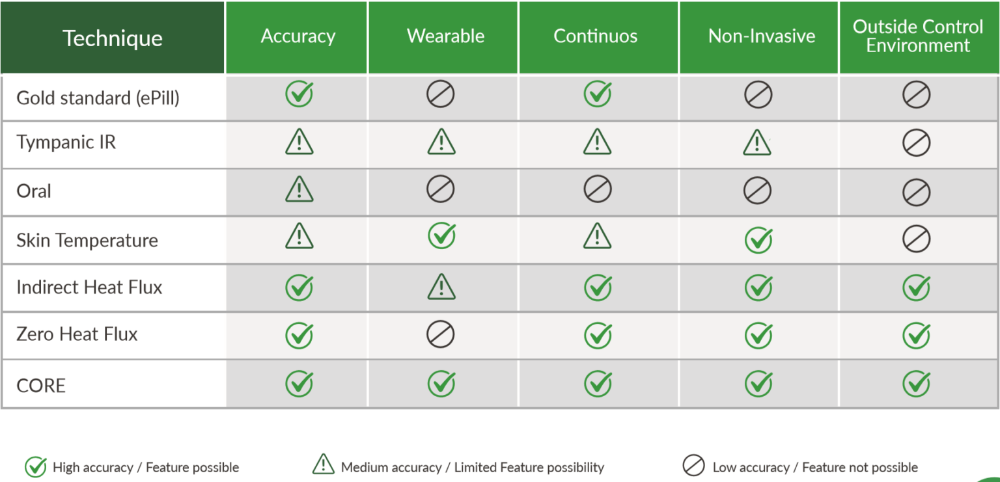
- David Gerritzen wrote in e-mail: "The raw data can be downloaded from the app." when I asked about the raw temperature measurements per second
- Cons: no ECG, no FDA nor medical CE validation, shipment starts in June 2020 (so not even started at the time of this writing, end of May 2020), need to pay a subscription of 99CHF/month/sensor to download raw data
- Price: 240CHF (270€) with VAT in EU without chest strap (as of October 2020), for both B2B and consumers now (before it was only for B2B): https://corebodytemp.com/faq/ - maybe here for consumers: https://shop.greenteg.com/core
- However, to be able to download data as csv for post-processing and analysis on a computer, need to buy GreenTEG CORE Research at 999CHF, which includes both the CORE and the license to access the data for a lifetime (although this goes through their server). https://shop.greenteg.com/core-body-temperature/core-for-research/
- Otherwise with standard GreenTEG CORE, we only get an access to the last 2 days of acquired data, on the phone, visually. Which is enough for simple purposes but not for data collection or a history of the circadian rhythm.
- For circadian rhythm disorders monitoring, it's likely that it's necessary to have data collection, because a window of 2 days is not enough to monitor the circadian rhythm, the patient needs at least one week and likely more, the circadian rhythm cannot be assessed just over one day especially for circadian rhythm disorders where the circadian rhythm is much more variable than with typical sleepers and can easily be masked by various factors. Circadian rhythm disorders, including DSPD, non-24 and hypersomnia, are a potentially huge market, but data collection would be necessary.
- As a workaround, the patient can write down when was the lowest period of core body temperature everyday. Not ideal because we lose data and it's cumbersome, but could be sufficient for the time being and certainly better than nothing, but it depends if that would be sufficient to estimate the circadian rhythm. If more complex algos are necessary to analyze and infer the circadian rhythm, then this pen-and-paper method won't work.
- Technical specs: https://www.eoc-inc.com/wp-content/uploads/CORE-datasheet.pdf and https://corebodytemp.com/wp-content/uploads/2020/04/CORE-forElevatedBodyTempEBT-SpecSheet-V1.5.pdf
- "Made of durable medical-grade biocompatible polymer."
- Can have a 3-axis accelerometer on demand
- "Data output streams: Core Body Temperature, skin temperature, data quality, battery level, heart rate, timestamp; additional information can be exposed upon request (ie. accelerometer, firmware version)" https://corebodytemp.com/core-for-elevated-body-temperature/
- Sampling rate: 1Hz (1 per second)
- 3-5 days of battery and logging
- BESTTUTO: https://corebodytemp.com/the-technology-behind-core/
- "A Heat Flux Sensor is a Seebeck Sensor" https://www.greenteg.com/heat-flux-sensor/about-heat-flux/heat-flux-sensor-explanation/
- https://www.greenteg.com/heat-flux-sensor/about-heat-flux/heat-flux-measurement-techniques/
- https://www.greenteg.com/heat-flux-sensor/about-heat-flux/3-types-of-heat-transfer/
- https://www.greenteg.com/heat-flux-sensor/about-heat-flux/what-is-heat-flux/ (mirror: https://web.archive.org/web/20190428015117/https://www.greenteg.com/heat-flux-sensor/about-heat-flux/what-is-heat-flux/)
- About the biological relationship between the circadian rhythm and core body temperature: https://www.researchgate.net/publication/296706758_Circadian_and_homeostatic_regulation_of_core_body_temperature_and_alertness_in_humans_what_is_the_role_of_melatonin
- About the dual heat flux technology and how it compares to other thermometers technologies: https://www.gssiweb.org/en/sports-science-exchange/Article/monitoring-internal-body-temperature (internal mirror)
- https://www.cips.org/Documents/Membership/Branch Speaker Presentations/3_greenTEG.pdf
- Heat-flux is already used for buildings (but not zero-heat-flux): "greenTEG`s U-value measurement is based on heat flux monitoring, described in ISO 9869"
- Using u-blox processor: http://www.finanztreff.de/news/u-blox-ag-greenteg-leverages-u-blox-connectivity-to-protect-health-and-safety-amid-covid-1/20500008
- Alternative: gSkin BodyTemp Patch http://www.waldytech.com/_Uploads/dbsAttachedFiles/BodyTemp-Patch-datasheet.pdf
- Battery: "Battery life: 6 days continuous transmission time (up to 6 weeks with sleep mode)" https://shop.greenteg.com/core-body-temperature/core-for-research/
- According to a newsletter from GreenTEG, the CORE is using the gSKIN XU sensor.
- Undergoing clinical validation: Fever Algorithm Development of a Non-invasive Wearable Core Body Temperature Sensor System in Intensive Care Unit Patients https://clinicaltrials.gov/ct2/show/NCT04182945
- Preliminary validations by GreenTEG Core producer: https://www.greenteg.com/coreresearch/ (mirror: https://web.archive.org/web/20210105033254/https://www.greenteg.com/coreresearch/ )
- Is the product reusable?
- "The product is fully reusable if used with a chest strap. If CORE is used as a patch, the skin-adhesive tape needs to be renewed after a shower. If the device is changed between persons, it can be cleaned with alcohol." https://corebodytemp.com/faq/
- "Do I have to pay any ongoing licence fees? No, there are no licence fees." — but to access the raw data yes, there is a licensing fee... https://corebodytemp.com/pages/faq
- "Bluetooth BLE and ANT+ connectivity are supported. CORE is also supporting the Bluetooth thermometer standard. To access data from the CORE from a 3rd party device or app, please contact us."
- "How can I connect the CORE patch to any 3rd party visualisation platform (API links?)" - contact them
- "Yes, the core has a IP67 rating. IP67 means that the unit can be dropped into a body of water up to a meter deep for half an hour."
- "What are the normal temperature ranges?"
- "It is essential to know that different thermometer methods give different body temperature readings. Generally, a rectal reading is around 0.5 °C higher than an oral reading. And an armpit or forehead scanner is 0.5 °C lower than an oral meeting. Some thermometers take these differences into account and show a temperature with an offset, and some don´t. Therefore it is always important to read the user guide. Our value is the actual (rectal) core temperature. A normal body temperature is between 97°F (36.1°C) to 99°F (37.2°C)."
- "We are not accessing the data saved in your app. For more details, please review our privacy policy."
- temperature sensor tech specs: https://www.greenteg.com/core-body-temperature/ and https://greenteg.com/template/userfiles/files/gSKIN_Heat_Flux_Sensors_OEM_XU_Datasheet V4.1.pdf and https://www.allaboutcircuits.com/news/returning-workers-keep-covid-19-at-bay-with-core-body-temperature-wearable/
- "core body temperature, skin temperature, heart rate, timestamp, data quality, and battery level"
- https://www.greenteg.com/non-invasive-core-body-temperature-measurements-during-sleep-daily-life/
- Fertility study: Baker FC, Waner JI, Vieira EF, Taylor SR, Driver HS, Mitchell D (2001) Sleep and 24 hour body temperatures: a comparison in young men, naturally cycling women and women taking hormonal contraceptives. Journal of Physiology 530.3: 565—574 - cited by GreenTEG in their presentation: https://www.cips.org/Documents/Membership/Branch Speaker Presentations/3_greenTEG.pdf and https://www.ncbi.nlm.nih.gov/pmc/articles/PMC2278431/
- 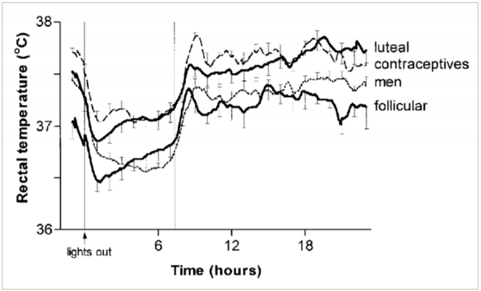
- Greenteg CORE now has an arm strap in addition to chest strap! https://corebodytemp.com/products/core-arm-strap
Alternatives:
- 3M SpotOn, most validated zero-heat-flux technology on forehead, lots of papers and institutions validating the method: http://cedit.aphp.fr/hospital-based-hta-levaluation-de-technologies-de-sante-a-lhopital/dispositif-de-mesure-de-la-temperature-corporelle-spoton/ and https://multimedia.3m.com/mws/media/878163O/spoton-system-brochure.pdf - $275 in second-hand! https://med.equipment/3m-spoton-37000-p-n-370060-temperature-monitoring-system-monitor-9365.html - not a wearable because need a monitor on the bedsite
- New name: 3M Bair Hugger Temperature Monitoring, it was renamed from SpotOn in 2016: https://www.nice.org.uk/advice/mib99/resources/bair-hugger-for-measuring-core-temperature-during-perioperative-care-pdf-63499476790213
- VALIDATION: by UK NICE: https://www.nice.org.uk/advice/mib99/resources/bair-hugger-for-measuring-core-temperature-during-perioperative-care-pdf-63499476790213
- "The cost of the Bair Hugger temperature monitoring system is £250 per unit (provided at no extra cost if enough consumables are bought) and the single-use sensors are £7.46 (exclusive of VAT). The resource impact is likely to be similar to standard care. Invasive measures that directly estimate core temperature cost between £2 and £7 for single-patient use and between £103 and £160 for re-useable devices."
- "The control unit shows the patient's current temperature and a graphical display of up to 2 hours of previous temperature data. The current temperature can also be displayed on a patient vital signs monitor if connected by the optional cable. "
- How zero-heat-flux works, in layman terms: "The single-use sensor consists of a thermal insulator next to the skin that is covered by a flex circuit containing a heating element. The temperature of the sensor is regulated by the Bair Hugger temperature monitoring system in the control unit. The thermal insulator is designed to prevent heat loss to the environment. This establishes an isothermal pathway under the sensor, bringing the core temperature to the skin surface and enabling the temperature to be recorded and monitored. The sensor takes several minutes to reach this temperature balance. "
- "The company claims that by using a single sensor that stays on the patient, any variability in measurement between different healthcare professionals or monitoring devices is avoided."
- "Seven studies are summarised in this briefing, including over 513 patients (1 study did not report the number of patients and so the exact total is not clear). All studies compared the Bair Hugger temperature monitoring system with either invasive core temperature monitoring or minimally invasive temperature monitoring. The level of agreement between the devices was high. The manufacturer has re-branded the device since these studies were published but there have been no changes to the technology itself (previously known as SpotOn)."
- Alternatives: Draeger TCore and Terumo CM-210 (CoreTemp)
- BEST: DIY Zero-Heat-Flux sensors:
- Foam-based sensor instead of sticky patch: https://doi.org/10.1109/BSN.2018.8329661
- https://doi.org/10.11239/jsmbe.55Annual.221
- BEST TOSEE: infrared temperature sensor mimicking results with zero-heat-flux? An IR Sensor Based Smart System to Approximate Core Body Temperature, 2017 https://doi.org/10.1007/s10916-017-0770-z
Wrist skin temperature
- BEST: Thermocron iButton (from Maxim Integrated or Dallas), especially DS1925L:
- Pros: very inexpensive ($40 one iButton, ~$120 for the starter kit with the necessary tool to connect to a computer with USB to transfer data), sampling rate 1 Hz (1 sample every seconds) or 1 sample every 5 minutes or 1 sample every 273h and is fully configurable, temperature resolution option: low 0.5°C or high 0.0625°C, small and can be placed anywhere on the body, long battery and internal memory, easy access to raw data (simple CSV export with timestamp), open source softwares and API and firmware!
- Cons: no bluetooth so need to put the iButton in the bluedot receiver and connect to computer using USB, with DS1922L we get the highest sampling rate up to 1 Hz but memory becomes full very fast and battery is drained very fast, whereas DS1925L has a much bigger battery (212 days of recording at 1 sample every 5 minutes) but the highest sampling rate is 1 sample per 5 minutes. Ideally, we would want 1 sample every 1 or 2 minutes. Once the battery is drained, it's not rechargeable, so either you manually replace it with a brand new one, or throw the iButton and buy a new one. On the DS1925L, the battery should last 4 years with one sample every 5 minutes, whereas the DS1922L lasts half a year with 1 sample every 1 or 2 minutes. Only measures skin temperature obviously, not core body temperature, BUT it was shown to be more reliable at reflecting skin temperature than ambient temperature compared to thermistors, and thermistors placed in the axillary (under the armpit) reflects relative changes in core body temperature, hence an iButton in the axillary should reflect accurately reflect changes in the core body temperature (but not the actual absolute value). Another possibility is to use 2 iButtons, one on a proximal site and one on a distal site, the difference showing changes in the circadian rhythm.
- Specific iButton used here, already pre-calibrated: https://www.maximintegrated.com/en/products/ibutton-one-wire/data-loggers/DS1922L.html
- Don't forget to buy an already calibrated version against NIST! Such as from Maxim Integrated:
- "While all iButton data loggers are calibrated/validated against NIST traceable reference devices, Maxim offers a web application to generate validation certificates for the DS1922L/T data loggers. Input is an iButton registration number (or list of numbers) and the output is a validation certificate in PDF format."
- iButtonLink/Thermocron does NOT include NIST calibration
- How is certification done: https://pdfserv.maximintegrated.com/en/an/AN4629.pdf
- VALIDATION: lots of studies have used the iButton DS1922L and validated it. But the DS1925L not as much, since it came out in 2016, but we can expect similar performances (albeit a smaller sampling rate).
- Same iButton used in this study, and OK to measure skin temperature: https://www.researchgate.net/publication/40033570_The_validity_of_wireless_iButtonsR_and_thermistors_for_human_skin_temperature_measurement
- https://doi.org/10.1016/j.physbeh.2006.04.026
- https://eudl.eu/pdf/10.4108/eai.20-5-2019.2282879
- Simply use a (breathable) tape/sparadrap to stick the iButton to skin
- Datasheet: https://datasheets.maximintegrated.com/en/ds/DS1922L-DS1922T.pdf
- NO DISCONTINUED: Also buy DS9490B to transfer data via USB (because no bluetooth). https://www.maximintegrated.com/en/products/interface/universal-serial-bus/DS9490.html/tb_tab3
- Necessary kit to connect to a computer and transfer data: Buy DS9490R and DS1402D-DR8+ to connect by USB to computer + use software in https://www.maximintegrated.com/en/products/ibutton-one-wire/data-loggers/DS1925EVKIT.html to install driver and download data
- Or also newer version: DS1925, video with comparison with DS1922: https://www.mouser.be/new/maxim-integrated/maxim-ds1925-temp-logger/ and https://www.youtube.com/watch?v=wjXfUbQf8qI
- Main differences: DS1925 can retrieve data even if battery dead, DS1922 has better sampling resolution (up to 1Hz, whereas DS1925 is one sample every 5 min), and no NIST calibration for DS1925? And evaluation kit is < 100€ for DS1925, with everything necessary to connect and use, and above all: 122KB memory (125440 samples) with DS1925 versus 8KB memory with DS1922. Both are IP56 (water resistant - but not waterproof! so don't use under shower!). DS1925 went out in 2016, DS1922 is here since at least 2010 but likely before.
- Log duration:
- One sample every 5 min as done here: 28 days with DS1922 or 435 days with DS1925 (212 days with high temperature resolution of 0.0625°C).
- One sample every 1 min at high temperature resolution (at 0.0625°C) as advised here: 5.6 days with DS1922, impossible with DS1925.
- One sample every 2 to 3 min at high temperature resolution as done here to monitor 3 days with DS1922L.
- Starter kit, advises key fob for easier removal of the iButtons from the blue dot reader: https://www.maximintegrated.com/en/products/ibutton-one-wire/data-loggers/DS1925EVKIT.html
- Key fob is the DS9093A https://www.maximintegrated.com/en/products/ibutton-one-wire/ibutton/DS9093A.html
- other accessories: https://www.maximintegrated.com/en/products/ibutton-one-wire/ibutton/accessories.html
- https://datasheets.maximintegrated.com/en/ds/DS1925.pdf
- https://www.maximintegrated.com/en/aboutus/newsroom/newsroomall.temp-logger-monitors-longer-sessions-without-compromising-data-sample-rate.html
- https://pdfserv.maximintegrated.com/en/an/TUT5405.pdf
- Two ways to waterproof:
- capsule DS9107+
- manually https://www.sciencedirect.com/science/article/abs/pii/S030645651200023X and https://lukemiller.org/index.php/2012/12/waterproofing-ibuttons-and-reading-waterproofed-ibuttons/
- "Old farts will regale you with tales of a bygone era when you could leave a bare iButton submerged in seawater for months at a time without problems, but those days are long gone, due to a re-design in the early 2000’s. Nowadays you can’t even get away with leaving them in moist soil without eventual water intrusion, component failure, and data loss."
- water resistant IP56 anyway, sufficient to withstand human sweat for example, it's just not made to be fully immerged in water
- https://www.researchgate.net/publication/249488510_Thermochron_iButton_Limitation_of_this_Inexpensive_and_Small-Diameter_Temperature_Logger
- Data downloading:
- https://lukemiller.org/index.php/2012/07/r-scripts-for-downloading-ibutton-thermochron-dataloggers/ (mirror: .\lukemiller.org» Blog Archive » R scripts for downloading iButton Thermochron dataloggers.html )
- https://github.com/millerlp/ibuttons
- https://lukemiller.org/index.php/2012/03/launching-ibutton-thermochrons-with-the-help-of-r/ (mirror: .\lukemiller.org» Blog Archive » Launching iButton Thermochrons with the help of R.html )
- Thermocron iButton consumer review, very easy to use: https://www.youtube.com/watch?v=dXR3YErEoSg
- All softwares are opensource, including the viewer in Java!:
- https://www.maximintegrated.com/en/products/ibutton-one-wire/one-wire/software-tools/public-domain-kit.html
- https://www.maximintegrated.com/en/products/ibutton-one-wire/one-wire/software-tools.html
- https://www.maximintegrated.com/en/products/ibutton-one-wire/one-wire/software-tools/viewer.html - source code of OneWireViewer: https://github.com/concord-consortium/BlockModel/tree/master/owapi_1_10/examples/OneWireViewer
- https://www.maximintegrated.com/en/products/ibutton-one-wire/one-wire/software-tools/drivers.html
- Getting started confirms the required setup components in Figure 1: https://www.maximintegrated.com/en/design/technical-documents/tutorials/4/4373.html
- opensource java: https://adoptopenjdk.net/
- "It is a self-sufficient component, containing its own battery (3V Lithium: with more than 10 years data retention!), oscillator (32768 Hz), memory (4096 bits), internal real-time calendar and clock (precision: 2 minutes/month), programmable alarms, and full MicroLAN communications report. The pin is, in contrast to other miniature devices from similar research projects, reasonably cheap and robust." https://books.google.be/books?id=n5luCQAAQBAJ&pg=PA225&lpg=PA225&dq=ibutton+self+sufficient+battery&ots=u1FHctuiAr&sig=ACfU3U3B-5J42tTmBssVuiSaK8Y9HB8KVQ&hl=fr#v=onepage&q=ibutton self sufficient battery&f=false
- dimensions: https://i.pinimg.com/originals/9a/92/d4/9a92d4caa5184a0ba3c2579141fcab1d.png
- BESTTUTO for researchers of how to configure parameters (rollover, SUTA, etc): https://www.maximintegrated.com/en/design/technical-documents/app-notes/5/5335.html
- Battery change: https://www.researchgate.net/publication/270579725_Replacing_the_batteries_on_ibutton_Thermochron_Hygrochron_data_loggers
- Battery life (product lifetime) depends on sampling rate and temperature:
- for DS1922L: https://www.embeddeddatasystems.com/DS1922L-F5--Thermochron-iButton-40°C-thru-85°C_p_98.html -- with 1 sample per minute and at max temperature resolution, only a few months of battery life! https://www.embeddeddatasystems.com/assets/images/DS1922L-Battery-Life-High-Res.JPG
- battery duration with low temperature resolution: 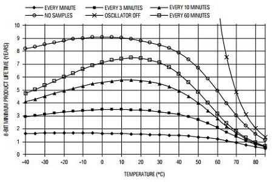
- battery duration with high temperature resolution: 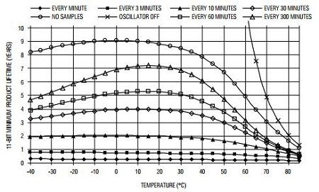
- for DS1925L: 4 years at 1 sample every 5 minutes, much better than DS1922L! https://www.embeddeddatasystems.com/DS1925L-F5--Thermochron-iButton-40°C-thru-85°C_p_260.html also 61K records memory limit if using higher temperature resolution of 0.0625°C. Hence about 212 days of continuous recording.
- battery duration (for both high and low resolution):
- for DS1922L: https://www.embeddeddatasystems.com/DS1922L-F5--Thermochron-iButton-40°C-thru-85°C_p_98.html -- with 1 sample per minute and at max temperature resolution, only a few months of battery life! https://www.embeddeddatasystems.com/assets/images/DS1922L-Battery-Life-High-Res.JPG
- Battery indicator aka gas gauge:
- "This way the Device Samples Counter register functions like a gas gauge for the battery that powers the device." https://datasheets.maximintegrated.com/en/ds/DS1922L-DS1922T.pdf
- Battery gas gauge app: https://www.maximintegrated.com/en/design/technical-documents/app-notes/3/3761.html
- How to export data to Excel and how to fix issue with european convention comma delimiter for floating numbers: https://www.maximintegrated.com/en/design/technical-documents/app-notes/3/3809.html
{kind=link}
{kind=link}
- dimensions of the iButton:
Actigraphy
- Polar Pro H10 already includes a 3-axis actigraphy, but worn on the chest (measures are more commonly done on the non-dominant wrist/arm in the scientific literature, so that these previously published models and tools may not work for chest acquired actigraphy, or may be much more inaccurate, especially at detecting sleep-wake status).
- Axivity AX3 or AX6 actigraphy, only 109 pounds (without strap, it costs 10 pounds more with) without VAT: https://axivity.com/product/ax3 and https://pubmed.ncbi.nlm.nih.gov/28976493/ and https://axivity.com/product/wrist-band
- Pros: 3/6 axis accelerometer actigraph respectively for AX3 and AX6, ambiant temperature (not skin temperature), light sensor (photopic = light level only), inexpensive price, long battery (30 days at 12.5 Hz or 14 days at 100Hz - In our own tests, the battery lasts ~10 days at 100Hz), easy connectivity (micro USB - no need for docking station, OmGUI app to download data is free), opensource, waterproof (including swimming).
- Cons: lower light accuracy (only lux)... But it's there at least.
- Exist in 6 axis accelerometer actigraph (with rotation in addition to translation) with AX6! That's the first time I see that! https://axivity.com/product/ax6
- Pros: 34 days at 50 Hz 3 axis or 7 days at 100 Hz with 6 axis! Or 140 days at 12.5 Hz!, light sensor better than GENEActiv because no infrared impact so better calibrated but smaller lux range and no resolution info (470-650 nm vs 400-1100 nm, 3-1000 lux vs 0-3000 lux, no resolution info vs 5 lux but check Broadcom APDS9007 sensor it's the one used in AX3/6 - according to sensor doc it's 3-70K lux!)
- Cons: no RGB/chroma light (but it's very rare)
- BEST REF: SMART IDEA! Combine with iButton fixated on the wristband on radial artery to get skin temperature! or can use a zero-heat-flux sensor such as GreenTeg gSENSE - Wei, J., & Boger, J. (2019). You are how you sleep: Personalized sleep monitoring based on wrist temperature and accelerometer data. In 13th EAI International Conference on Pervasive Computing Technologies for Healthcare-Demos and Posters. European Alliance for Innovation (EAI). https://doi.org/10.4108/eai.20-5-2019.2282879
- BEST METHOD: "Ortiz et. al. (2014) proposed a method that integrates temperature and accelerometer sensor data together to determine circadian phase. They calculated several phase markers by combining accemetry data and wrist temperature data using non-parametric methods. Specifically, by comparing the phase calculated from wrist temperature and the phase of DLMO, they found that wrist temperature can effectively predict circadian phase."
- "our study aims to develop an integrated wristband that uses machine learning to evaluate sleep based on each individual’s circadian rhythms."
- "As there are no available open-data wristbands with a temperature sensor that can measure the temperature of radial artery location, we built our own wristband by modifying a off-the-shelf accelerometer data logger Axivity AX3 sensor (Axivity, York, UK; 100Hz, ±8д, weight: 9g) to include an iButton DS1922L temperature sensor (Maxim, Dallas, US), as can be seen in Figure 1."
- BEST: well-validated, used by most researchers and particularly in UK BioBank, hence if using AX3 or AX6, can use UK BioBank as a huge controls dataset! Or to test my algorithm to find potential undiagnosed non24!
- Was chosen for UK BioBank because it's one of the only few to provide really raw actigraphy data: https://link.springer.com/article/10.1007/s40520-016-0604-8
- "The UK Biobank favoured the AX3 device over the others as it provides raw un-filtered actigraphy data, is a fully well-documented open-source product, is postal friendly and is value for money [12].", Validation of the AX3 triaxial accelerometer in older functionally impaired people https://link.springer.com/article/10.1007/s40520-016-0604-8
- Statistical machine learning of sleep and physical activity phenotypes from sensor data in 96,220 UK Biobank participants, Nature, 2019 https://www.nature.com/articles/s41598-018-26174-1
- " Using data from simple wrist-worn activity monitors, we developed a tailored machine learning model, using balanced random forests with Hidden Markov Models, to reliably detect a number of activity modes. We show that physical activity and sleep behaviours can be classified with 87% accuracy in 159,504 minutes of recorded free-living behaviours from 132 adults. These trained models can be used to infer fine resolution activity patterns at the population scale in 96,220 participants."
- https://www.ukbiobank.ac.uk/2017/02/worlds-largest-objective-physical-activity-dataset-now-available/
- BEST: accelerometer/actigraphy calibration and processing steps done by UK BioBank: https://biobankaccanalysis.readthedocs.io/en/latest/methods.html
- extraction of accelerometer and temperature data for uk biobank from axivity ax3: https://github.com/jlc-christie/axivity-ax3-tool
- Was chosen for UK BioBank because it's one of the only few to provide really raw actigraphy data: https://link.springer.com/article/10.1007/s40520-016-0604-8
- BEST: AX is opensource! https://github.com/digitalinteraction/openmovement/wiki/AX3
- AX3 and AX6 GUI to retrieve and analyze data! https://github.com/digitalinteraction/openmovement/wiki/AX3-GUI
- AX9 under way! https://github.com/digitalinteraction/openmovement/wiki/AX9
- for doc consciousness patients: WAX9: "Airwriting presents an automatic text recognition platform driven by signals gathered at the wrist (via a WAX9)." https://github.com/digitalinteraction/openmovement/wiki/WAX9
- Possess error correction when downloading data! https://axivity.com/userguides/ax3/settings/#additional-sensors
- "Most errors will be single bit errors (affecting a single accelerometer sample) and can in some cases can be ignored. There are two other possible means of removing these errors: error removal and error correction."
- "Additionally, a battery life penalty of ~10% will be observed. Users are recommended to only use the error correction mode if data integrity must be guaranteed or longer download times are acceptable."
- "To use the raw temperature values the user must convert the ADC values into ˚C using the following equation: T = (counts – 171) / 3.142"
- BESTTUTO: how to wear the wristband: left of arm, whatever arm: https://www.youtube.com/watch?v=R8kqGg2pcwE
- Ambient temperature analysis: https://academic.oup.com/jpubhealth/article/42/2/312/5479523
- Comparison with ActiGraph: "As with the ActiGraph devices the AX3 also provides light (lux) measurements and have similar battery and recording durations. The AX3 also includes temperature measurements. Some of the more interesting differences between the two devices are size, weight and documentation. The AX3 physical size is almost four times smaller and with only half the weight of the GT3X+. The Axivity AX3 is based on an open source strategy and has full documentation transparency with respect to hardware blue prints, firmware and other software components (10). The detailed hardware and software information for the GT3X+ monitor is not disclosed to the end-user." Generating actiGraph counts from raw acceleration recorded by an alterantive monitor. 2017
- Alternatives:
- Daysimeter, especially Daysimeter-S which can be worn as a pendant to collect light information, but is not sold anymore, despite being featured in several very interesting studies (eg, here and here).
- LightWatcher by Object-Tracker, similar to Daysimeter but still available, although quite expensive.
- http://www.object-tracker.com/produkte.html
- Pros: Photopic (light intensity) and spectral (RGB color) light sensor, 2 Hz sampling rate to 1 sample per 30 seconds, 3-axis actigraphy/accelerometer included (32 Hz), several anatomical mounts like the Daysimeter (Eyeglasses, Headset, Badge, Necklace), battery of several days (3 months in standby, but how much in use? "operational time of days to weeks, depending on the selected recording rate" and 1.5h for battery charge)
- Cons: more bulky than Daisymeter, too expensive (>$2K, but rental is ~$110/month with start fees at the beginning)
- Study: In search of light therapy to optimize the internal clock, performance and sleep, Geerdink, Moniek, 2017 https://www.rug.nl/research/portal/files/48060660/Chapter_2.pdf (comparison with Daysimeter)
- both had high failure rates
- GENEActiv Sleep actigraphy: very common in scientific labs and hence most tools are made to work with their datasets, but it is more expensive than Axivity and is closed source.
- https://www.activinsights.com/actigraphy/geneactiv-sleep/ retails around 160 pounds: https://www.researchgate.net/post/What_is_the_cost_of_ActiGraphR_GT3X_Accelerometer
- Pros: temperature (contact, not infra-red), 3 axis actigraph, long battery (24 days, 45 days @ 10Hz; 7 days @ 100Hz), data export, clinical-grade precision, light detection > 100 lux (photopic = light level only), price ok: 230€ without skin temperature (but with light sensor), 350€ with skin temperature: https://www.activinsights.com/wp-content/uploads/2014/03/2015-Price-List.pdf
- Cons: wristband, no wireless, no ECG nor heart rate, docking station required
- VALIDATION:
- Accuracy of the GENEActiv Device for Measuring Light Exposure in Sleep and Circadian Research https://www.researchgate.net/publication/340603112_Accuracy_of_the_GENEActiv_Device_for_Measuring_Light_Exposure_in_Sleep_and_Circadian_Research
- "The GENEActiv output had a strong linear relationship with photopic illuminance. However, the devices consistently under-reported photopic illuminance, especially below 100 lux. Accuracy below 100 lux depended on the light source, with lower accuracy and higher variability under fluorescent lighting. The device’s accuracy was also tested using light sources of varying spectral composition, which indicated that the device tends to under-report photopic illuminance for green light sources and over-report for red light sources. Furthermore, measures of photopic illuminance were impacted by infrared light exposure." → this is because the spectral range is too big (400-1100nm), Axivity AX3/6 should not have this issue since it's calibrated under a shorter range similar to human eyes (450-650nm)
- Complement with calibration with outside light: Comparison and Correction of the Light Sensor Output from 48 Wearable Light Exposure Devices by Using a Side-by-Side Field Calibration Method https://www.researchgate.net/publication/275039677_Comparison_and_Correction_of_the_Light_Sensor_Output_from_48_Wearable_Light_Exposure_Devices_by_Using_a_Side-by-Side_Field_Calibration_Method
- https://www.researchgate.net/publication/275058322_The_validity_of_the_GENEActiv_wrist-worn_accelerometer_for_measuring_adult_sedentary_time_in_free_living
- Comfortable: "Women felt the GENEActiv (94.7 %) and SenseWear Mini (90.0 %) were easier to wear and preferred the placement (68.4, 80 % respectively) as compared to the ActiGraph (42.9, 47.6 % respectively)." for 24h monitoring https://www.ncbi.nlm.nih.gov/pmc/articles/PMC4518514/
- Accelerometer-assessed Physical Activity in Epidemiology: Are Monitors Equivalent? "GENEActiv and Axivity data processed in GGIR are largely equivalent. If GENEActiv or Axivity is compared with the ActiGraph, time spent within intensity cut points has good agreement." https://pubmed.ncbi.nlm.nih.gov/28976493/
- Accuracy of the GENEActiv Device for Measuring Light Exposure in Sleep and Circadian Research https://www.researchgate.net/publication/340603112_Accuracy_of_the_GENEActiv_Device_for_Measuring_Light_Exposure_in_Sleep_and_Circadian_Research
- GGIR R library was initially made for GENEActiv trackers initially.
- Light sensor accuracy?
- < 30 lux capable as shown in this study: https://mhealth.jmir.org/2020/4/e14306/
Light sensors
- Ideally, melanopic light intensity (mLux) aka alpha-opic light, need to be sensed at the very least. Photopic illuminance (lux, aka light sensor) and full light spectrum are also desirable.
- The selected light sensors are worn as pendants. A study shown pendants light sensors measure light with a close accuracy compared to eye-level light sensors (and much more than wristband light sensors), at least in terms of photopic illuminance since melanopic illuminance was not tested, and they are much more comfortable.
The three available and selected sensors are:
Adalogger + RTC module
A custom-made Arduino-based light sensor, can capture both light intensity and color. See next section. (Still under development - the hardware is available but not the software code to save measurements!).
- Adalogger M0 Feather is an open-source hardware data logging board, based on Arduino, so it can be reproduced.
- BESTTUTO: get an Adalogger M0 Feather + DS3231 FeatherWing to add an accurate real-time clock with a battery (RTC), no soldering required, it clips on. Alternatives are also discussed in this link. https://publiclab.org/notes/cfastie/11-14-2017/adafruit-feathers-for-datalogging (mirror1, mirror2)
- Beware, the "Adalogger FeatherWing - RTC PCF8523 + microSD" is not a precision RTC clock, only the DS3231 is!
- Libraries:
- https://github.com/rickkas7/AdafruitDataLoggerRK
- BEST CRITICAL: open-source code to use the Feather as a CSV data logger on SD card, by Jonathan Davies (cavemoa): https://github.com/cavemoa/Feather-M0-Adalogger — open-source! Combine with the AdafruitDataLoggerRK library when using the RTC featherwing (module).
- BESTTUTO: sample codes for the Adalogger with a tutorial: https://tigoe.github.io/DataloggingExamples/feather-m0-adalogger.html + https://github.com/tigoe/DataloggingExamples
- Low energy discussions:
- Alternative data loggers:
- https://publiclab.org/wiki/data-logging
- (open-source hardware datalogger, just like adalogger) https://publiclab.org/wiki/riffle
- COMPONENTS:
- 3 components:
- Broadcom APDS9007 for light intensity sensor, see above, same as the internal light sensor used in AX6.
- Alternative: TSL2591, better than photoresistive sensors (CdS cells): https://shop.mchobby.be/fr/environnemental-press-temp-hrel-gaz/1599-tsl2591-capteur-lux-luminosite-lumiere-numerique-3232100015999-adafruit.html
- "can separately measure infrared, full-spectrum or human-visible light" https://www.amazon.fr/Adafruit-TSL2591-Dynamic-Digital-ADA1980/dp/B00XW2OFWW
- Alternative: TSL2591, better than photoresistive sensors (CdS cells): https://shop.mchobby.be/fr/environnemental-press-temp-hrel-gaz/1599-tsl2591-capteur-lux-luminosite-lumiere-numerique-3232100015999-adafruit.html
- Another APDS9007 but with a blue light filter, so as to measure by subtraction the intensity of blue light. Or better, a pass-band filter for any wavelength other than the blue-green spectrum.
- Light color (spectrum) sensor: Broadcom APDS9253 https://www.mouser.fr/ProductDetail/Broadcom-Avago/APDS-9253-001?qs=T3oQrply3y9os9rwnJ1p%252Bg%3D%3D with 3 peak wavelengths at 470 nm, 550 nm, 610 nm + https://docs.broadcom.com/doc/APDS-9253-001-DS + does light intensity too
- Alternatives: https://www.mouser.fr/Optoelectronics/Optical-Detectors-and-Sensors/Ambient-Light-Sensors/_/N-a13gh?P=1y95bgk
- low energy https://www.mouser.fr/ProductDetail/Gravitech/I2C-COLOR?qs=fkzBJ5HM%252BdBHFNCPEuxzHw%3D%3D + https://www.gravitech.us/i2c16coleser.html
- alternative: Capteur Spectral 6 canaux - AMS AS7262 - Spectromètre (450, 500, 550, 570, 600, 650nm) https://shop.mchobby.be/fr/autres-capteurs/1991-capteur-spectral-6-canaux-as7262-spectrometre-3232100019911-pimoroni.html
- https://shop.mchobby.be/fr/autres-capteurs/1513-tcs34725-capteur-de-couleur-rgb-filtre-ir-led-blanche-3232100015135-adafruit.html
- UV index can be calculated from visible light spectrum + infrared? https://shop.mchobby.be/fr/environnemental-press-temp-hrel-gaz/1173-si1145-senseur-lumiere-visibleinfrarougeindex-uv-3232100011731-adafruit.html
- Broadcom APDS9007 for light intensity sensor, see above, same as the internal light sensor used in AX6.
- only other alternative is lightwatcher but expensive
- 3 components:
- METHODS:
- BEST CRITICAL METHODS and idea: use 2 light intensity sensors, one normal for the full visible spectrum + one with a blue-green light filter, the difference of both sensors will show the amount of blue-green light that can modify the circadian rhythm! https://www.researchgate.net/publication/334043969_Determining_Light_Intensity_Timing_and_Type_of_Visible_and_Circadian_Light_From_an_Ambulatory_Circadian_Monitoring_Device
- My summary: The idea is to use a sensor for full visible light + same but blue light filtered, so that we can infer directly the intensity of blue-green light exposure which affects the circadian rhythm, contrary to using a color sensor which will be biased and only indirectly allow to calculate the intensity of exposure to blue-green light! It's very similar to what I was trying to make!
- "an algorithm that allows to determine light intensity, timing and circadian light stimulation by differentiating between full visible, infrared and circadian light, as well as to discriminate between different light sources (natural and artificial with low and high infrared composition) in subjects under free living conditions. The ACM device is provided with three light sensors: (i) a wide-spectrum sensor (380-1100 nm); (ii) an infrared sensor (700-1100 nm) and (iii) a sensor equipped with a blue filter that mimics the sensitivity curve of the melanopsin photopigment and the melatonin light suppression curve."
- But why do they care about correcting infrared light??? To differenciate between the light source being natural or artificial:
- "Here, we reported the spatial and spectral ability of a wrist worn ACM device provided with three light sensors that combines full spectrum, infrared and blue light simultaneous monitoring, allowing not only intensity and timing of visible and circadian light exposure to be evaluated, but also to infer light source and thus, differentiate between natural and artificial light exposure." → but no color detection! They only consider blue-green light exposure, but it's sufficient since it's the light that maximally stimulate the ipRGC cells! But using the other sensor we have access to the full spectrum anyway!
- BEST CRITICAL: light sensor on the wrist does not make much difference in terms of detecting exposure to circadian light! (different from full light): "In order to facilitate the usability of the ACM device under normal living conditions, it has been designed to be worn on the wrist, discarding other placements closer to the eyes but much more uncomfortable for the subjects. Although, at first instance, it could be argued that this position could affect the accuracy of lighting measurements, previous studies by Figueiro et al. (2013) have shown that differences in active circadian light exposure are surprisingly small, typically less than 10% on average, when data at eye and wrist level are compared. Thus, light exposure measurement in other places than the eye seems to be also a reliable method when assessing circadian light exposure."
- Original ref is the same one I use elsewhere: Figueiro, M. G., Hamner, R., Bierman, A., and Rea, M. S. (2013). Comparisons of three practical field devices used to measure personal light exposures and activity levels. Light. Res. Technol. 45, 421–434. doi: 10.1177/1477153512450453
- BEST CRITICAL METHODS: technical details about the light sensors: "To record visible light (400–700 nm), a combination of two sensors is used in KronowiseR , one of full spectrum ranging from 400 to 1100 nm and another for infrared light (from 700 to 1100 nm). The combination of these two measures allows, on one hand, to differentiate whether light source is natural or artificial and among these, if light is provided by sources with high or low content in infrared radiation, or by the sun, as those light spectra shown in Figure 6. The circadianeffective light is detected thanks to blue filter covering a second full light spectrum sensor. The selected blue filter shows a transmittance profile to sunlight that is highly coincident both with the spectral inhibition curve of melatonin (Brainard et al., 2001) and with the model of melanopsin sensitivity curve of the ipRGCs (Enezi et al., 2011), letting pass visible wavelengths between 380 and 590 nm and above 680 nm. Thus, the “dose” of active circadian light to which the subject is exposed to can be calculated without inferences from combination of blue and green detectors, as it happens with Actiwatch Spectrum (Cao et al., 2015)."
- Comparison between Kronowise, Daisymeter and Actiwatch Spectrum: "To date, and to our knowledge, only two ambulatory devices are available for the detection of visible and circadian light: the Daysimeter (Bierman et al., 2005) and Actiwatch Spectrum (Phillips)."
- "The Daysimeter, a head-mounted device, has been specifically designed for detecting light exposure, so its performance in this field is very interesting; however, the device only includes an accelerometer and must be placed close to the eyes, limiting seriously its ability to detect sleep and wakefulness states. In addition, and although its light sensor shows a sensitivity curve restricted to the photopic spectrum, it shows a significant drop between 550 and 600 nm, a band to which the human eye is sensitive (Dartnall et al., 1983; Roorda and Williams, 1999)."
- "The second device, Actiwach Spectrum, was primarily designed for detecting sleep and wake rhythms (Young et al., 2009; Kripke et al., 2010), and later incorporated RGB detection. This latter consists of three color sensors for light in the long wavelength (∼600–700 nm), middle-wavelength (450–600 nm) and short-wavelength range (∼400–550 nm), which correspond to R, G, B spectral outputs and a broadband “white light” (W) output (Price et al., 2012; Cao et al., 2015). However, its sensitivity spectrum does not match the one for the human retina. It shows a bimodal pattern, with a main peak at short wavelengths and a secondary peak at long wavelengths. In contrast, in the 570–600 nm band, the device is practically non-sensitive. This band, apart from its sensitivity of human retina, is characteristic of discharge light sources such as fluorescent lamps (Figueiro et al., 2013). Consequently, the photometric measurements of these common light sources will be systematically biased with this device and circadian light stimulation must be indirectly deduced from data recorded by blue and green sensors."
- "Considering that the most powerful zeitgeber for circadian entrainment is the light-dark cycle (Roenneberg and Foster, 1997; Roenneberg et al., 2003), its simultaneous recording with other output signal seems a must to obtain an integrative assessment on the circadian function. In this sense, KronowiseR can constitute a useful and comfortable tool to deep our knowledge on light synchronization effects while people maintain their usual lifestyle."
- Melanopic ratio (MR), Equivalent Melanopic Lux (EML) and Circadian Stimulus (CS) metrics: https://www.lightzoomlumiere.fr/article/rythme-circadien-etat-de-lart-metrique-de-loeil/
- Circadian stimulus and circadian activation factor https://www.ambx.com/news/2020/6/25/how-to-measure-the-effectiveness-of-circadian-lighting
- BEST CRITICAL: Melanopic illuminance defines the magnitude of human circadian light responses under a wide range of conditions, 2020 https://pubmed.ncbi.nlm.nih.gov/32248548/
- "we analysed data from nineteen different laboratory studies that measured melatonin suppression, circadian phase resetting and/or alerting responses in humans to a wide array of stimulus types, intensities and durations with or without pupil dilation. Using newly established SI-compliant metrics to quantify ipRGC-influenced responses to light, we show that melanopic illuminance consistently provides the best available predictor for responses of the human circadian system. In almost all cases, melanopic illuminance is able to fully account for differences in sensitivity to stimuli of varying spectral composition, acting to drive responses that track variations in illumination characteristic of those encountered over civil twilight (~1-1000 lux melanopic equivalent daylight illuminance). Collectively, our data demonstrate widespread utility of melanopic illuminance as a metric for predicting the circadian impact of environmental illumination. These data therefore provide strong support for the use of melanopic illuminance as the basis for guidelines that seek to regulate light exposure to benefit human health and to inform future lighting design."
- BEST CRITICAL METHODS and idea: use 2 light intensity sensors, one normal for the full visible spectrum + one with a blue-green light filter, the difference of both sensors will show the amount of blue-green light that can modify the circadian rhythm! https://www.researchgate.net/publication/334043969_Determining_Light_Intensity_Timing_and_Type_of_Visible_and_Circadian_Light_From_an_Ambulatory_Circadian_Monitoring_Device
Lys Button
Lys Button is a light sensor designed specifically by and for circadian rhythm researchers: https://lystechnologies.io/for-research/
- costs 151 pounds (without shipping) per person per year (96 pounds for the yearly renewal, the initial higher price includes one Lys Button sensor) and access to the Data Platform to get access to the raw data. Select the Lys Plan > Research > LYS Light Diet® app and Data Platform. https://lystechnologies.io/pricing/
- It is already photocalibrated.
- Can capture mLux, lux, color spectrum (red, blue, green) and even 3-axis actigraphy.
- Already used by other circadian rhythm researchers.
- Can be clipped on clothes, or worn as a pendant if I make a custom support.
- Thank you to Coral for the tip!
- The Android app does not yet work, raw data is not sent. The iOS app works according to the manufacturer. They are currently investigating this issue (as of October 2021) but no ETA.
- Internal storage capacity is 18h according to the manufacturer, hence data must ideally be transferred twice a day in bluetooth via the app (every 12h).
- But from practical tests (by waiting without transferring data, we can know how long the device can record and when it starts erasing old data), we rather estimate the internal data storage to be up to 37h32min of on-device memory, with roll-over (old data is overwritten), when using the Track tab in the iOS app to download data from the Lys button and concurrently upload to the cloud.
- On the other hand, when using the Now > Connect to Lys function in the app, it appears to only store the last 8-12h of data with no rollover, so once the 8h are exhausted, no new data is recorded on the Now > Connect to Lys dedicated storage space on-device - as it seems to be a different memory storage space than for the Track, which implements rollover. For example, we stopped transferring data from 2022-02-14 at 2:00 until 2022-02-16 21:40 to test the internal storage capacity, and when using the Now > Connect to Lys function, data between 2022-02-14 2:00 to 2022-02-14 10:00 got uploaded, but nothing beyond. Then, using the Track function in the app, data from 2022-02-15 8:08 to 2022-02-16 21:40 got uploaded, hence a 37h32min of internal storage (on-device, not in the phone's memory) for the Track function.
- Battery lasts 7 full days according to our own tests, then it requires a 100% recharge.
- Technical specs: https://lystechnologies.io/help/
- Spectral range of the LYS Button: LYS is an RGB sensor with a spectral range from 350-750nm.
- Intensity range of the devices have in lux: 0-100.000 Lux.
- Units of measurement and definition metrics:
- Kelvin: Colour temperature measured in Kelvin
- RGB: Counts/μW/cm^2
- Lux: Light intensity measured in Lux
- Movement (3-axis accelerometer): Proxy for activity. Count the number of times acceleration exceeds 0.1875g (g=gravitational force) in any of the 3 axis over the logging time interval
- mLux: melanopic lux, α-opic equivalent daylight (D65) illuminance with spectral age correction
Luminette usage history via Bluetooth
- A new batch of Luminette v3 destined to the American market is integrating a usage history feature that can be collected with a new app (not the ones on the app stores) via Bluetooth, although it works only on iOS 14+. As of February 2022, this feature (and app) is still experimental and only available to selected researchers and partners, so this is not accessible to consumers.
- Luminette usage history is necessary to complement cloth or pendant-worn light sensors such as LYS, as they are too far to sense the light from Luminette, and hence cannot track the usage (duration and timing) of light therapy.
- Alternative: light therapy usage could be monitored manually by the user simply writing down the time of start/end of each light therapy session in a file. An easy solution is to use a spreadsheet. A semi-automatic and faster solution would be to use a "tapper" software to start/stop tracking at the tap of a button, which is the goal envisioned for the Circalog software (still in development).
HOBO Pendant
- HOBO Pendant Temperature/Light Data Logger UA-002-64 (Onset Computer Corporation, Bourne, Massachusetts, USA), acquire only light intensity (and with a bigger range than human eyes), not color
- https://www.onsetcomp.com/products/data-loggers/ua-002-64/
- Price: 59.55 euros only!
- Battery is replaceable! "The logger requires one 3-Volt CR-2032 lithium battery. A new battery typically lasts one year with logging intervals greater than one minute. Deployments in extremely cold or hot temperatures, or logging intervals faster than one minute, may significantly reduce battery life. Continuous logging at the fastest logging rate of one second will deplete the battery in as little as two weeks." For combined light and temperature sensing! https://www.onsetcomp.com/files/manual_pdfs/9556-M UA-002 Manual.pdf
- See figure D, spectrum captured is much wider than eyes... need to add a passband filter for the wavelength range of human eyes. https://www.onsetcomp.com/files/manual_pdfs/9556-M UA-002 Manual.pdf
- TODO:
- need to add an optical filter to reduce the light wavelength range to humanly observable light only (ie, remove UVs and infrared)
- buy the PC USB adapter to transfer data (which incurs an additional cost)
- "This miniature data logger can record temperature and relative light levels. Complete with waterproof casing, this product is designed for indoor, outdoor, and underwater deployment. This model can store approximately 52,000 measurments of 10-bit readings. Use a solar radiation shield for accurate temperature measurement in sunlight. See RS1 Solar Radiation Shield (assembly required) and M-RSA (pre-assembled) Solar Radiation Shield. Note that using a solar radiation shield prevents the use of the light sensor."
- "Data readout in less than 30 seconds via fast Optic USB interface" → very good idea, faster and more reliable than bluetooth!
- "The UA-002-64 data logger supports the following measurements: Light Intensity, Soil Temperature, Temperature and Water Temperature"
- So it only acquire light intensity, and in a range greater than human eyes (150-1200 nm). No color. But does acquire ambient temperature too simultaneously.
- Sampling rate: one sample every 30s.
- Used in this incredible PhD study:
- "According to the manufacturer specifications, the data logger has a measurement range between 0 and 320,000 lux, memory capacity for up to 28,000 values taken at regular, previously programmed intervals (in our case, every 30 s), and light-spectrum wavelength recording capacity of 150-1200 nm, which is broader than the sensitivity of the human eye. In order to validate the light sensor, a LX 101 lux meter (3E NDT, Pasadena, Texas, USA) was used to make a set of simultaneous recordings in different environments (data not shown). Readings from both devices demonstrated a strong, significant positive correlation at different intensities (r=0.997, p<0.01). A high degree of repeatability of sensor measurements was observed when recordings were simultaneously performed with two different Hobo sensors (r=0.998, p<0.01)."
- BEST METHODS: "Participants were instructed to wear the lux meter over clothing and to leave it on the bedside table during sleep. To compare the light exposure of our subjects to the natural sunlight cycle, environmental light intensity was recorded for 1 wk in the same area and for the same experimental period. To do this, a Hobo sensor was placed outdoors, facing North in a shady location to avoid direct light irradiance."
- SPECS: https://lystechnologies.io/help/
- Spectral range of the LYS Button: LYS is an RGB sensor with a spectral range from 350-750nm.
- Intensity range of the devices have in lux: 0-100.000 Lux.
- Units of measurement and definition metrics:
RGB: Counts/μW/cm^2
Lux: Light intensity measured in Lux
Movement (3-axis accelerometer): Proxy for activity. Count the number of times acceleration exceeds 0.1875g (g=gravitational force) in any of the 3 axis over the logging time interval
mLux: melanopic lux, α-opic equivalent daylight (D65) illuminance with spectral age correction
- Need to sync LYS data twice a day (morning and evening): "The LYS Button has 18 hours of internal memory, which means that the LYS Button can be worn during a whole day without having to carry the phone. Once a day the phone should be next to the Button in order to enable data transfer."
Smartphone camera
- BEST CRITICAL: Smartphone-based measurement of the melanopic daylight efficacy ratio, Lucassen et al, 2019 https://www.semanticscholar.org/paper/Smartphone-based-measurement-of-the-melanopic-ratio-Lucassen-Sekulovski/2b2c9cb88f8e7d4de23fbeba7c64b30d97a85728
- "To estimate the effects of light on the circadian rhythm (as mentioned in the Introduction), knowing the melanopic DER for a light source is not enough. The melanopic DER is a ratio, a dimensionless number, and is independent of the intensity of the light. To calculate the ‘melanopic illuminance', the melanopic DER needs to be multiplied with the illuminance level. Here we show that the illuminance can be estimated from the smartphone camera parameters which are stored as metadata with an image file."
- Tested with iPhone SE, Huawei P20 and HTC One A9.
- Melanopic illuminance can only be calculated with RAW images. But melanopic DER can be calculated from JPEG.
- "What needs to be checked, though, is how the method performs under more widely varying changes in illumination, both spectral changes and illuminance levels. Perhaps a more sophisticated colorimetric characterization approach is needed, like worked out for a set of digital cameras [5]."
- "With less than 3% average error in the RAW measurements for the two most recentsmartphones, this is already more than enough to measure relevant differences in practical lighting situations."
- They made an Android app but did not release it.
- It seems a similar algo is implemented in the Lys app on Android, in the menu enable Camera mode, and it will evaluate ambient lighting and its effect on the circadian rhythm from the camera (although it seems to overestimate a lot compared to the sensor). Not sure this mode is accessible without a Lys button. https://play.google.com/store/apps/details?id=uk.co.lystechnologies.lys (mirror)
Sleep stage scoring (alternative to EEG polysomnography)
New devices using artificial intelligence / machine learning may be able to provide a proxy measure for sleep stages (ie, sleep stage scoring), by using multiple vitals data such as combining heart rate, heart rate variability, blood oxygenation, skin temperature, actigraphy, etc:
- Oura ring (but since it's on the fingers, only biological night time measurements when sleeping and hence not using nor washing the hands are reliable as they say themselves): https://support.ouraring.com/hc/en-us/articles/360025587493-How-Does-Oura-Measure-Body-Temperature- and https://ouraring.com/circadian-rhythms-bedtime - price: 314€ https://ouraring.com/product/heritage-silver
- Pros: temperature (Negative temperature coefficient (NTC) sensor for body temperature, resolution very good: 1 sample per minute, 24/7 acquisition), heart rate and heart rate variability via PPG (no ecg since resolution is poor: one sample every 5min, 24/7 acquisition with v3), 3-axis actigraphy, tags (but not custom)
- Cons: on the fingers, so less precise for temperature (can be modified by simply washing hands...), temperature only meant to be acquired at night because during the day too many confounds (washing hands, ambient temperature, etc), not clinical-grade
- For an all-in-one portable consumer-grade device but close to clinical-grade, it's probably the best.
- Specs: https://ouraring.com/ring-technology
- Waterproof IP rating 10 ATM? https://wearvs.com/review/oura-ring
- "A few additional features can make the price tag feel worth it, like water resistance and wireless charging. The ring is safe in up to 328 ft of water and only needs to be charged once a week via the included charging pad." https://www.gizmos.com/oura-ring-review/a and https://support.ouraring.com/hc/en-us/articles/360025428394-Product-Safety-Use
- Update: Oura v3 (Nov 2021), which has good accuracy for resting state heart rate and heart rate variability detection and can monitor ECG/PPG 24/7 including during sleep. But as with any other PPG based device, motion heart rate accuracy is likely poor, so measurements during the day should be considered less accurate, but measurements during sleep may be considered reliable. Also note that resolution is poor, since only one data point is sampled every 5 minutes, so that sudden variability changes may not be caught. https://ouraring.com/blog/how-accurate-is-oura/
- Red light for PPG is better than green light, penetrates 10x deeper into the skin tissues: https://www.linkedin.com/pulse/going-red-green-sameer-sontakey (as used in Biostrap and Oura ring) and https://ouraring.com/ring-technology
- captures naps too (and hence should work for non24 individuals, at worst the night sleep will be captured as a nap). Most actigraphic devices are not able to detect naps or sleep sessions outside of a predefined night period, usually hardcoded by the manufacturer.
- automatic sleep staging using a proprietary algorithm that includes heart rate, heart rate variability, SpO2 (oxygenation), and maybe temperature?
- "Petteri Lahtela, CEO and co-founder of Oura, has said that reaching the accuracy of EEGs from the comfort of home was the company's goal." https://www.inverse.com/innovation/how-tech-saved-sleep
- NTC sensor:
- "The temperature sensitivity coefficient is about five times greater than that of silicon temperature sensors (silistors) and about ten times greater than those of resistance temperature detectors (RTDs)." http://www.resistorguide.com/ntc-thermistor/
- "Compared to RTDs, the NTCs have a smaller size, faster response, greater resistance to shock and vibration at a lower cost. They are slightly less precise than RTDs."
- Validation studies:
- Validation for sleep studies: "The ŌURA ring’s sleep staging classification accuracy compared to the PSG classification was 65.3 % when the ring was worn on the nondominant hand, Cohen’s kappa 0.45. " https://d1a0efioav7lro.cloudfront.net/wp-content/uploads/2018/10/23112923/Validity-of-the-OURA-Ring-in-determining-Sleep-Quantity-and-Quality-2016.pdf
- New sleep staging algorithm for v3: now includes heart rate, heart rate variability, SpO2, actigraphy, temperature measures to increase reliability, achieving 79% agreement and sleep staging accuracy 74-98% according to a MDPI publication (ex-predatory journal...): https://ouraring.com/blog/new-sleep-staging-algorithm/ and https://doi.org/10.3390/s21134302
- "One of the main strengths of this work is the high sensitivity and specificity the algorithm achieves across all sleep stages — ranging from 74% to 98%. While other studies have shown similar results for the detection of a specific sleep stage, this improved performance typically comes at the expense of the others (e.g. high performance in detecting deep sleep might result in a poor ability to detect REM)."
- According to other scientists quoted by Oura, the methods in the paper describe the whole sleep staging technology they use, so this is not closed source: https://ouraring.com/blog/new-sleep-staging-algorithm/
- METHODS: https://doi.org/10.3390/s21134302
- "By including data collected from both hands from different individuals, we aimed at developing an algorithm that could perform well independently of sensor location."
- IMPORTANT positioning: "To ensure high data quality, participants were instructed to position the LEDs of the ring on the bottom side of their fingers when going to bed. Due to proper ring selection, and the typical limited movement during night, together with the fact that fingers tend to get swollen during sleep, the ring typically does not move or rotate during the night, ensuring high data quality."
- "PSG was acquired using the SOMNOtouch device (SOMNOmedics GmbH, Randersacker, Germany). Sleep scoring was performed with the validated Z3Score algorithm"
- SOMNOtouch RESP is a portable PSG (polysomnography) device, it also works for children!
- "Features were extracted offline from the available data streams (accelerometer, PPG, and temperature) using sliding windows of different lengths based on the relation between these data streams and sleep stages. For example, window lengths of 1 and 5 min were used for HRV analysis to capture both short-term or faster changes in parasympathetic activity, as well as longer-term changes, as typically present in resting heart rate. When considering multiple features associated with similar physiological mechanisms, we prioritized features with lower computational complexity, to enable faster execution time and potentially ease a future embedded implementation in real-time. More details on each data stream are provided below. Additionally, we included sensor-independent features representative of the circadian rhythm which have shown to improve sleep stage classification in previous research [26]." https://www.ncbi.nlm.nih.gov/pubmed/31579900
- OW’s code for accessing the accelerometer and heart rate data in the Apple Watch is online at https://github.com/ojwalch/sleep_accel.
- Clock proxy is a simple model using step data instead of light exposure to calibrate a cosine wave, this works only for typical sleepers.
- New sleep staging algorithm for v3: now includes heart rate, heart rate variability, SpO2, actigraphy, temperature measures to increase reliability, achieving 79% agreement and sleep staging accuracy 74-98% according to a MDPI publication (ex-predatory journal...): https://ouraring.com/blog/new-sleep-staging-algorithm/ and https://doi.org/10.3390/s21134302
- Can be used in planes: https://ouraring.com/oura-validation-psg
- heart rate and heart rate variability are 99% close to an ECG (but not for amplitude and detailed heart beat shape): https://ouraring.com/how-accurate-is-oura and https://ouraring.com/measuring-heart-rate
- https://ouraring.com/ucsf-tempredict-study
- Validation for sleep studies: "The ŌURA ring’s sleep staging classification accuracy compared to the PSG classification was 65.3 % when the ring was worn on the nondominant hand, Cohen’s kappa 0.45. " https://d1a0efioav7lro.cloudfront.net/wp-content/uploads/2018/10/23112923/Validity-of-the-OURA-Ring-in-determining-Sleep-Quantity-and-Quality-2016.pdf
- Alternatives: https://www.mobihealthnews.com/content/seven-ways-health-consumers-are-tracking-their-sleep
Wearables conception, calibration and donning procedure
General procedures for all wearables
- Method wearables avoid superficial skin damage:
- BEST CRITICAL: Move wearable belt up or down every day and before sleeping and anytime whenever the wearables feel itchy. This is necessary to avoid skin damage and reduce itchiness when worn 24/7. In practice this was found to be the most effective strategy, allowing to wear the wearables for a virtually unlimited length of time. It's also necessary to clean up the wearables with a tissue imbibed in alcohol from time to time (about once a week).
- Also avoid tightening belts too much. The more pressure, the faster skin will be damaged or itchy. The sweet spot is tightening just enough to ensure reliable and robust skin contact with the sensors, but not more than that.
- It's necessary to re-do this procedure anytime the wearables feel itchy. The sooner the wearables are moved and pressure loosened, the less damage the skin will sustain. By taking on the habit of doing this as soon as itchiness feelings appear, it's possible to wear the devices continuously 24/7 (the author could wear the wearables continuously for 2 weeks).
- Use this opportunity to check and re-position if necessary the sensors to ensure good skin contact (ie, the whole surface of the sensor must be in contact with the skin). Checking and repositioning sensors must become a regular habit.
- BEST CRITICAL: Avoid using sticky-based patch wearables or tape-based wearables, as adhesives will worsen irritation and are thus inadequate for continuous 24/7 long term wearing.
- It's important to avoid any wearable that requires the use of medical tape or sticky gel patches/electrodes, as they may feel comfortable at first but will invariable produce a skin reaction after some time (usually a few days). For continuous wear, it's necessary to use wearables that can be in contact with the skin without any adhesive, such as by strapping a belt.
- Other strategies that did not work as well:
- Good but does not allow for continuous wear and cannot be applied to all wearables: Use silicone micropore because can be moved and retaped, for ibuttons.
- https://www.ncbi.nlm.nih.gov/pmc/articles/PMC7147274/
- Not too much pressure, important to allow for blood circulation in the superficial skin layers.
- "One study found that 52% of medical staff with hand eczema wash their hands more than 10 times per day.10 Long-term disinfectant use also influences the microbiota and changes the immune microenvironment on the skin surface, resulting in conditions such as eczema, fungal infection, bacterial infection, and allergic dermatitis."
- "Adequate cleaning and moisturizing are the basis of skin barrier maintenance. An appropriate cleaning frequency removes dirt, bacteria, and some sweat and oil from the skin surface, which reduces the irritation caused by their long-term presence and reduces the risk of infection. Adequate moisturizing helps maintain the moisture content of the corneum, maintains the “brick-wall” structure of the epidermis, and facilitates cell self-repair.18 Basic moisturizing usually consists of two categories: the application of a water-soluble moisturizer (including glycerin and sodium hyaluronate) that supplements natural moisturizing factors to lock in moisture,19 and the application of squalane, mineral oils, and various natural oils to replenish sebum, which forms an oil film on the skin surface to prevent water loss. People with rich sebum in a closed equipment environment should use water-soluble moisturizers to prevent excessive oil from blocking the pores and causing acne."
- "Acne treatment: Apart from wearing appropriate PPE and avoiding prolonged use, general treatments include: proper skin cleansing, a reasonable selection of skincare products (mainly water-soluble moisturizers and no hormones), a low-sugar diet, and avoidance of squeezing pimples with the hands."
- WARNING source may not be very reliable: "Traditional Chinese medicine or photodynamic therapy can also be used."
- https://www.researchgate.net/publication/319008444_Understanding_Moisture-Associated_Skin_Damage_Medical_Adhesive-Related_Skin_Injuries_and_Skin_Tears
- Essayer de mettre une compresse en dessous pour absorber humidité !
- Wearables change chestbelt position twice a day, at wake up and then before sleep.
- Ibuttons with medical tape move every 1 or 2 days to the other armpit. With the silicone micropore tape, it's possible to reuse the same tape, it will still stick because no adhesive is used, it's based on pressure.
- If itchy, don't hesitate to scratch gently and move the chest belt a bit. If the itchiness feeling is repeating, then it's a clear sign it's time to move the chest belt to another skin location.
- For the chest belt any location on the chest as high as below the nipples or as low as the belly should work fine to acquire a sufficiently good ecg signal, as can be checked by looking at the graph and observing a QRS shaped complex.
- It's the warmth and wetness and too tightness that causes skin irritation! https://www.muellersportsmed.com/blog/post/how-to-handle-skin-care-and-prevent-itching-when-wearing-a-brace
- "No matter what kind of brace you wear, skin has a universal response to being warmed and confined over a long period of time. Eventually, you will find yourself fighting the urge to scratch."
- "If your skin can't breathe because the brace is too tight, you can also bring on a heat rash or a sweat rash, which will appear and feel much like a rash and make wearing your brace more uncomfortably itchy in the future."
- "For many braces, the material of the brace is not necessarily absorbent or breathable, but cotton is. A layer of soft natural cotton between your skin and the brace can reduce chafing and the risk of forming a heat/sweat rash at the same time."
- "Apply Powder to Prevent Heat and Sweat Rash"
- "If you are experiencing excessive sweating and a moist sweat rash or heat rash, many people have found that this can be alleviated with a gentle layer of powder. Apply either talcum powder or baby powder, which are similar, to your skin or the inside of the brace before wearing to help both suppress sweat and create a soft absorbing layer between your skin and the brace material. Others have found relief with lubricant like vaseline instead, but this will depend on your needs and the type of brace you're using."
- Silicone does not cause allergies: https://lymed.fi/en/ufaqs/tuotteen-silikoninauha-aiheuttaa-ihoarsytysta-ja-nappyloita-onko-kyseessa-silikoniallergia-ja-miten-voi-ehkaista-sita/ "Based on literature, most of the reactions caused by silicones are non-allergic and non-specific. It is usually plain irritation, caused by skin’s properties, skin care products and hygiene – and the combination of them all. Individual elements, like pH of the skin, microbes, sweat, skin lotions and personal hygiene, can cause the irritation. Irritation can increase when sweating is more prominent – for example in higher temperatures. One can remove some of the irritation by cleaning the silicone band and the skin below it more frequently than before. The silicone band can be wiped clean several times a day. The skin below can be left lotionless."
- BEST CRITICAL: Move wearable belt up or down every day and before sleeping and anytime whenever the wearables feel itchy. This is necessary to avoid skin damage and reduce itchiness when worn 24/7. In practice this was found to be the most effective strategy, allowing to wear the wearables for a virtually unlimited length of time. It's also necessary to clean up the wearables with a tissue imbibed in alcohol from time to time (about once a week).
Consumables
A few items must be renewed regularly:
- Alcohol, necessary to clean everything.
- Accessories for ECG Polar Pro H10:
- Polar Pro Chest Strap must be renewed every 4-6 months (depending on wear/twisting), costs about 35-40 euros. When the app shows 0 bpm, or when the graphs do not show a clear stabilized ECG reading with regular heartbeats, after wearing the belt for a few hours, then the belt needs to be changed.
- Battery CR2320 must be replaced once every 10 days.
- Accessories for GreenTEG Core:
- The velcro bands (for the DIY attachment system) wear down slowly and need replacement only about once per year. If the device is shared among multiple different patients, it needs to be replaced each time as it looks dirty fast since it captures fluffs from the chest belt, although if it is cleaned regularly with alcohol it isn't really.
- iButtons:
- if using the DS1925L variants, they can last several years, but once their battery is depleted, they must be replaced by new ones as they are not rechargeable. There are some papers showing how to manually replace the battery, but then the device is not airtight anymore and hence more prone to dysfunctions because of water.
Torso: Polar Pro chest strap with ECG and core body temperature sensors
Chest belt (Polar Pro Chest Strap)
- Clean the Polar Pro chest band with a tissue with 50-70% alcohol, except the connectors to avoid oxydizing them. See here for more infos.
- Tip: Feel free to loosen or tighten the chest belt at various moments in the day depending on your body position, just ensure it is tight enough to stick to the skin all around your chest, but not so much that you feel a resistance when breathing. For example, while sleeping, you will likely need to tighten it up a bit especially when sleeping on the side, and loosen it when sitting.
- Tip: Feel free to move the chest belt up or down at various times of the day, especially when it starts to feel itchy. Do not wait if itchiness appears, as it will damage the skin (temporarily, but still it's better to act as soon as you feel itchiness).
- Avoid twisting the latex (more solid) part of the Polar Pro chest band when removing it or attaching/detaching sensors, as the electrodes inside can be broken by twisting.
- Durability and replacement rate: the Polar Pro chest band needs to be replaced about every 3 months under 24/7 use.
ECG Polar H10
- Wear the Polar H10 as indicated by the manufacturer, by connecting it on the Polar Pro chest band.
- Tip: avoid cleaning its metallic connectors with alcohol, as this can damage them according to the manufacturer.
- Tip: to avoid the CORE overlapping one end of the electrode band, wear the H10 sensor shifted to the left quadrant of the torso. This will allow to leave more room to place the CORE on the right side of the chest without overlapping with the electrode band, and without any loss in ECG accuracy (since the heart is slightly oriented towards the left side of the torso).
- Use a Bluetooth receptor to acquire the ECG data, such as a smartphone with a long battery, see the next section.
- Durability and replacement rate: The Polar H10 sensor can be reused for years (at the time of this writing, it has been in continuous 24/7 use for 1.5 years).
Core body temperature with GreenTEG CORE
- Attach the GreenTEG Core or the same belt as the Polar H10, on the side, just after the silicone electrode band.
- It's highly recommended to change the fixation system. The default one provided involves using plastic L dominos to fix the CORE outer ring on the chest belt, but this leads to mechanical breakage over time. The recommended alternative is to make a DIY velcro attachment system, which both improves measurements accuracy by increasing skin contact, and eliminates risks of outer ring breakage. Note this can also be done on an already broken CORE device (hence lengthening its longevity).
- How to make it: use a hooks-type velcro band (a strong one as used for mural supports, as it won't be in contact with the skin), vertically placed on the face facing the belt (ie, the face with the CORE brand marking), and use a sewable and skin-soft (eg, for babies, this side will be in contact with the skin from time to time) loops or loops-and-hooks type velcro band formed in a mobius loop to strap around the Polar Pro chest strap band, and then attach the CORE's velcro onto the mobius loop on the chest strap. This provide great comfort and improve skin contact and hence much more reliable measurements, and eliminates the mechanical pressure of the L dominoes as used in the manufacturer's instructions that eventually cause the CORE's outer ring to break. This technique can also be applied on already broken CORE devices.
- See the schema in the github repository, under docs/schemas/greenteg-core-velcro.svg (or the png version) for a visual depiction of the system and more informations, reproduced below in lower resolution:
- How to make it: use a hooks-type velcro band (a strong one as used for mural supports, as it won't be in contact with the skin), vertically placed on the face facing the belt (ie, the face with the CORE brand marking), and use a sewable and skin-soft (eg, for babies, this side will be in contact with the skin from time to time) loops or loops-and-hooks type velcro band formed in a mobius loop to strap around the Polar Pro chest strap band, and then attach the CORE's velcro onto the mobius loop on the chest strap. This provide great comfort and improve skin contact and hence much more reliable measurements, and eliminates the mechanical pressure of the L dominoes as used in the manufacturer's instructions that eventually cause the CORE's outer ring to break. This technique can also be applied on already broken CORE devices.
{kind=link}
{kind=link}
- The exact products used were: "Velcro Heavy Duty Stick On" for the hooks type solid base velcro on the CORE device itself, which is usually used on walls furnitures ; and "Velcro Snag Free Sew On" for the hooks-and-loops type soft textile velcro to make a Mobius loop on the chest belt to receive the CORE device.
- Place the CORE on the chest's right or left side, below the armpit, as shown in: https://corebodytemp.com/coreclips/ — or more precisely as indicated in the schema above.
- Avoid twisting the Polar Pro chest band when removing or attaching the CORE, if you also use the band to acquire ECG with the Polar H10, as twisting the band can damage the electrodes.
- Wearing a t-shirt while sleeping always improve the temperature measurements during the sleep sessions by reducing frictions with blankets and bed. During warm weather periods, try to tighten more the chest belt to compensate, although this will increase respiratory discomfort and itchiness.
- Combine with a Polar Pro or other stretchable and breathable chest strap, the stretchiness of the material further improves the reliability of skin contact, especially when in movement/during sleep because the material better follows the skin movements.
- ALTERNATIVE: according to this brain study, better place where there is soft tissues beneath, not bones, so on solar plexus. Indeed, DHF can acquire temperature 2cm below skin (DHF being the evolution of zero-heat-flux ZHF that consumes less energy): zero-heat-flux sensor for deep sensing of core body temperature if possible on the chest. Ref: Temperature Monitoring With Zero Heat Flux Technology In Comparison With Thermocouple Needle Probe During Selective Hypothermia, Mohammad Fazel Bakhsheshi et al, 2018. https://doi.org/10.1115/DMD2018-6930
- IMPORTANT: Instruct the subject to regularly check and reposition the CORE device to be flat on the skin, as it's crucial that the device be in full contact with the skin for precise measurements. It's often necessary when changing positions or when laying in the bed. It's possible to move the sensor around (eg, more on the thorax, completely on the side or even slightly on the back, can also be moved up and down) with no loss of accuracy, what matters is full skin contact.
- If the CORE cannot be discovered on the smartphone app anymore for unknown reasons and its green LED doesn't light up anymore, try to plug with the provided magnet cable to a computer USB port and the CORE, wait a few minutes, then disconnect. Connecting and disconnecting the CORE to the power outlet seems to systematically force it to turn back on. Nevertheless, even if there is no connection nor LED, the CORE continues to record data in the background even if it doesn't display it as long as there is enough battery left.
- Also the app only detects the CORE when the user is moving their chest. Rocking forward and backward while sitting on a chair is sufficient.
- Durability and replacement rate: with the default attachment system with L dominos, the CORE's attachment system breaks after about 5 months of 24/7 use. With the DIY velcro attachment system, the CORE can be used indefinitely. Note that even if the CORE's outer ring already broke due to the use of L dominos, the sensor still works perfectly fine when used with the DIY velcro attachment system.
- Alternatives, but much less effective methods:
- with clips (default L dominos attachment system): https://corebodytemp.com/coreclips/
- with patches (may be able to replace with hypafix tape): https://corebodytemp.com/manual/mountingmaintenance/
- "The preferred mounting site is below the armpit, directly on the rib cage on the are between pectoral muscle and latissimus muscle"
- can be combined with Cardiosport strap for heart rate (900+h of battery life!!! + temperature sensor with TP5+ - but memory 16h max): https://www.cardiosport.com/cardiosport-heart-rate-monitors - NO: low quality, uses PPG with green light (when PPG with red light is better and anyway it's not ECG contrary to what they write, it's only heart rate and PPG!)
- Invasive rectal probe: "Rectal temperatures were measured every minute with a small, disposable probe (YSI 4491E, Dayton, OH) inserted to a depth of 8 cm. Probes were marked to ensure consistent insertion depth. In past research using the above instrumentation, female subjects have consented to rectal temperature measurements and experienced minimal distress related to the recordings (Landis and others 1998)." — the study was done over 24h and the participants could do their activities as usual. https://doi.org/10.1177%2F1099800403260620
- Reusable probe version, YSI-401 at $70 (without the logger, just the sensor): https://www.cablesandsensors.com/products/ysi-compatible-reusable-temperature-probe-409b?variant=33809003400
Wrist: Wristband with skin temperature and actigraphy sensors
Wrist skin temperature with iButton DS1925L and a cotton sports wristband
Wrist skin temperature wristband positioning overview:
- Three iButtons DS1925L are used for this complete protocol, all attached using velcro to a sports cotton wristband worn on the non-dominant arm:
- the most important one positioned inside the wristband on top of the radial artery. This collects circadian rhythm pertinent data.
- one positioned dorsal interior, which means that it is attached inside the wristband but on the opposite side of the arm compared to the first iButton, to collect skin temperature at another position on the arm that apriori does not reflect the circadian rhythm. This is a sanity check.
- one positioned ventral exterior, which means it is attached just beside the first iButton but on the exterior of the wristband instead of the interior, to collect ambient temperature but with a positioning similar to the first iButton. This is a sanity check.
- For end users, only the first iButton is useful, the other 2 are only for sanity check for research purposes. Indeed, the 2 other iButtons data can be used to demonstrate that the first iButton does really reflect the circadian rhythm variations, and not just limbs skin temperature (prone to influences such as washing hands) nor ambient temperature.
Additional technical details:
- Total cost for the iButton + PC adapter + cotton wristband + velcro = $120.
- Buy an iButton DS1925L, cost about $40 on industrial shipping websites such as Mouser. A OneWire-to-USB adapter is required to connect to a computer and download the data as CSV, if you don't have one, buy the DS1925EVKIT. If this kit is unavailable, the adapter can be bought separately, it's made of two pieces: DS9490R and DS1402D-DR8+ . Or alternatively, there is a one piece adapter for a single iButton: DS9490B .
- Model DS1925L is preferred over DS1922L as it has a MUCH longer battery, although the temporal resolution is reduced (1 sample every 5min = 0.0034 Hz), this should be sufficient to monitor the circadian rhythm since there are several studies using older iButtons with an even lower temporal resolution (1 sample every 10 min) and it worked for this very same application (estimation of the circadian rhythm from wrist skin temperature).
- BEST CRITICAL: wrist skin temperature (distal temperature) placement using Velcro to attach the iButton to a cotton sports wristband! + one sample every 10min is fine, but we prefer to use one every 5min. https://pubmed.ncbi.nlm.nih.gov/18761026/ : "In our experiments iButtons were programmed to sample every 10 min, and were attached to a double-sided cotton sport wrist band using Velcro®, with the sensor face of the iButton being placed over the inside of the wrist, on the radial artery of the non-dominant hand. The non dominant hand was selected to reduce the potential masking effects generated by the higher activity of the dominant hand (i.e. writing in class, manual working...). This procedure guarantees good skin contact with the sensor face of the iButton. Wrist location was selected among other peripheral regions (ankle, sternum, armpit) after several trials performed in our laboratory, since it allows long term recording without significant complaints of discomfort from the subjects. In addition, subjects could easily remove and replace the data logger when necessary (i.e., to have a bath or shower). After one week of monitoring, the information stored in the iButton was transferred through an adapter (DS1402D-DR8, IDC, Spain) to a personal computer using iButton Viewer v. 3.22© 1992–2005 Dallas Semiconductor MAXIM software provided by the manufacturer."
- Using a cotton sport wrist band is a GREAT idea because it is flexible and hence allows to always press the iButton against the skin but not too hard and it conforms with movement, AND it also shields the iButton from ambient temperature! Better than a medical tape!
- Buy at least 2 so that you can regularly (ie, every 1 or 2 weeks) wash one while still using the iButton with the other (simply detach the iButton since we use a velcro attachment system and reattach to the other).
- The exact brand and model used was: "Under Armour 7.5cm/3" men's performance wristband".
- 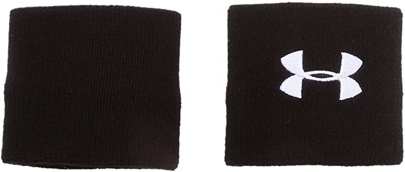
- Use a hooks type solid base velcro with an adhesive to stick on the larger base of the iButton, and scratch the velcro on the interior of the cotton wristband. The exact product used was: "Velcro Heavy Duty Stick On", which is usually used on walls furnitures.
- Try to position the iButton in the horizontal middle of the foreram, on the radial artery close to the hand (the big vein that we can see when opening the wrist).
- You can move the cotton wristband: aim for the radial artery anywhere on the forearm, the cotton wristband can be regularly moved when it feels itchy or when you need more room to wash your hands. Indeed, you need to avoid humidifying the cotton wristband, the iButton is not waterproof and this will make bacteria proliferate on the wristband and hence become more itchy! As long as the iButton is on the radial artery on the forearm, which goes from the wrist to the interior of the elbow ( https://www.healthline.com/health/arteries-of-the-body#organization ) then it should work. Closer to the wrist is better though.
- Studies demonstrating this is an optimal placement site:
- this study tested on 14 different body sites, and ideal where on limbs + on trunk
- this other study shows that wrist skin temperature was shown to be sufficient to estimate the circadian rhythm
- BEST METHODS: for proximal temperature, abdomen and forehead not reliable! Better to place iButtons on back or neck! Skin Temperatures of Back or Neck Are Better Than Abdomen for Indication of Average Proximal Skin Temperature During Sleep of School-Aged Children, 2020 https://pubmed.ncbi.nlm.nih.gov/33061911/
- CRITICAL: core body temperature versus proximal and distal (wrist) skin temperatures. This shows why proximal temperature such as on the trunk cannot reliably be used to estimate the circadian rhythm. But core body temperature and distal (wrist) skin temperature both can. Ref: PhD Thesis: Crosstalk between Synchronizers and the Human Circadian System, D. Antonio Martinez Nicolas, 2014, PhD Thesis http://hdl.handle.net/10201/40027
- 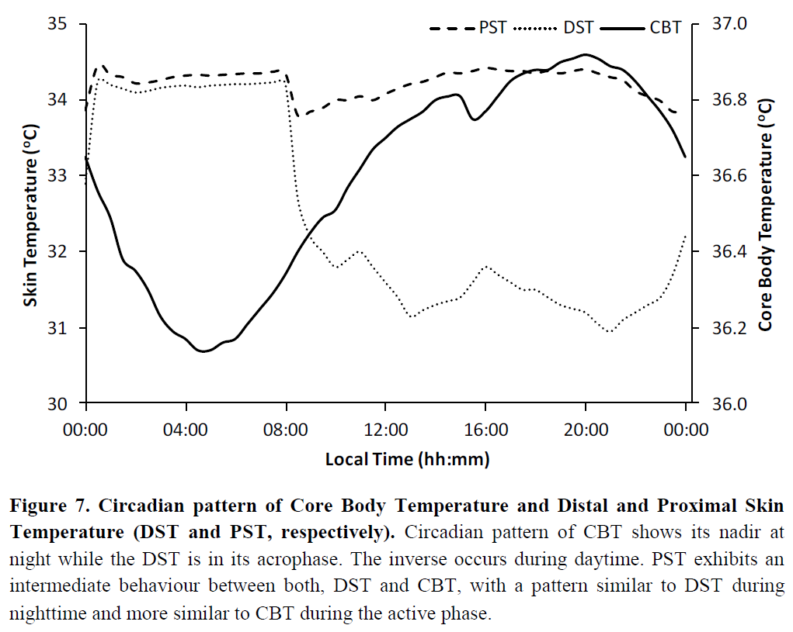
- Using a cotton sport wrist band is a GREAT idea because it is flexible and hence allows to always press the iButton against the skin but not too hard and it conforms with movement, AND it also shields the iButton from ambient temperature! Better than a medical tape!
- Alternative sites and methods of wearing the iButtons, tested and considered less effective (with ineffective temperature measurements not reflective of the circadian rhythm, and much less comfortable to wear):
- axillary = under the armpit, on the arm rather than the trunk to avoid sweat from corroding the iButton (it's not waterproof, only water resistante)
- But: Axillary and Thoracic Skin Temperatures Poorly Comparable to Core Body Temperature Circadian Rhythm: Results from 2 Adult Populations, 2004 https://doi.org/10.1177%2F1099800403260620
- infraclavicular, which means just below the clavicule, check by touching to see if it's warm or reddish which means it's vascularized.
- Alternative: 1cm above the navel
- under the elbow or the interior of the wrist
- any place on the body that is warm and/or reddish, meaning it's vascularized and radiating body temperature. If it's blank color, then preferably don't use this site.
- Medical tape (comformable tape such as Hypafix) needs to be cut large enough (about 2x as large as the iButton's diameter) so that the iButton, placed in the middle of the tape, is entirely covered and also that all sides of the tape are in contact with skin.
- For good fixation, tape in a cross-shape (2 bands in a cross, one on top of the other) if band too chin (<5cm) or for >5cm tape bands place the iButton in the middle of a 5x5cm square, so as to leave 1cm ("one-half inch") of tape on each side as recommended by 3M in its "Tips for Trouble-Free Taping" guide.
- Choose a flat skin surface, without hair, and with little to no deformation on movement (eg, avoid articulations).
- That is also very important not only for the patch to stick but also for comfort. If properly placed on a flat surface, it should not become itchy even after a few days of wearing continuously.
- If axillary (armpit), thy on the arm rather than the trunk
- If using multiple iButtons, distance them of at least 0.5cm apart so that they're not in contact and do not exchange heat.
- axillary = under the armpit, on the arm rather than the trunk to avoid sweat from corroding the iButton (it's not waterproof, only water resistante)
{kind=link}
Actigraphy with Axivity AX6
The AX6 is attached with velcro on the same cotton wristband as used for wrist skin temperature (with iButtons). It must be worn on the non-dominant hand, which is usually the left hand.
- Actigraphic device AX6 possesses a printed white arrow, this must be always facing the same direction, preferably facing outwards towards the ground when the arm is typing on a computer (and the Axivity logo on the wrist facing towards the body).
- More details on the velcro attachment system:
- Stick a hooks type velcro band (a strong one as used for mural supports, as it won't be in contact with the skin) on the face without an arrow, and then scratch the velcro side on the cotton wristband (the one with the iButton). Can be scratched on the exterior (prone to water damage but if worn up the arm and under clothes it should be fine) or inside the cotton wristband (more resistance to water damage but may be less comfortable and will likely deform the band, which may decrease the reliability of the iButton contact with skin and hence skin temperature measurements). The preferred way is to attach the Axivity AX6 on the exterior of the cotton wristband. Then, wear on the non-dominant arm, as it slightly less biases the results compared to the dominant arm.
- Alternative: Can also use the provided silicon watch-like support that is waterproof, but it's difficult to wear both the cotton wristband and the watch-like support for AX6, so will likely have to wear on different arms. But then one will be on the dominant arm, which is suboptimal as it can slightly bias the results, but it's better than nothing.
Pendant: Light sensor with Lys Button
Positioning
The light sensor is worn either as a short-laced pendant or on the neck of a shirt, both being placed at a few centimeters below the chin, centered on the sagittal plane of the face (so that it faces where the user is looking at). A study shown pendants light sensors measure light with a close accuracy compared to eye-level light sensors (and much more than wristband light sensors), at least in terms of photopic illuminance since melanopic illuminance was not tested, and this positioning is much more comfortable than eye-level worn sensors such as light sensors in glasses-like structures.
- Validation study: see figure 6 : A pendant positioned or cloths-worn (pin on the torso) light sensors produced the most accurate sampling of both light intensity (Lux) and an approximation of color spectrum (CS = circadian stimulus) to an eye-level worn light sensor, with much lower accuracy results for wrist-worn light sensors.
- 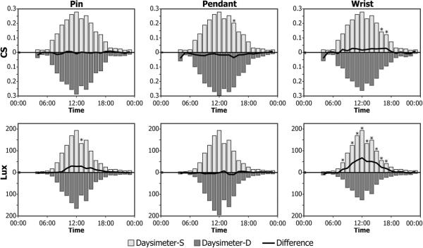
- "Comparisons of CS values measured near the eye with the Daysimeter to those measured at other locations primarily reflect the effects of different measurement locations (Figure 6) because both devices have been calibrated the same way. The differences in CS measured at the eye and measured at the three other locations were surprisingly small, typically less than 10% over the range of hourly average CS values, suggesting that measuring light at locations other than near the eye introduces minimal errors in assessing circadian-effective light exposure. However, when device locations are compared in terms of photopic illuminance levels, the magnitudes of the differences can be quite large. Indeed, placing the Daysimeter on the wrist, rather than close to the cornea, yielded large differences in the absolute levels of photopic illuminance (in lux), especially at high levels when the CS values would already be near saturation. The photopic illuminance measurements taken by the Daysimeter near the eye and those taken by the Daysimeter used as a pin or a pendant were similar (Figure 6). Thus, these data underscore the potential problems in measuring light exposures at the wrist for use as surrogates for corneal light exposures. In winter months when long-sleeved clothing is worn, light measurements on the wrist will undoubtedly be lower than in the summer, when people wear short sleeves, daylengths are longer, and the sun is higher in the sky. The field data reported here were collected between August and January, with the majority of the data collected during warmer temperatures. Even larger differences between photopic illuminance measurements from the Daysimeter at the eye and at the wrist would be expected if they were only obtained during the winter months."
Calibration (for DIY light sensors)
- BEST METHODS: http://hdl.handle.net/10201/40027 "Participants were instructed to wear the lux meter over clothing and to leave it on the bedside table during sleep. To compare the light exposure of our subjects to the natural sunlight cycle, environmental light intensity was recorded for 1 wk in the same area and for the same experimental period. To do this, a Hobo sensor was placed outdoors, facing North in a shady location to avoid direct light irradiance."
- Same method as used for Lys
- Or also here in a Nature paper: https://doi.org/10.1038/s41598-020-75622-4
- BEST METHODS: for calibration of light intensity and color (spectrometer) sensor, see this study as a reference: https://doi.org/10.1038/s41598-020-75622-4 -- they used certifiably calibrated light bulbs as one of the ways to calibrate.
- they also used a mini spectrometer sensor part: C12666MA from Hamamatsu Photonics "The device (Fig. 1) measured 44 × 20 × 29 mm, weighed 20 g, and was designed to be attached to clothing near to eye level. The device contained a C12666MA mini-spectrometer (spectral range 340–780 nm) from Hamamatsu Photonics, chosen due to its compactness, relatively high spectral resolution (15 nm), and high dynamic range. It is hermetically sealed and performs array spectroscopy using an array of 256 CMOS pixels with a reflective blazed grating for light diffraction."
- original price at $180: https://groupgets.com/manufacturers/hamamatsu-photonics/products/c12666ma-micro-spectrometer -- available at $75 in a breakout board (but breakout board is discontinued, it may be sold out soon): https://groupgets.com/manufacturers/getlab/products/c12666ma-breakout-board
- BEST METHODS: calibration of light spectrum sensor using calibrated incandescent light bulbs, thanks to eeror for sharing his experience with exactly this approach, here are the relevant quotes from his discussion:
The idea is that you can combine that data with the lux meter result to arrive quite close to the correct value.
That was a few years ago (still have a stockpile of bulbs left :D) so I can't quite remember the details anymore but I also tried to validate it against data from better lux meters.
And I remember I found the approach accurate enough.
The tricky bit with making a sensor like that can be calibrating it. Would be rather easy if you make many but somewhat more difficult if people assemble their own.
I wonder if there's a place you can buy a range of different filters with known properties.
I.e., data about what and how much it filters out.
Though it's likely that our use case doesn't need too much accuracy, of course. Most LEDs have similar properties, for instance.
I understood from quickly skimming the article you linked that they also tried to classify light sources.
Another thing I remembered about my own experiment.
Essentially, a lot of lux meters have bad filters.
Compared to the CIE luminosity function, their peak is usually in the correct place but the sides of the curve are often wrong.
Mine actually had the curve in its documentation.
So in the end, it was about combining the lux meter result with the light spectrum of the bulb and with the data about the filter of the lux meter.
So getting an accurate result still depends on factory calibration.
So, while exactly the same bulbs aren't on sale anymore, these seem to be the ones they were replaced with: https://www.lighting.philips.com/main/prof/led-lamps-and-tubes/led-bulbs/classic-filament-ledbulbs/929002372601_EU/product
But the main point is that Philips publishes the photometrics data about their bulbs.
If you scroll down on that page, you'll see a luminosity chart.
Now, it seems like it's not for exactly that bulb (13 W vs. 17.5 W) but I'm sure the chart's similar enough if they've put it there.
I might have the characteristics for my bulbs stored somewhere but I'm fairly certain they look similar.
In any case, it's really all about the shape of the spectrum and not absolute values in this step.
I use a cheap lux meter (mine actually has a few more things in it, it can measure sound levels as well, for instance) from PeakTech (https://www.peaktech.de/).
Looks like this one: https://www.peaktech.de/uk/PeakTech-P-5035-Multifunction-environment-tester/P-5035
They're produced in China for multiple companies anyway.
The main thing is that they provide individual calibration results.
So you know the properties of the filter it came with.
Then you just have to figure out if you need to scale the absolute value.
But from what I know, they have done factory calibration against incandescent light sources.
I verified using a more expensive device that I borrowed.
I can probably find the details but I'm not sure about the make and model without checking.
Anyway, I validated that my batch of bulbs matched the published spectrum. I also figured out that for this particular bulb, I can multiply the result on my lux meter with a certain constant to know the exact value.
If you can trust the published data, you can find a similar constant for any light source.
For your own lux meter, of course. :)
Other than that, I can recommend the bulbs: the light is pleasant, they are efficient, and they seem to survive for a long time. :)
But after validating, I trust Philips to provide correct spectrum data. And that knowledge might be more useful than a particular model.
The PeakTech one works well for the price, I think. But I just bought what I could get from the store without waiting.
One more thing: they also sell lux meters that claim to measure LED light. I don't think those are any good: with just one filter, they can really only be accurate for some specific LED light source. It's quite likely that they're just multiplying all values with a constant similar to the one I found for my bulbs and my lux meter.
But you will lose the ability to sanity check against an incandescent bulb (or more specifically, standard illuminant A :)).
- About whether the Luminette could be used as a calibration light source, there are pros and cons: the pros is that it's a certified medical device so theoretically the luminance and light spectrum are bounded, and that it can emit at 3 different light intensities (500 lux, 1000 lux and 1500 lux), hence providing 3 points to calibrate luminance instead of one. The cons is that it's a LED, not an incandescent bulb, which according to eeror are much less reliable, and another potential issue is that medical certification may not necessarily mean that all devices are tested and hence individual devices may vary by quite some amount, so this approach should only be considered appropriate for an approximately calibrated light sensor, but not a very accurate one, ie, if margin of error of plus or minus 100 lux is acceptable then that may be fine.
Acquisition procedure
Actigraphy Axivity AX6 acquisition
Data upload (to a computer, there is no cloud) + battery recharge, to be done by user at least once per 9-10 days:
- Remove from wristband/watch and connect to a computer through USB
- use OmGUI
- Download, wait for 100% transfer (and battery recharge, make sure the computer is plugged to outlet for faster recharge)
- It is preferable to connect to USB on computer, this allows to both transfer data and recharge at the same time, without risks of overloading voltage.
- It takes about the same time to transfer a full dataset (collected over 9/10 days) than to recharge to 100%.
- Rename the downloaded file to append current datetime in the filename (else it's not in the filename and it can get overwritten)
- Alternative: there are undocumented placeholder tags that can be set in the Options menu to add the datetime automatically, such as {EndTime}, {EndTimeNumeric}, {StartTime} and {StartTimeNumeric}
- Here is the exact placeholder string that was used: {DeviceId}_{SessionId}_{StartTime}-{EndTime}
- Back up the cwa files directly, can always export and normalize later, directly from OmGUI or other softwares/libraries.
- Clear/Wipe device
- Click Record and Reconfigure with 100Hz sampling frequency, 16bit resolution and 2000dps gyro/rotation.
- Disconnect and put back inside silicon watch, matching the arrow on the AX6 with the watch's arrow marker.
- With these settings, AX6 can store up to 9/10 days included of continuous recordings when the battery is at least 95% charged.
Wrist Skin temperature Thermocron iButton DS1925L (or DS1922L) data collection
- Prerequisite hardware: DS9490R and DS1402D-DR8+ to connect by USB to computer.
- install 1-Wire drivers, then launch OneWireViewer — can use opensource java: https://adoptopenjdk.net/
- Alternative: for programmers, there are also lots of other opensource software Maxim provides, to develop custom tools: https://www.maximintegrated.com/en/products/ibutton-one-wire/one-wire/software-tools.html as described in https://www.maximintegrated.com/en/products/ibutton-one-wire/data-loggers/DS1925EVKIT.html (note all softwares are opensource)
- Main procedure to do each time (at least once every 7 months for DS1925L, once every 10 days for DS1922L):
- Plug the iButton into one of the bluedot receptors.
- Pro tip: buy a DS9093F+ plastic foab to easily plug the iButton out. It's easier to use than the other plastic foab that are supplied in the starter evaluation kit.
- Pro tip 2: if you don't have a plastic foab, don't worry, you can just avoid pushing the iButton all the way through, it's possible to just slightly push until the iButton connects to the surrounding metalling ring, that's enough for the software to detect the iButton. Just maintain the iButton in this position with your thumb and release when you're done transferring data and configuring the next mission. This way, the iButton never gets stuck in place, and so you don't need any additional tool to remove it.
- download data of previous acquisition (if there is one): click the Mission tab at the top, wait for data to be downloaded (there is a percentage shown in the Mission Tab), then click the Temperature Data Log subtab > right click on chart > Save as .csv file
- Battery gas gauge app: https://www.maximintegrated.com/en/design/technical-documents/app-notes/3/3761.html
- How to export data to Excel and how to fix issue with european convention comma delimiter for floating numbers: https://www.maximintegrated.com/en/design/technical-documents/app-notes/3/3809.html
- check the Real-Time Temperature tab that the iButton is working correctly (you can touch with your thumb to check that the temperature changes after a few seconds).
- sync button clock to computer
- Click on Clear Log to wipe out the old samples
- IMPORTANT: note that the maximum number of samples seems to be 62720, beyond, no new data will be saved, there is no roll-over with DS1925L, although there is with DS1922L but it's messy to load rollover data for postprocessing. This represents a bit more than 7 months of continuous data collection with the settings we use below. That's why it's necessary to regularly clear the log and start a new mission.
- click on the button "Start a new mission":
- 0.0625°C temperature precision
- 300s (5min) sampling rate for DS1925L ; 120s (2 min) sampling rate for DS1922L
- For DS1922L only: Enable rollover (this will overwrite old data when the memory becomes full, this is necessary as I did not find a way to clean up the internal memory before a new mission, it seems File > Wipe the device does not clean the memory, hence without rollover new data won't be saved after 10 days of experiment, even after the data is transferred, see Mission > Total Device Samples count). This setting is unnecessary and unavailable for DS1925L as it can record years (4 years?) of data continuously due to its larger flash memory.
- Disable SUTA and alarms but enable sampling and set 0 delay (so it starts recording asap).
- Click OK
- This is what the setup should look like if properly configured for DS1925L:
- 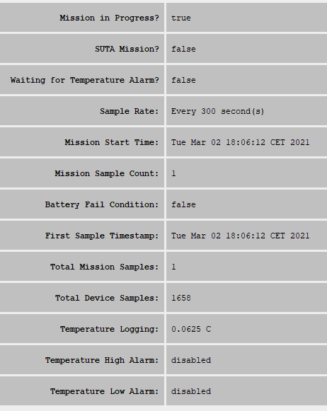
- And here for DS1922L:
- 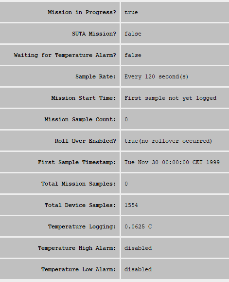
- Deploy (ie, attaching to the body with medical conformable tape such as Hypafix)
- Orient the iButtons in a top-side fashion, with the top (smaller round side) in contact with the skin and the bottom (wider flat base) in contact with the exterior tape. This is because the top side contains the sensor and the base contains the battery, the latter insulating against fast temperature changes, so the response to sudden temperature shifts is faster with the top-side orientation, as this study shows: "Upon contact with the hot plate, the iButtons with the top side facing the object were significantly warmer for the first 4 min than those with the bottom side against the object (Fig. 3). During exposure to the cold object the ‘top-side’ iButtons were significantly cooler during a 5-min period. We conclude that the top side has a faster response to thermal changes when placed on hard and flat surfaces. The difference between the bottom and top side thermal response may in part have been caused by the locations of the battery (towards the bottom) and the sensor (towards the top)."
- It takes only 10min to converge to the skin temperature from the start of skin contact.
- Notes:
- This setup will last about 5.6 days before the internal memory is full on the DS1922L (4096K with higher temperature resolution) and about 212 days for the DS1925L (because limited to 61K recording limit with higher temperature resolution, half of the lower temperature resolution).
- The internal battery will last about half a year before the iButton DS1922L is dead and 4 years before the DS1925L is dead. A paper shows how researchers could change the battery manually but then the device is much less airtight.
- Data need to be transferred to a computer every 6 months (for the DS1925L, the interval is much smaller with DS1922L, about 10 days), and the device memory (mission) needs to be reset, otherwise it will stop recording new records.
- Plug the iButton into one of the bluedot receptors.
- BESTTUTO for researchers of how to configure parameters (rollover, SUTA, etc): https://www.maximintegrated.com/en/design/technical-documents/app-notes/5/5335.html
- Can then disconnect, unstuck the iButton and use Hypafix or Flexifix medical comformable tapes, very comfortable. Interestingly, also advised by Axivity for actigraphy.
Core Body Temperature: GreenTEG CORE data collection
Prerequisites:
- To use the cloud data sample (one sample per 5min), it's necessary to first create an account on the cloud server online and pair the CORE device. More instructions: https://corebodytemp.com/pages/cloud-help
- This account is also nowadays necessary to use the Android app (it was not in the past), so that offline reading of history is currently impossible (the History tab disappears, but the real-time tab remains) when disconnected from internet.
User collection data for the GreenTEG Core, the user must follow 2 timeschedules in parallel, as there are two types of datasets that are generated:
- Cloud data upload (one sample per 5min) must be done once every 2 days by opening the app's History tab and waiting a few minutes for the full graph to display (data is uploaded simultaneously). Make sure WiFi or mobile data (4G/5G) is enabled before opening the app, otherwise the History tab won't display. Tip: on Android phones, the bandwidth usage can be displayed in the top information bar by enabling the option in the Android Developers parameters menu, this allows to know when the data upload is done.
- Locally stored high resolution data (one sample per second = 1Hz, stored on the phone but can be transferred by USB or FTP after) must be done once every 3.5 days and takes 3.5h to be fully processed, and cannot be paused (otherwise the whole process must be restarted from zero - with no loss of data, but no new data can be collected meanwhile). This is also a good opportunity to plug the CORE device to a computer with the provided USB-dipole cable, as the device is immobilized for 3.5h anyway, and a 100% battery recharge takes about 3.5h as well. Make sure WiFi or mobile data (4G/5G) is enabled before opening the app and during the whole transfer, as otherwise the transfer will fail at some point (and it will need to restart from zero).
Admin collection data:
- For the cloud data, simply log into the cloud server and select a date range that spans across the whole experiment. Since the web app wants to display the data first before allowing you to download, it will be necessary to wait until the whole data gets displayed, which can take a long time for big data. Once the data is displayed, click on the "Export data" button.
- For the locally stored high resolution data, it's necessary to either get physical access to the device (data can then be download via USB or FTP), or ask the user to send the data from their phone. Each 3.5 days dataset amount to ~37MB, hence they cannot be sent by e-mail. But they can be zipped to be reduced down to less than 20MB, which can be sent by e-mail. For short experiments (eg, 1 week), this represent just 2 files and hence 2 e-mails, but for longer experiments, a dedicated online storage procedure must be devised by the experimenter (eg, OwnCloud, SeaFile).
Additional technical details:
- The CORE can record up to 3.5 days of data in its internal memory, after which data stops from recording further until download (ie, no rollover), but only with the RESEARCH model, which costs 999 CHF. The consumer-grade version that costs 250 CHF can only show the last 2 days of core body temperature and it does not allow downloads. The resolution is 1Hz. Breaks under 5 months when worn 24/7 with the L dominos, but likely much longer when using velcro.
- Note that the CORE can either record 3.5 days at 1Hz sampling resolution with the RESEARCH license, or 6.5 days (or however long the battery can last) at 1 sample every 5 min in standard without the RESEARCH license by using the cloud, or both 1Hz sampling via logging (need RESEARCH license to see the option in the app) and 1 sample every 5 min via the cloud simultaneously but only for 3.5 days as the internal storage memory will then be full and no new data will be recorded/displayed in the app. Indeed, the RESEARCH license's logging feature is a limited space option, and then transferring data requires losing at least 3.5h for the transfer to complete, whereas the standard 1 sample every 5 minute sampling via the cloud transfers very fast under a few seconds to the cloud and works with a rollover (ie, data older than 2 days is overwritten), so that if you can recharge the device (even while wearing it - although note that the cable is very short), then you can continue to log data as long as you wish, just keep uploading data at least once every 2 days via the app.
- The RESEARCH license with the 1Hz resolution is useful if we want to study ultradian rhythms in addition to circadian rhythm, as a higher sampling resolution reduces aliasing and spurious rhythms.
- Use any Android smartphone, use the CORE app on the Play store to download the data. It takes about 3.5h currently and the phone must not be used during this time. WiFi and Bluetooth must both be enabled (because the data will be sent online to GreenTEG's servers - although a local copy will be directly available).
- The CORE device can only be paired with one single smartphone. Any other smartphone won't be able to detect the device until the first smartphone unpairs (ie, app is closed).
- Troubleshooting: if after a data download, the CORE app does not detect the CORE device, try to restart the smartphone that was last paired with the CORE device, sometimes the app (or smartphone, eg Realme 6i) has a bug that keeps the bluetooth pairing activated with a single smartphone and does not want to pair with anything else. Restarting the smartphone may fix this issue and the CORE device can then be paired with the same smartphone or with another. Or if it does not work, re-use the last phone that was paired with the CORE. This bug needs to be fixed in the future, it is very confusing and limiting for teams working with one same device (eg, in the clinical setting).
- https://corebodytemp.com/manual/
- "CORE can also be worn on any other body part, but measurement accuracy might be reduced." --> eg on top of cavity, may be better, see: BEST STUDY: TEMPERATURE MONITORING WITH ZERO HEAT FLUX TECHNOLOGY IN COMPARISON WITH THERMOCOUPLE NEEDLE PROBE DURING SELECTIVE HYPOTHERMIA, Mohammad Fazel Bakhsheshi et al, 2018
- News on the blog:
- https://corebodytemp.com/core-wearable-already-in-production/
- not ready to be used for sports, but will be updated (likely it's because of too much movement messing with the readings): https://corebodytemp.com/core-body-temperature-monitoring-product-ready/
- Docking station for group use: https://corebodytemp.com/improve-core/
- BEST TODO: Can use ePill (Gold Standard) to validate body temperature measurements of both CORE as done in doc (https://corebodytemp.com/wp-content/uploads/2020/05/CORE-SpecSheet-V1.9.4.pdf) and iButton!
- Could use https://shop.greenteg.com/heat-flux-u-value-measurement-solutions-e-celsius/ BUT need activator and viewer and it's just too expensive. Maybe ask a sleep lab to partner for such a study to validate circadian rhythm measurements? But anyway with one subject it's not much, we would need multiple...
- Or use 3M SpotOn to compare absolute values!
- BEST SPECS UPDATE: Internal memory: Record up to 84 hours of high-resolution data (= 3.5 days without a smartphone). More info from casing: battery lasts more than 6 days (but beyond 3.5 days old data will be lost, TODO: ask if rolling over or if it just won't store new data). Waterproof (up to 1.5m, IPX7), because fully sealed. Precision: +- 0.10°C for skin temperature, +- 0.26°C (median absolute deviation or 0.66°C 2sigmas) for core body temperature. Added data quality metrics for core temperature (does not account for movement but it's better than nothing, TODO: ask if raw data access also means data quality can be downloaded for each sample). Factory calibrated, no recalibration necessary.
- BEST TODO: try different body sites, with no bones below but organs (ie, a cavity)? A study shown that placing a zero-heat-flux sensor where there is tissues or organs below provides much more accurate measurements than sites where bones are below the skin. This makes sense since it's estimated that zero-heat-flux method can estimate temperature about 2cm below the skin and hence can measure the core body temperature if placed above a cavity. See (for both claims): TEMPERATURE MONITORING WITH ZERO HEAT FLUX TECHNOLOGY IN COMPARISON WITH THERMOCOUPLE NEEDLE PROBE DURING SELECTIVE HYPOTHERMIA, Mohammad Fazel Bakhsheshi et al, 2018 https://doi.org/10.1115/DMD2018-6930
- Another great review on dual heat flux method: https://www.gssiweb.org/en/sports-science-exchange/Article/monitoring-internal-body-temperature#articleTopic_5
- Tip by GreenTEG Core personnel in private communications: "When you are offline, your data will be added to the cloud the next time you go back online (with the app opened on the History tab). It is important though that in the meantime, you do not reset your CORE, or let it run out of battery."
- Tip: never let the battery run out, otherwise the historical data will be lost!
ECG (heart rate and heart rhythm) + 3-axis trunk Accelerometer with the Polar H10
- Polar H10. Costs about 80€, including one Polar Pro chest strap. Battery: 16.5 days with one button (CR2320) battery. Chest strap (Polar Pro) needs to be changed every 3-6 months when worn 24/7. Data is always saved locally on phone, so there is no data loss, but the phone's internal storage can be filled up, hence it's necessary to transfer the whole data once every 6 months (on a 128 GB memory phone) to free up space onto a computer (6GB/day = 17GB/month is consumed).
- The Polar H10 sensor needs to be paired via Bluetooth to a smartphone, and an app needs to be used at all times to record the ECG (because only heart rate can be stored on the internal memory). No cloud service registration required, all data is stored locally.
- Use the Polar Sensor Logger app on Android by Jukka Happonen to log both the ECG and accelerometer data with the sampling rate of your choice (up to 200Hz/8G for the accelerometer and 130Hz for the ECG - we use 100 Hz and 4G to save on memory and it is sufficient for research purposes). It also saves the Heart Rate in a separate CSV file, and the extra columns represent the RR-interval in milliseconds. The timestamp format is in nanoseconds and the epoch is 1.1.2000. Note that the app requires both bluetooth and location (GPS), hence to save battery, the phone can be set to Plane mode and wi-fi can be disabled, everything can be disabled except bluetooth and location, and the screen can be turned off during data collection. Data is stored in realtime in csv files in the sensorDataLogs folder at the device's root, so that even if the logging is interrupted due to a bug or the device being out of battery, the last logging session won't be lost.
- Note that although the app can work with only bluetooth, it won't be able to seek and automatically reconnect to the Polar H10 sensor in case of disconnection without location (GPS) enabled.
- Also to ensure automatic reconnection, it's necessary to enable the dual Bluetooth stream/pairing on the Polar H10 after each change of CR2025 battery (the memory is flushed then) using the official Polar Beats app. Note that this app requires enabling wi-fi temporarily (in addition to Bluetooth and GPS location) to pair with the Polar H10. This can be a good opportunity to also disable GymLink and ANT+ to extend the H10's battery life.
- Here are the steps to do every time the battery of Polar H10 is changed: 1- restart phone (to free up connection slots) if the H10 can't be detected, 2- launch Polar Beats app (requires WiFi enabled to access the settings) and in the settings tap on the entry Receptor: Polar H10 and then enable dual receivers (ie, allows multiple devices to connect to Polar H10, this is necessary as otherwise when the data logger auto-reconnects, the Polar H10 may refuse the connection thinking the previous connection is still alive), 3- disable ANT+ and GymLink (to save battery, 4- Launch Polar Sensor Logger, enable ECG and ACC, connect, set 100Hz/4G (or a higher data collection rate for accelerometer), then click on Graph, activate all graphs, check that everything is alright and you can see your ECG, then pause the graph to save battery and leave Polar Sensor Logger in the forefront (don't multitask with another app as otherwise it will likely get killed). UPDATE: avoid activating graphs at all, once you have used the system a few times, because otherwise there is a memory overflow error that makes the app crash after 1 or 2 days after having displayed the graphs, even if they are completely disabled after! Hence, check the graphs only from time to time, and prefer stopping the recording, close the app, then relaunch it anew and start a new acquisition before leaving the acquisition unattended.
- Check the ECG and ACC graphs (but disable HR as it will make the app crash after a long enough acquisition) to check if the acquisition is fine.
- If the ECG data is all wrong but ACC is fine, try to change for another CR2025 battery, sometimes a defective battery can mangle the signal for some reason.
- If the ECG data is still wrong despite changing the battery, the Polar Pro chest band electrodes may be dead, so it's then necessary to buy a new one (costs 30 to 40 euros for the band alone). If used 24/7, the Polar Pro band lasts for about 6 months. The warranty does not cover it as it is considered normal usage degradation of a consumable.
- If the app shows 0 bpm, then the Polar Pro chest strap definitely needs to be changed.
- After you checked ECG and ACC graphs, reopen the menus to completely disable both graphs AND uncheck the device too, because otherwise the app may crash on autoreconnection when the H10 gets out of bluetooth range. It's always possible to re-enable the graphs at anytime to check, but it's necessary to disable them entirely meanwhile, not just pause them.
- Note that after showers, when the skin is drying up, the ECG readings will be very noisy (with inputs from respiratory movements). This is to be expected because of the change in skin conductance. The ECG readings should stabilize after wearing the chest belt electrodes for one or two hours, with respiratory movements not affecting the ECG measures anymore at this point.
- Always maintain phone battery above 20% otherwise app will likely get killed to save battery whatever the battery saving settings
- It might be a good idea to buy a dedicated Android phone with a long battery, which can allow to continuously record up to 10 days with a single charge (the generated data with accelerometer set to 100Hz and 2G is 400KB/min total for accelerometer+ECG+Heart Rate, so this makes for 6GB for 10 days, or 17GB/month, or 200GB/year of data, so it all fits in any modern smartphone's internal memory).
- Using as a bluetooth receiver the Realme 6i and its 5000mAh battery (cost about 170 euros), the battery consumption rate is 10%/24h, hence up to 9-10 days can be acquired with one full charge.
- Here are the steps to configure the Realme 6i to allow for continuous background task (as otherwise most Android smartphones automatically kill background apps when the screen is turned off) and low battery usage:
- Enable developer's mode, then in developers options, set Background processes limit to 4 instead of standard limit.
- Then in battery optimizations (specific to this phone) disable all except screen optimization and standby optimization.
- Disable Do not disturb mode and any night mode, else they will kill apps during the night.
- Also activate plane mode, disable wifi (you will re-enable wifi from time to time when changing battery because it's necessary for the Polar Beats app to work), close all apps except ecg and activate only bluetooth.
- Finally, open the ECG acquisition app and lock it (tap on tasks button to show all windows then swipe down the ecg app window or tap on the 3 dots in the corner to enable the lock). Then go back to the app, launch the acquisition, then go to the graph tab, check if data is acquired alright and then click on the Pause button at the bottom of the Graph tab to disable graphs and save battery.
- Now switch back to the main tab, check if the BPM and accelerometer values at the bottom are dynamically changing, if yes then all is ok and you can switch off the smartphone screen. You need to leave the app in focus at all time, do not switch another app, the ECG need to remain on the foreground to not be killed. Android 11 may fix this issue but for now smartphone vendors are too aggressive with background tasks killing so there is no other way around.
- With all these steps done, the Realme 6i and its 5000mAh battery will be consumed at a rate of 10%/24h, hence with a full charge the ECG can be continuously acquired for 9 to 10 days! Which is an impressive feat that currently no other wearable ecg can do. Plus motion noise is greatly reduced thanks to the Polar chestband without dangling electrodes wires.
- The data will be continuously saved in CSV files in the sensorDataLogs folder, even if the app or phone crashes at some point.
- The Realme 6i needs of course to be kept within bluetooth range (ie, it can go through 2 thin walls but not the distance of a full apartment), so buying a small shoulder bag for smartphones to carry the Realme 6i at all time on oneself is recommended. Do not use a neck strap, as the weight of the smartphone will be very noticeable, whereas with a shoulder strap it feels almost weightless, it's possible to get used to it and not feel carrying the shoulder strap bag, especially if carried under a jacket or pull as to reduce the degree of motion of the bag. Example of a smartphone shoulder bag:
- 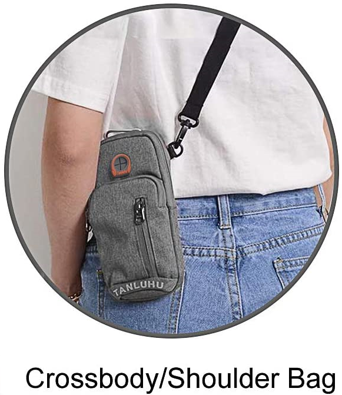
- Alternative to get an even longer battery bluetooth receptor: make an Arduino-based bluetooth low energy (BLE = BT 4.0) logger to microsd card. Some developers already made heart rate loggers for Arduino and Polar H7 chest bands (see also here and here), but not the ECG, although the SDK is open so that should also be possible to do.
- Using the Polar Beat app (enable wifi and bluetooth on the phone, these are necessary for the app to work), the H10 sensor can be configured to have a dual Bluetooth stream, so that it can send data to two different devices/apps simultaneously. This is necessary to allow the Polar Sensor Logger to reconnect to the sensor automatically, as otherwise sometimes the reconnection will be refused, the Polar H10 thinking two different devices tried to connect when it's the same one just trying to reconnect. This can also be used advantageously to concurrently continuously record the ECG data on one device, and use another device (the day-to-day smartphone) for when you want to visualize your current heart rhythm in real-time. To do this, install the Polar Beat app, pair the sensor, then go to the settings, click on the sensor and the sensor's options will show up, and then you can enable the "2 BLE receptors" option.
- Using the Polar Beat app, disable GymLink and ANT+ to significantly increase battery duration.
- It's necessary to enable the dual Bluetooth stream to ensure auto-reconnection by the Polar Sensor Logger app.
- This step needs to be redone after each change of battery of the Polar H10 sensor.
- This app is made by an employee of Polar (although this is not an official Polar app), so that it likely has a very robust and clean implementation respecting the Polar API.
- Combined with the EliteHRV Android and iOS app, the Polar H10 can be used for breathing relaxation exercises (fundamental resonance breathing etc), and also be used as a biofeedback tool.
- Big advantage of this setup compared to others: it really allows for continuous ECG, since there is no need to transfer data to restart a new session, as the phone's memory is used and it's vast. So only the smartphone's battery is the limitation, but it can be recharged while the acquisition continues, and even the data can be transferred concurrently using FTP or similar apps. This is a true 24/7 continuous ECG monitoring setup.
- Use Sony or Varta CR2025 batteries for the H10 to last ~10 days with one battery. Cheaper or rechargable batteries won't last as long. Some users reported that CR2032 can also fit, and they last longer since they have a bigger size and capacity, but Polar warns against using a battery of an incorrect type (ie, anything else than CR2025) as they claim this can cause an explosion.
- https://support.polar.com/fr/support/maintenance_of_heart_rate_sensor_with_textile_strap
- If after stopping acquisition, the Polar H10 is no longer detected by any app, reboot the Android phone, then the H10 should be detected correctly. This often happens after changing the Polar H10 battery.
- Software alternative for iOS: https://github.com/poml88/ecg-recorder-ios (not tested)
- Use a microfiber cloth imbibed with alcohol to clean the entire Polar Pro chest band strap every 1-2 weeks. A microfiber will be better than tissue as it will avoid spreading lints which will make the chest belt more itchy. Do not clean the metallic connectors to the Polar H10 sensor, as ethanol will erode them.
Light sensors Lys Button data collection
Prerequisites:
- Launch the Lys app on iOS (tested on iOS 15.3 on an iPhone 7). The Android app does not work (it launches but does not send data to the cloud server) as of Feb 2022.
- Create a (user) account in the app
- Create another account on the Data Platform website using the provided credential in the e-mail post sale. This will make you create another account, which is the administrator/researcher account. It is different from the user account in the app. This requires a license to access the Data Platform (see in the Research tab in Pricing > LYS Light Diet app and Data Platform: https://lystechnologies.io/pricing/)
- In the website, add the user account (by e-mail) to be able to collect their data.
User procedure to upload data (must be done by the user to send data to the cloud at least once every 18h according to the manufacturer's data or once every 37h32min according to our own tests, otherwise older data is lost, hence instruct user to do this ideally twice a day, at wake up and before sleep, or once per day at minimum):
- Connect to WiFi on the iOS device and Bluetooth with the Lys Button paired.
- Launch the Lys app on iOS. If the app was already launched, first kill it and then reopen it (this will force the upload of new data, otherwise there is a timer so that the app only transfers data infrequently to reduce bandwidth and battery consumptions).
- Switch to the Now tab, and tap Scan with Lys Button. This uploads the first 8h-12h of data collected since the last upload (without rollover). Wait 60s with the screen turned on.
- Switch to the Track tab. This uploads the latest 37h32min of collected data inside the Lys Button's internal memory, with rollover (ie, old data is deleted to free up space for new data when storage capacity is exceeded). It appears the internal storage memory slot for the Track function is distinct from the dedicated storage space for the Now function, so that using both methods can theoretically allow to download up to 45h32min of data. On the Track tab, an upload progress percent estimation that shows up at the top of the Track page, but only when new data is being downloaded from the Lys device. The download (and concurrent upload to the cloud in the background) should end (ie, reach 100%) under just a few minutes.
- Recharge the device once every 7 days, by placing the Lys Button inside its docking station connected to USB on computer (safer) or an electrical outlet (be careful not to overload the tension). Do not close the cap, and try to stay close to the Lys Button while recharging, as the Lys Button still continues to record while being recharged (so that there is no disruption in data acquisition).
- Recharge the iOS device simultaneously, by plugging the Lightning cable to an electrical outlet (it unfortunately does not recharge when connecting to a USB port on a non-Mac computer).
Admin procedure to download data (on the website):
- Select Date Range. If the user just uploaded new data, then it's necessary to select a date range again, even if it was already selected, because the data export is generated when selecting the date range, not when clicking the download buttons. Keep in mind the date range includes the first selected day but excludes the last selected day.
- Click on Download Device Data. This is the most important data as it contains the light measurements, but other data types are also available.
Note that the "NotWorn" value is not reliable.
Note2: the LYS sensor is unable to detect the use of Luminette, this sensor is hence only to measure ambient lighting conditions, not monitor light therapy usage.
Data cleaning and preprocessing
Data from sensors is never clean, there can be all sorts of issues that mangled the data at some point. We need to be aware of when this happens and remove/clean such parts of the data to ensure a good enough quality of our final dataset to draw reliable conclusions upon.
Given a lot of these issues can only be known by the user/operator on the field, this section will describe them for quick reference for future data analysts.
ECG data cleaning
- Modern smartphones often use very harsh battery optimization schemes that cannot be fully disabled. Hence, the ECG acquisition app was regularly killed forcefully by the smartphone's Android OS, which caused big gaps sometimes. The user was instructed to regularly (at least twice a day: at wake up and before sleep) check the smartphone to see if the app was still there, and restart it if necessary, but still this could not fully eliminate the risk. Since it was noticed that this risk seemed more likely with longer acquisition runtimes (ie, >30h), then the user sometimes stopped and restarted just after the app. When the gap is small (less than a few minutes), then the data can be concatenated without any special cleaning step. Likewise, for big gaps, the data can also be concatenated without cleaning.
- Another case of gap is when the user removed the belt for some reason, especially before taking a shower. In this case, after the user starts wearing back the chestbelt, the sensor will generate very volatile readings (ie, the baseline will not be stable, it will go up and down with each breathing). This is because the chestbelt's electrodes impedance has not yet adjusted to the skin, or the skin is too humid or too dry. This issue disappears after about half a hour or more after continuously wearing the chestbelt. If the data analysis only involves beat detection but not the QRS complex's shape, then these parts of the data can be used. Otherwise, if the QRS complex's shape is of importance, it's necessary to cut the first hour or so after the user starts wearing the belt again. The issue then is to differentiate this scenario with the smartphone's battery optimizer killing the app's scenario, but where the user still worn the chestbelt and so there is no skin-sensors impedance mismatch and the data can be used as-is. Maybe a shape analysis in this case can be helpful.
Core body temperature data cleaning
- When there is a skin miscontact, dual heat flux sensors such as GreenTEG CORE overestimate core body temperature and underestimate skin temperature. Hence, around gaps (when the sensor is not anymore in contact with skin but instead with air), it is necessary to ignore about half a hour before and half a hour after the gap, to ensure the sensor converged to the real core body temperature. Furthermore, data analysis should include sanity checks against extremely high values which may be errors (but they may be caused by infections too). Lower core body temperatures should be assumed to be reliable, since they cannot be caused by skin miscontact.
Wrist skin temperature data cleaning
- Similarly to core body temperature sensor, wrist skin temperature sensor using iButtons take some time to converge, until then they will underestimate skin temperature. A study estimated that iButtons need about 10min to converge to the real temperature when the bigger side is in contact with skin, see Figure 3 of this study.
Analysis
For all
- Clinically significant outcomes defined by AASM: "Table 2-Critical Outcomes and Their Clinical Significance Thresholds Defined by the TF" http://sleepeducation.org/docs/default-document-library/crswd-draft-executive-summary.pdf?sfvrsn=2
- temperature: BEST REVIEW TOADD: A practical approach to circadian rhythm sleep disorders, 2008 https://pubmed.ncbi.nlm.nih.gov/18845459/
- "Bright light treatment and exogenous melatonin administration are considered to be the treatments of choice for these circadian rhythm sleep disorders. Circadian phase needs to be estimated in order to time the treatments appropriately. Inappropriately timed bright light and melatonin will likely worsen the condition. Measurements of core body temperature or endogenous melatonin rhythms will objectively assess circadian phase; however, such measurements are seldom or never used in a busy clinical practice. This review will focus on how to estimate circadian phase based on a careful patient history. Based on such estimations of circadian phase, we will recommend appropriate timing of bright light and/or melatonin in the different circadian rhythm sleep disorders. We hope this practical approach and simple recommendations will stimulate clinicians to treat patients with circadian rhythm sleep disorders."
- Non24 circadian rhythm monitoring via minimum core body temperature + adjustment with light therapy of circadian rhythm AND core body temperature! Case of a non‐24 h sleep–wake syndrome patient improved by phototherapy, 2001 https://doi.org/10.1046/j.1440-1819.2000.00719.x
- non-24 melatonin and (oral) body temperature inverse correlation, but body temperature was non-24 (non circadian) whereas melatonin can be:
- "Cosine analysis of melatonin and oral temperature rhythms revealed a significant 24-hour pattern of salivary melatonin (p < .05); however, no significant circadian pattern was found for oral temperature rhythm and an uncoupling with melatonin rhythm was observed (Fig. 3)." https://doi.org/10.1097/01.chi.0000181040.83465.48
- 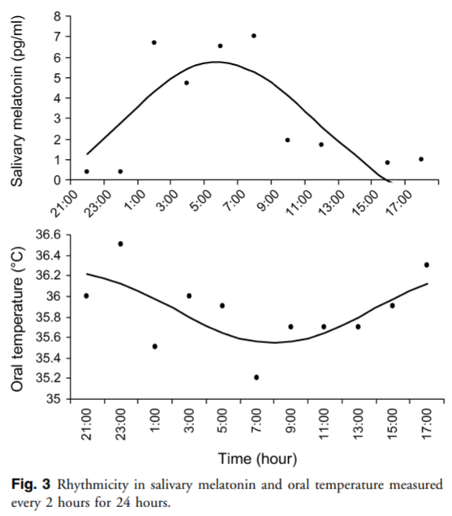
- 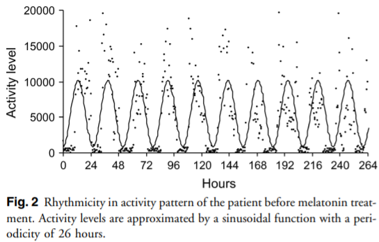
- BEST METHOD: double-plot actogram (conventional or heatmap) in Excel, and application to any periodic data type (core body temperature, actigraphy, sleep ECG, etc) and to various circadian periods (including non-24!): https://pubmed.ncbi.nlm.nih.gov/31614567/ Oike H, Ogawa Y, Oishi K. Simple and Quick Visualization of Periodical Data Using Microsoft Excel. Methods Protoc. 2019 Oct 11;2(4):81. doi: 10.3390/mps2040081. PMID: 31614567; PMCID: PMC6961127.
- Of course, this can "only" allow for the visualization of tens of thousands of data points. So for big datasets such as long term studies > 6 months or 24/7 ECG, it's not going to work.
- BEST METHOD: review of methods to analyze periodic timeseries: https://www.ncbi.nlm.nih.gov/labs/pmc/articles/PMC3663600/
- See Figure 13, cosinor analysis allows to calculate period even when there is a lot of noise! Periodogram
- Need at least 10 days of data to be reliable statistically
- Need to be continuous data (no discrete nor gaps eg during sleep) — EXCEPT if using Lomb – Scargle periodogram or cosinor analysis.
- cosinor analysis "is appropriate not only for non-equidistant data but also for serially-independent data (that is, educed rhythms)".
- But require an estimation of the period, hence a periodogram can be useful as a first step!
- "MESOR (M, Midline Estimating Statistic Of Rhythm, a rhythm-adjusted mean that differs from the arithmetic mean when the data are not equidistant and/or do not cover an integer number of cycles)"
- Preferable over least-square and sum-of-squares regression fitting. But maybe these do not require any apriori period.
- "The single cosinor approach, which consists of fitting by least squares one or several cosine curves with or without polynomial terms to an individual time series (whether the data are serially-dependent or serially-independent as to individuals and/or as to the environment), has been complemented by the population-mean cosinor method that provides a summary of results from three or more individuals (Bingham et al. 1982; Halberg et al. 1967)."
- See Figure 13, cosinor analysis allows to calculate period even when there is a lot of noise! Periodogram
Actigraphy with AX6 (6-axis)
- https://github.com/digitalinteraction/openmovement/wiki/AX3-GUI
- https://www.youtube.com/watch?v=R8kqGg2pcwE
- https://axivity.com/userguides/ax3/settings/#additional-sensors
- https://github.com/digitalinteraction/openmovement/wiki/AX3
- drivers and softwares: https://axivity.com/downloads/ax3
- Methods:
- https://biobankaccanalysis.readthedocs.io/en/latest/methods.html
- BEST circadian rhythm detection through actigraphy using nonparametric method: Multiscale adaptive analysis of circadian rhythms and intradaily variability: Application to actigraphy time series in acute insomnia subjects https://doi.org/10.1371/journal.pone.0181762
- "Circadian rhythms become less dominant and less regular with chronic-degenerative disease, such that to accurately assess these pathological conditions it is important to quantify not only periodic characteristics but also more irregular aspects of the corresponding time series. Novel data-adaptive techniques, such as singular spectrum analysis (SSA), allow for the decomposition of experimental time series, in a model-free way, into a trend, quasiperiodic components and noise fluctuations. We compared SSA with the traditional techniques of cosinor analysis and intradaily variability using 1-week continuous actigraphy data in young adults with acute insomnia and healthy age-matched controls. The findings suggest a small but significant delay in circadian components in the subjects with acute insomnia, i.e. a larger acrophase, and alterations in the day-to-day variability of acrophase and amplitude. The power of the ultradian components follows a fractal 1/f power law for controls, whereas for those with acute insomnia this power law breaks down because of an increased variability at the 90min time scale, reminiscent of Kleitman’s basic rest-activity (BRAC) cycles. This suggests that for healthy sleepers attention and activity can be sustained at whatever time scale required by circumstances, whereas for those with acute insomnia this capacity may be impaired and these individuals need to rest or switch activities in order to stay focused. Traditional methods of circadian rhythm analysis are unable to detect the more subtle effects of day-to-day variability and ultradian rhythm fragmentation at the specific 90min time scale."
- With source code in refs: https://github.com/travisszucs/ssa-research
- BEST CRITICAL TOCODE: model-free prediction of the underlying circadian rhythm from actigraphy. Can quantify intradaily variability and delay in circadian rhythm. May work also for non24, and may be adaptable to temperature maybe? Would be great helpful info to know how the day/next night sleep is going to go. See figure 4:
- 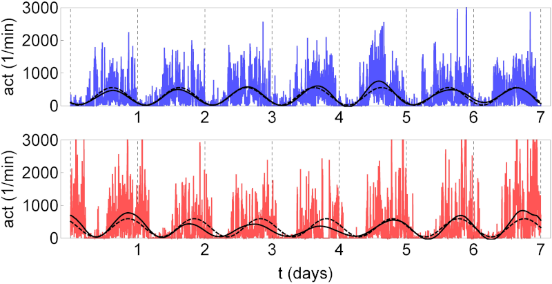
- "Fig 4. Circadian component of actigraphy data. Shown for the control (upper panel) and the acute insomnia subject (bottom panel) of Fig 1. The circadian rhythm has been fitted using the model-based cosinor method according to Eq (2) (dashed curve) and the data-adaptive SSA method using the periodic components g2(n) and g3(n) of Eq (7) (full curve). Vertical gridlines at midnight."
- "The traditional method to analyse circadian rhythms is cosinor analysis, which quantifies the 24-hour (24h), and other periodic cycles, by means of examining the degree of “fit” between the data and a user-defined model consisting of a superposition of cosine functions [21, 22]. However, experimental data where the statistical properties vary over time (non-stationary data), such as having a dominant trend [23–25], or time-varying amplitudes, frequencies or phases [26–28], are much harder or impossible to describe using models based on these periodic functions. Another disadvantage of the cosinor method is that it is unable to detect rhythm fragmentation. With this in mind, the traditional approach, particularly for the analysis of actigraphy data, has been the measure of intradaily variability (IV), which is not model-based and hence is a nonparametric method. IV quantifies the frequency and the importance of transitions between periods of rest and activity, and for historical reasons is generally applied to hourly clustered data [2, 29, 30]. Although qualitatively different, the cosinor method and the IV method can be seen as complementary, where the focus of the former is the characterization of the 24h periodic aspects of the data, whereas the latter assesses the degree of rhythm fragmentation. Recently, more specialized techniques have been developed to study circadian rhythms (see Ref. [31] for a review). In particular, wavelets have been used to study circadian rhythms of nonstationary data [27, 28]. Wavelets however are, as with cosinor analysis, model based in the sense that the results obtained may depend on the particular wavelet basis function selected by the user. While continuous wavelet transforms may need an explicit prior detrending, discrete wavelet transforms are more effective in extracting time series components." → review of methods to model the circadian rhythm from actigraphy data: Procedures for numerical analysis of circadian rhythms, 2007: http://www.ncbi.nlm.nih.gov/pubmed/23710111
- BEST CRITICAL METHODS: Composite Phase Deviation method to quantify circadian misalignment from actigraphy or sleep logs: A novel method to visualise and quantify circadian misalignment (actigraphy), 2016 https://pubmed.ncbi.nlm.nih.gov/27929109/
- "Based on a single time series, our Composite Phase Deviation method unveils distinct, subject- and schedule-specific geometries ('islands and pancakes') that illustrate how modern work times interfere with sleep. With increasing levels of circadian strain, the resulting shapes change systematically from small, connected forms to large and fragmented patterns. Our method shows good congruence with published measures of circadian misalignment (i.e., Inter-daily Stability and 'Behavioural Entrainment'), but offers added value as to its requirements, e.g., being computable for sleep logs and questionnaires."
- 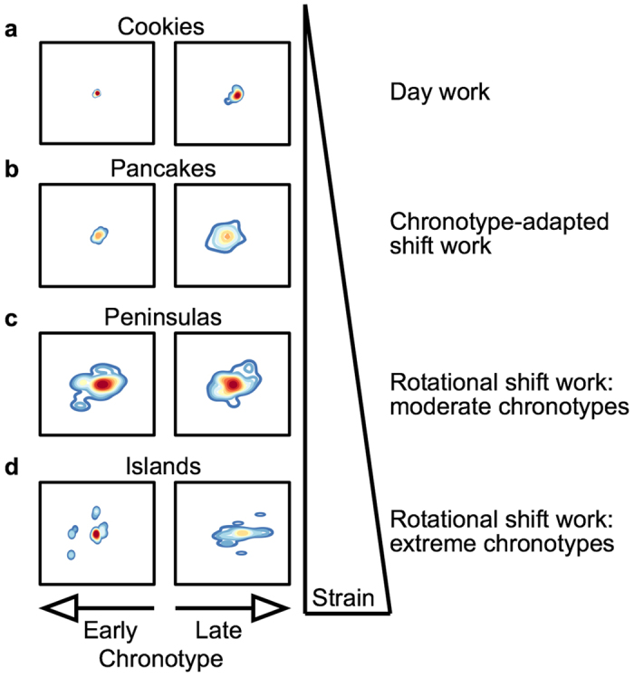
- Used in: https://doi.org/10.1038/s41380-021-01157-3
- Another way to visualize CPD:
- 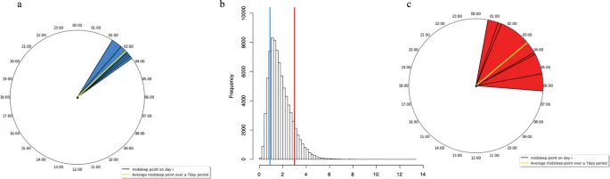
- BEST CPD brief definition: "Briefly, CPD combines the deviation of each night’s sleep midpoint from both the individual’s average sleep midpoint and the previous night’s sleep midpoint. CPD captures both the overall variability in sleep timing and changes in sleep timing between consecutive nights. A higher CPD value has been proposed to capture greater misalignment (Fig. 3)." https://doi.org/10.1038/s41380-021-01157-3
- See supplementary materials of https://doi.org/10.1038/s41380-021-01157-3 for how to use GGIR on actigraphy (clean up and analysis) (local mirror: ./41380_2021_1157_MOESM1_ESM.zip)
- Optimizing actigraphic estimates of polysomnographic sleep features in insomnia disorder https://doi.org/10.1093/sleep/zsaa090
- the actual sample rate with Axivity AX3 can actually fluctuate between 94-104Hz when sampling rate is set at 100 Hz: https://biobankaccanalysis.readthedocs.io/en/latest/methods.html
- Over time this internal clock will drift slightly. For single device applications, that can tolerate a drift of 50 parts-per-million (0.18 seconds per hour) no action is needed. However, when using multiple devices for a single capture session, aligning the data sets from several sources can become difficult. To overcome this, you can add an easily identifiable signal (e.g. claps at the start and end of capture), and tools are available to help synchronize this to an external clock or between devices. https://axivity.com/userguides/ax3/settings/#additional-sensors
- For single handed monitoring the choice between dominant and non-dominant hand must be based on if the data set will be used for activity classification and physical activity monitoring type applications (for which the non-dominant hand is a popular choice) or finer grained skill assessment of activities (for which the dominant hand is often used). https://axivity.com/userguides/ax3/using/
- However, for successful data capture the AX3 must be securely fastened to the target with minimal room for vibration, slip or twist; this helps preserve only the motions of the target are captured. In addition, an attachment convention for device orientation will assist in consistent and comparable datasets being gathered. The below is a suggested orientation convention for popular body mounting sites. With the exception of the left wrist, the USB port is configured to point towards the ground.
- Actigraphy-based parameter tuning process for adaptive notch filter and circadian phase shift estimation, 2020 https://doi.org/10.1080/07420528.2020.1805460
- 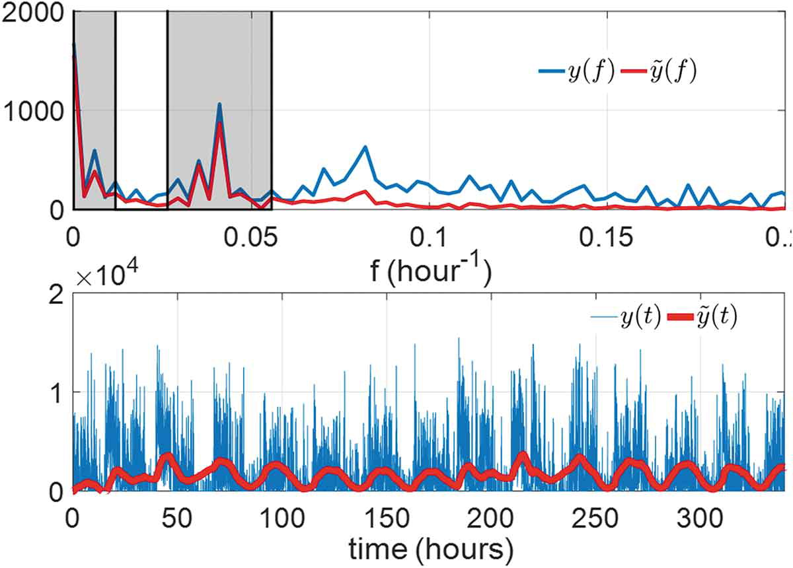
- With phase shift estimation!
- 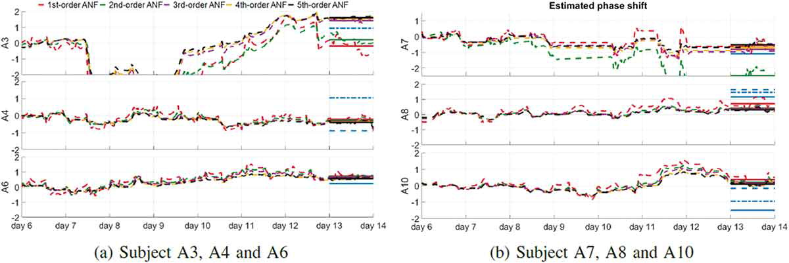
- Also works with low quality actigraphy sampling rate:
- 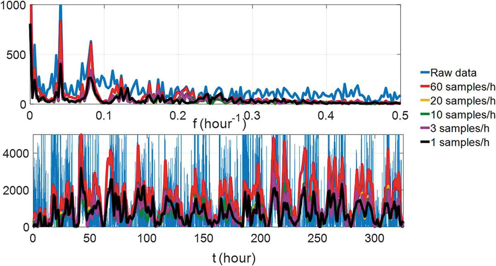
- ME: BUT QUESTION: changed usb port in AX3 is same direction as arrow, but for AX6 it's opposite. So should the position relative to the arrow or the usb port? https://axivity.com/userguides/ax3/using/
- Can resample CWA file into WAV file, will not overwrite original
- https://cran.r-project.org/web/packages/GGIR/vignettes/GGIR.html#daysleepers-nights-workers
- https://axivity.com/userguides/ax3/using/ recommends: To fix the sensor to other body positions where a strap or clip is not feasible, Axivity recommends the use of Hypafix or Flexifix dressings.
- actigraphy: auto method to detect SPT window (ie, when sleep starts and ends), then can use their other tools to detect sleep stage: Estimating sleep parameters using an accelerometer without sleep diary https://www.nature.com/articles/s41598-018-31266-z
- "Wrist-worn raw-data accelerometers are increasingly used for the assessment of physical activity in large population studies such as the Whitehall II study or mega-cohorts such as UK Biobank1,2,3. The decision to use raw-data accelerometers is motivated by the improved comparability of output across different sensor brands4,5, and better control over all steps in data processing6. Accelerometers are commonly worn for 24 hours per day, thus providing information over the day and night; making them potentially valuable for sleep research." using GGIR R package
- "A major challenge in accelerometer-based sleep measurement is to derive sleep parameters without additional information from sleep diaries1,3,7. Standard methods for sleep detection based on conventional accelerometers (actigraphy) involves asking the participant to record their time in bed, sleep onset, and waking up time8,9,10. In a previous paper we developed a method to detect sleep guided by sleep diary records11. However, the increasing use of accelerometry in studies worldwide without sleep diaries necessitates the development of novel methods to derive indicators of sleep behaviour, in the absence of sleep diary records. A crucial step is the detection of the sleep period time window (SPT-window), which is the time window starting at sleep onset and ending when waking up after the last sleep episode of the night. Once the SPT-window can be detected without a diary, our previously published method can be used to detect sleep episodes within this window11."
- comparison of actigraphy with polysomnography (PSG) gold standard: "SPT-window duration was estimated for the left wrist within 2 hours for the majority of individuals (75%) but deviated by more than 2 hours in seven individuals, six of which had a sleep disorder, as shown in Fig. 3 (right wrist: 81%, five, and four, respectively)." - not that much better than the Oura ring in fact
- BEST: sourcecode available in GGIR: "Both SPT-window detection algorithms are implemented and available in open source R package GGIR version 1.5-23 (https://cran.r-project.org/web/packages/GGIR/)18, see the software’s documentation on input arguments ‘loglocation’ and ‘def.noc.sleep’ for further details on the use of L5 ± 6 and HDCZA."
- BEST ACTIGRAPHY METHODS REFS 4,5,6:
- 4. Rowlands AV, Yates T, Davies M, Khunti K, Edwardson CL. Raw Accelerometer Data Analysis with GGIR R-package: Does Accelerometer Brand Matter? Med. Sci. Sports Exerc. 2016;48:1935–41. doi: 10.1249/MSS.0000000000000978. [PubMed] [CrossRef] [Google Scholar]
- Rowlands AV, et al. Accelerometer-assessed Physical Activity in Epidemiology: Are Monitors Equivalent? Med. Sci. Sports Exerc. 2018;50:257–265. doi: 10.1249/MSS.0000000000001435. [PubMed] [CrossRef] [Google Scholar]
- van Hees VT, et al. Challenges and Opportunities for Harmonizing Research Methodology: Raw Accelerometry. Methods Inf. Med. 2016;55:525–532. doi: 10.3414/ME15-05-0013. [PubMed] [CrossRef] [Google Scholar]
- Use non-dominant wrist, more accurate
- BEST CRITICAL: generalizable ANN model with disclosed mathematical models from actigraphy + heart rate data to auto detect sleep-wake periods AND sleep stage score (REM, NREM N1, N2, N3 etc): https://pubmed.ncbi.nlm.nih.gov/31579900/
- Used by Oura ring v3 for sleep stage scoring: https://doi.org/10.3390/s21134302
- and indeed they simulate the circadian rhythm with a "clock proxy" mathematical model, this improves classification for sleep stage scoring results!
- BEST PACKAGES:
- ACTIGRAPHY ANALYSIS PACKAGES: GGIR (R package, with auto-detection of start and end of sleep window), pyActigraphy (by Liege CRC), SleepPy (ref paper JOSS) - example of full analysis: https://github.com/ChildMindInstitute/Healthy-Brain-Network-wearable-evaluation - Actigraphy Analysis Toolbox in MATLAB (direct link - with auto detection of start and end of sleep window - better than others according to paper and fit for disturbed circadian rhythms and fragmented sleep such as PTSD)
- BESTTUTO: https://cran.r-project.org/web/packages/GGIR/vignettes/GGIR.html (includes AX3 and AX6), with video and 2019 overview paper tutorials!
- More tutos for AX3: https://www.youtube.com/user/openmovementncl and https://github.com/digitalinteraction/openmovement/wiki/AX3
- PennZzz - an algorithm for estimating behavioral states from wrist-worn accelerometery https://www.biorxiv.org/node/105499.article-info and https://github.com/rjmccloskey/PennZZZ
- Spectrometer light analysis packages: Lucas Toolbox: Lucas, R.J.; Peirson, S.N.; Berson, D.M.; Brown, T.M.; Cooper, H.M.; Czeisler, C.A.; Figueiro, M.G.; Gamlin, P.D.; Lockley, S.W.; O’Hagan, J.B. Measuring and using light in the melanopsin age. Trends Neurosci. 2014, 37, 1–9. as used in https://www.researchgate.net/publication/340603112_Accuracy_of_the_GENEActiv_Device_for_Measuring_Light_Exposure_in_Sleep_and_Circadian_Research
- Heart rate variability analysis:
- https://www.kubios.com/hrv-standard/ (freeware)
- or software used by Francesco
- Best methods paper: https://www.frontiersin.org/articles/10.3389/fpsyg.2017.00213/full Recommended by: https://www.researchgate.net/post/Could_anyone_recommend_a_validated_device_to_measure_heart_rate_variability_Preferably_a_portable_device
- On Android: https://play.google.com/store/apps/details?id=com.hrvfit.ithlete or https://play.google.com/store/apps/details?id=com.cardiomood.android.expert (validation study: https://pubmed.ncbi.nlm.nih.gov/24511344/)
- OpenSignals (r)evolution https://biosignalsplux.com/index.php/software - free software but not opensource (but modular architecture so can support third-party devices and cross-platform including Android) - BUT HRV analysis add-on is 400€ https://plux.info/22-software
- patented analysis of autonomic system: https://nervexpress.net/
- python module: https://joss.theoj.org/papers/10.21105/joss.01867 and https://github.com/rhenanbartels/hrv
- pypupillometry to analyze pupillometric data (eg, to analyze effect of light and dark therapy on pupil dilation as a proxy of ipRGC cells stimulation): https://joss.theoj.org/papers/10.21105/joss.02348
- ACTIGRAPHY ANALYSIS PACKAGES: GGIR (R package, with auto-detection of start and end of sleep window), pyActigraphy (by Liege CRC), SleepPy (ref paper JOSS) - example of full analysis: https://github.com/ChildMindInstitute/Healthy-Brain-Network-wearable-evaluation - Actigraphy Analysis Toolbox in MATLAB (direct link - with auto detection of start and end of sleep window - better than others according to paper and fit for disturbed circadian rhythms and fragmented sleep such as PTSD)
Wrist skin temperature Thermocron iButtons
- Denoising: to clean up noise (denoising) of temperature data from home/wild settings, on humans at home and for circadian rhythm prediction:** "In contrast to most laboratory assessments, it seldom happens that field assessments are free of artefacts. Therefore an automated artefact rejection procedure was applied to exclude extreme drops and rises in temperature. Because of the bimodal rather than normal distribution of the temperature data, no artefact rejection was applied to exclude data more than two or three standard deviations from the mean, but rather a three-step nonparametric method. [...] the three-step artefact rejection procedure resulted in far fewer noisy distal and proximal curves, whereas the variability was maintained. Firstly, the rate of change (ROC) of all subsequent single channel data points was calculated, their quartiles Q25 and Q75, and their interquartile distance (IQRROC). Any data point with a rate of change exceeding 1 time the interquartile distance from Q25 or Q75 was removed. This step resulted in the rejection of very fast drops or increases in temperature. Secondly, in the resulting restricted raw data, the quartiles Q25 and Q75 and their interquartile distance (IQRLEVEL) were calculated. Any data point with a level exceeding 1 time the interquartile distance from Q25 or Q75 was removed. This step resulted in the rejection of very low temperatures. Thirdly, the resulting gaps in the single channels were interpolated linearly followed by an 11-point rectangular smoothing." https://doi.org/10.1016/j.physbeh.2006.04.026
- Wrist skin temperature using iButton with ax3 to autodetect circadian highs and lows https://eudl.eu/pdf/10.4108/eai.20-5-2019.2282879
- validity of ibuttons: https://www.researchgate.net/publication/40033570_The_validity_of_wireless_iButtonsR_and_thermistors_for_human_skin_temperature_measurement
- distal-to-proximal iButtons placement + how to calculate: Evaluation of wireless determination of skin temperature using iButtons, van Marken Lichtenbelt et al, 2006 https://doi.org/10.1016/j.physbeh.2006.04.026
- 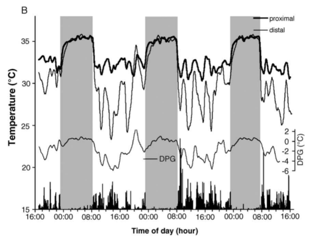
- But contradicts with the findings of another study showing that proximal temperature is not reliable, maybe confounded by body posture? Axillary and Thoracic Skin Temperatures Poorly Comparable to Core Body Temperature Circadian Rhythm: Results from 2 Adult Populations, 2004 https://doi.org/10.1177%2F1099800403260620
- TODO ME: autodetect when a drop in temperature precedes wake up time, this is indicative of circadian rhythm, otherwise not if the temperature drops follows the wake up time. Detect sudden drops by using Savitzky-Golay filter:
def sgfilter(origdata, diffthreshold=2, verbose=False):
# Compute the Savitzky-Golay filter, a longer window allows us to detect the outbreak earlier (we don't want to miss it and start fitting too late)
# This essentially detects when there is a big change in the slope of the evolution of the outbreak
sgdata = savgol_filter(origdata, window_length=5, polyorder=1)
# Get the first index that surpass a threshold, 2 seems a good value
firstoutbreak = np.argmax(np.diff(sgdata) > diffthreshold) + 1
firstoutbreakdate = origdata.index[firstoutbreak]
if verbose:
print('Autodetecting outbreak at day %i (%s)' % (firstoutbreak, str(firstoutbreakdate)))
# Return the sliced data from the pre-outbreak dates
return origdata[firstoutbreak:], firstoutbreak, firstoutbreakdate
- how czeisler analyzed temperature: https://sci-hub.tw/https://doi.org/10.1126/science.3726555
- TAP method, using iButton on the wrist, similar accuracy to polysomnography: https://www.sciencedirect.com/science/article/abs/pii/S0031938413004423 Ambulatory Circadian Monitoring (ACM) based on Thermometry, motor Activity and body Position (TAP): A comparison with polysomnography, 2014
- BEST TOSEE: all papers using Circadianware platform: https://kronowizard.um.es/kronowizard/plataforma.seam
- they used the Kronowise watch for light sensing combined with an accelerometer on the arm and iButton for wrist skin temperature
- BEST CRITICAL VALIDATION AND METHODS: Uncovering Different Masking Factors on Wrist Skin Temperature Rhythm in Free-Living Subjects, 2013 https://www.ncbi.nlm.nih.gov/pubmed/23577201
- WT = wrist skin temperature: "Although the overall circadian pattern of WT was similar regardless of the masking effects, its amplitude was the rhythmic parameter most affected by environmental conditions. The acrophase and mesor were determined to be the most robust parameters for characterizing this rhythm. In addition, a circadian modulation of the masking effect was found for each masking variable. WT rhythm exhibits a strong endogenous component, despite the existence of multiple external influences. This was evidenced by simultaneously eliminating the influence of activity, body position, light exposure, environmental temperature and sleep. We therefore propose that it could be considered a valuable and minimally-invasive means of recording circadian physiology in ambulatory conditions."
- Application of Machine Learning Methods to Ambulatory Circadian Monitoring (ACM) for Discriminating Sleep and Circadian Disorders, 2019 https://www.ncbi.nlm.nih.gov/pmc/articles/PMC6916421/
- Discriminates between 3 types of insomnia and DSPD and typical sleepers!
- 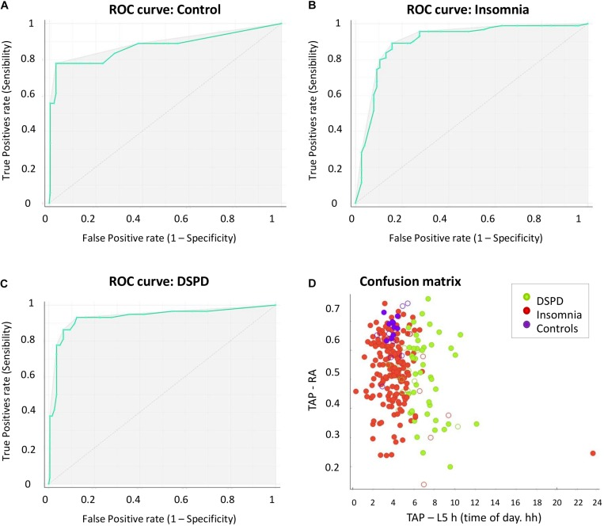
- BEST CRITICAL METHODS: Circadian rhythm of wrist temperature in normal-living subjects A candidate of new index of the circadian system, 2008 https://pubmed.ncbi.nlm.nih.gov/18761026/
- "The most frequent reference variables for human chronotherapy include salivary melatonin or cortisol, urinary 6-sulfatoximelatonin, actimetry and core body temperature (CBT). Recent evidence suggests that sleepiness may be more closely linked to increased peripheral skin temperature than to a core temperature drop, and that distal skin temperature seems to be correlated and phase-advanced with respect to CBT, suggesting that heat loss from the extremities may drive the circadian CBT rhythm."
- "Each subject wore a wireless iButton sensor attached to the inner side of a sport wristband."
- "Our results show that the WT rhythm exhibits an inverse phase relationship with OT, and it is phase-advanced by 60 min with respect to OT. WT started to increase in association to bed time and dropped sharply after awakening. A secondary WT increase, independent of feeding, was observed in the early afternoon. In conclusion, WT wireless recording can be considered a reliable procedure to evaluate circadian rhythmicity, and an index to establish and follow the effects of chronotherapy in normal living subjects."
- WT = wrist skin temperature, OT = oral temperature.
- A new integrated variable based on thermometry, actimetry and body position (TAP) to evaluate circadian system status in humans, 2010 https://pubmed.ncbi.nlm.nih.gov/21085644/
- "The disruption of the circadian system in humans has been associated with the development of chronic illnesses and the worsening of pre-existing pathologies. Therefore, the assessment of human circadian system function under free living conditions using non-invasive techniques needs further research."
- "we also tested the reliability of a single numerical index, the Circadian Function Index (CFI), to determine the circadian robustness."
- "the CFI proved to be very sensitive to changes in circadian robustness."
- Wrist skin temperature, motor activity, and body position as determinants of the circadian pattern of blood pressure, 2012 https://pubmed.ncbi.nlm.nih.gov/22734575/
- Wrist skin temperature can be used to estimate blood pressure patterns! "Thus, these results suggest that the increase in WT produced by heat loss during the rest phase through peripheral skin blood vessels is the result of blood vessel vasodilatation reflexes in response to a shift from a standing to a supine position, together with shift in the circadian sympathetic/parasympathetic balance (nocturnal parasympathetic activation). In conclusion, WT could be considered as a potential new screening procedure to implement the diagnosis of non-dipping BP pattern."
- https://www.researchgate.net/publication/51460231_Differences_in_Daily_Rhythms_of_Wrist_Temperature_Between_Obese_and_Normal-Weight_Women_Associations_With_Metabolic_Syndrome_Features
- "Particularly interesting were the marked differences between obese and normal-weight women in the secondary WT peak in the postprandial period (second-harmonic power [P2]), considered as a marker of chronodisruption and of metabolic alterations."
- "In summary, obese women displayed a lower-quality WT daily rhythm with a more flattened pattern (particularly in the postprandial period) and increased IV, which suggests a greater fragmentation of the rest/activity rhythm compared to normal-weight women. These 24-h changes were associated with higher MetS risk."
- BEST CRITICAL METHODS: "Nonparametric tests provided more reliable information than cosinor analysis for circadian rhythm assessment in infants." https://doi.org/10.3109/07420528.2011.565895 — the study also used Thermocron iButtons.
- There are lots of other studies showing that nonparametric tests are more reliable for circadian rhythm assessment.
- BEST CRITICAL METHODS: WTiO (Wrist skin temperature increase onset) anticipates melatonin production: Circadian phase assessment by ambulatory monitoring in humans: correlation with dim light melatonin onset, 2014 https://pubmed.ncbi.nlm.nih.gov/24164100/
- "The devices measured skin temperature at wrist level (WT), motor activity and body position on the arm, and light exposure by means of a sensor placed on the chest. Dim light melatonin onset (DLMO) was used to compare and evaluate the accuracy of the ambulatory variables in assessing circadian phase."
- "An evening increase in WT: WTOnset (WTOn) and "WT increase onset" (WTiO) was found to anticipate the evening increase in melatonin, while decreases in motor activity (Activity Offset or AcOff), body position (Position Offset (POff)), integrative TAP (a combination of WT, activity and body position) (TAPOffset or TAPOff) and an increase in declared sleep propensity were phase delayed with respect to DLMO. The phase markers obtained from subjective sleep (R = 0.811), WT (R = 0.756) and the composite variable TAP (R = 0.720) were highly and significantly correlated with DLMO."
- "The findings strongly support a new method to calculate circadian phase based on WT (WTiO) that accurately predicts and shows a temporal association with DLMO. WTiO is especially recommended due to its simplicity and applicability to clinical use under conditions where knowing endogenous circadian phase is important, such as in cancer chronotherapy and light therapy."
- BEST CRITICAL METHODS: Ontogeny and aging of the distal skin temperature rhythm in humans, 2015 https://www.ncbi.nlm.nih.gov/pubmed/25813804
- "Circadian aging in humans is characterized by a phase advance, accompanied by rhythm fragmentation and flattening."
- "Circadian system maturation was associated with an increase in amplitude and a reduction in skin temperature during sleep. During adulthood, women showed a more robust pattern (lower fragmentation, and higher night-time temperature, amplitude, circadian function index, and first harmonic relative power); however, these differences were lost with aging, a period of life that was consistently associated with a phase advance of the rhythm. In summary, distal skin temperature pattern can be used as a robust variable to discern between different ages throughout the life."
- "All adults wore a Thermochron iButton DS1921H (Dallas, Maxim) for skin wrist temperature measurement, which had a precision of ±0.125 °C. This temperature sensor was placed on the wrist of the nondominant hand over the radial artery and isolated from the environmental temperature by a double-sided cotton sport wrist band, as previously described (Martinez-Nicolas et al. 2013). The babies wore the device inside a sock to isolate it from the environmental temperature, as previously described (Zornoza-Moreno et al. 2011). All devices were programmed to sample once every 10 min, and they were worn for three (in the case of babies) or seven consecutive days (remaining groups)." → the cotton sports wristband also shields from ambient temperature!
- Original ref for the cotton sport wrist band: https://pubmed.ncbi.nlm.nih.gov/23577201/ which itself references: https://pubmed.ncbi.nlm.nih.gov/18761026/
- BEST CRITICAL METHODS: they using Velcro to attach the iButton to a cotton sports band! "In our experiments iButtons were programmed to sample every 10 min, and were attached to a double-sided cotton sport wrist band using Velcro®, with the sensor face of the iButton being placed over the inside of the wrist, on the radial artery of the non-dominant hand. The non dominant hand was selected to reduce the potential masking effects generated by the higher activity of the dominant hand (i.e. writing in class, manual working...). This procedure guarantees good skin contact with the sensor face of the iButton. Wrist location was selected among other peripheral regions (ankle, sternum, armpit) after several trials performed in our laboratory, since it allows long term recording without significant complaints of discomfort from the subjects. In addition, subjects could easily remove and replace the data logger when necessary (i.e., to have a bath or shower). After one week of monitoring, the information stored in the iButton was transferred through an adapter (DS1402D-DR8, IDC, Spain) to a personal computer using iButton Viewer v. 3.22© 1992–2005 Dallas Semiconductor MAXIM software provided by the manufacturer."
- BEST CRITICAL METHODS: PhD Thesis: Crosstalk between Synchronizers and the Human Circadian System, D. Antonio Martinez Nicolas, 2014, PhD Thesis http://hdl.handle.net/10201/40027
- Summary: modern circadian rhythm science introduction + validation of wrist skin temperature as a reliable method for circadian rhythm monitoring, and methods to analyze!
- CRITICAL: core body temperature versus proximal and distal (wrist) skin temperatures. This shows why proximal temperature such as on the trunk cannot reliably be used to estimate the circadian rhythm. But core body temperature and distal (wrist) skin temperature both can.
- 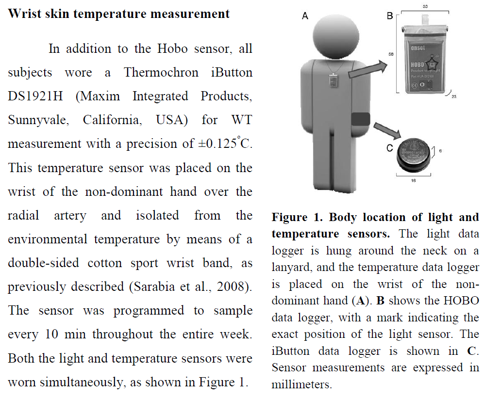
- BEST TOSEE: all papers using Circadianware platform: https://kronowizard.um.es/kronowizard/plataforma.seam
Temperature core body GreenTEG CORE
- Data quality assessment:
- use data quality to know if sensor was not well placed at this sample point.
- compare core and skin temperatures (from same sensor): if skin goes up but core goes down (inversed temperature profile), then exclude because the temperature was still stabilizing. Hence, the rolling derivative over a few samples should be the same sign, if not then exclude sample because did not reach steady-state (check how they do for MRI? I think they also simply detect and exclude).
- no access to accelerometer for the moment but maybe in the future?
- see how Czeisler et al did + math model predictive of optimal time for light therapy: https://doi.org/10.1371/journal.pone.0030037
- Methods:
- How to calculate dual heat flux temperature from 4 sensors: https://doi.org/10.14326/abe.7.88
- BEST CRITICAL METHODS: several methods of purification of core body temperature, helps to better see the peaks and trough: Estimates of the daily phase and amplitude of the endogenous component of the circadian rhythm of core temperature in sedentary humans living nychthemerally, 2000 https://pubmed.ncbi.nlm.nih.gov/11543399/
- "These results reflect the masking effects exerted upon raw temperature data by lifestyle. The extent to which the purification methods enable the endogenous component of a circadian rhythm - and, by implication, the output of the endogenous circadian oscillator - to be estimated in subjects living normally is addressed."
- Another method, on dual heat flux sensor Tcore placed on the forehead: https://pubmed.ncbi.nlm.nih.gov/34040542/
- Preliminary validations by GreenTEG Core producer: https://www.greenteg.com/coreresearch/ (mirror: https://web.archive.org/web/20210105033254/https://www.greenteg.com/coreresearch/ )
- ME IDEAS EXPERIMENTS DATA ANALYSIS:
- how to test whether it measures sleep or circadian rhythm or something else? Check correlation with sleep sessions start time, wake up time and interval contained, should be weak for start time but mid for wake up time and interval contained (sleep sessions generally occur inside the circadian night). But now test whether sleeping in phase with circadian night (ie, start time and wake up time close ~1 ultradian cycle to circadian night start and end times) have a longer duration, if yes then that's a strong hint. Furthermore can test sleep quality, but sleep quality is directly correlated with sleep duration so it's a bit redundant. This would show that when the sleep session is aligned with the device's detected circadian night, the sleep is longer and of increased quality, which would strongly suggests that indeed the device does measure the core body temperature and circadian rhythm, as opposed to just sleep sessions. We cannot verify this on all nights because when the user sleeps outside of the circadian night then we have no way of verifying whether what the device detects as a circadian night is true or false. Can also do a quantitative analysis: compare how sleep duration is related to how close the sleep session is to the circadian night, I expect the further, the shorter sleep, this should show up as a nice inverse linear relationship between sleep-circadian rhythm misalignment and sleep duration.
- BEST BETTER ANALYSIS: sleep schedule vs circadian night probabilistic window detection from core body temperature and correlation with sleep duration from sleep diary or actigraphy: set an ideal sleep duration, eg 7 to 8h, then apply a probabilistsic model to find the most likely time the circadian night happened with such a duration (can be smaller or longer, but it will match the period with the closest duration and that is the low phase of the core body temperature). Could also be extended to find naps but it's likely more difficult. Then, calculate correlation between sleep diary's or actigraphy's sleep duration and distance or overlap with circadian night as detected by the probabilistic model. My hypothesis is that the most overlapping, the longer sleep and better quality. The opposite should hold true, the less overlapping, the shorter the sleep duration and quality. This would demonstrate that core body temperature indeed reflects the circadian rhythm AND that sleep in circadian misalignment leads to a shorter sleep. I expect that a longer sleep is observed only when at least half of the sleep session overlaps with the circadian rhythm (ie, 3-4h), otherwise if the overlap is less then it should be similar to sleeping in circadian misalignment, with sleep sessions not exceeding 5h. This should provide a nice inverse correlation between sleep-circadian distance and sleep duration. Then can also use sleep diary's tags such as LikelyPartiallyInPhase which means that the user estimates that there is an overlap of about half of the circadian night, but these tags are biased since they are subjective and they often rely on assessing sleep duration and expected circadian night window based on previous days/weeks. And LikelyInPhase should correlate with sleep durations > 6h30 and PartiallyInPhase and OutOfPhase with sleep durations < 6h.
Light sensor on AX6
- Conversion: https://axivity.com/userguides/ax3/settings/#additional-sensors
- Check studies on Broadcom APDS9007, the internal light sensor used in AX6:
- BEST VALIDATION: Tetervenoks, O., Avotins, A., & Galkin, I. (2011). Illumination measurement stand for artificial light sources. In 10th international Symposium" Topical Problems in the Field of Electrical and Power Engineering (pp. 250-254). https://www.researchgate.net/profile/Ansis_Avotins/publication/268292350_Illumination_measurement_stand_for_artificial_light_sources/links/57bd4cfa08ae6918242f9c3d.pdf
- "To get readings in visible spectrum, a secondary sensor can be used like APDS-9007, whose spectral response is close to the CIE standard photopic observer (see Fig. 7.), it consists of a photodiode and an IC that performs amplification of the photodiode output signal and conversion to a logarithmic output current. [...] A logarithmic current output is advantageous, when measuring low brightness levels, small changes in those levels need to be detected, and at high brightness levels, relatively bigger changes in those levels would be significant, thus logarithmic current output, is able to provide a good relative resolution over the entire ambient light brightness range [9]."
- 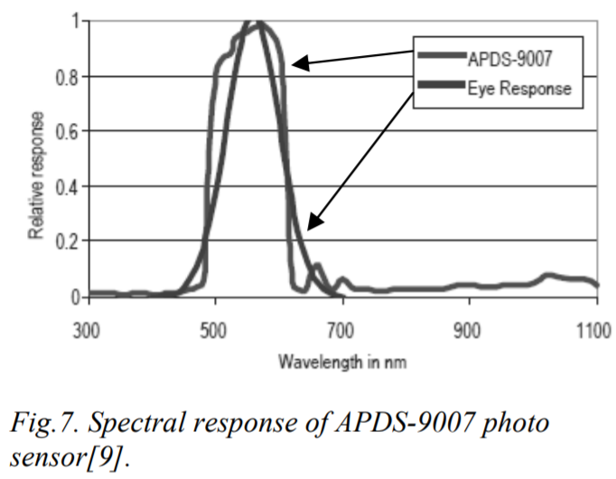
- This confirms AX6 doc that says that the wavelength is "matched to the human eye"
- Light sensors comparison (including APDS-9301, also in the study above, it's the previous generation before APDS-9007): http://www.yoctopuce.com/EN/article/light-sensors-comparison
- Yocto-Light-V3 - Tiny USB ambiant light sensor (lux meter, but no spectral sensor): http://www.yoctopuce.com/EN/products/usb-environmental-sensors/yocto-light-v3
- Very inexpensive sensor, costs ~$1 !
- Can also be used for PPG: https://ieeexplore.ieee.org/abstract/document/7047462 and https://link.springer.com/chapter/10.1007/978-981-10-0534-3_12
- BEST VALIDATION: Tetervenoks, O., Avotins, A., & Galkin, I. (2011). Illumination measurement stand for artificial light sources. In 10th international Symposium" Topical Problems in the Field of Electrical and Power Engineering (pp. 250-254). https://www.researchgate.net/profile/Ansis_Avotins/publication/268292350_Illumination_measurement_stand_for_artificial_light_sources/links/57bd4cfa08ae6918242f9c3d.pdf
- Methods:
- BEST METHODS: Daily Light Exposure Patterns Reveal Phase and Period of the Human Circadian Clock, 2017 https://doi.org/10.1177%2F0748730417696787
- "Establishing individual estimates of circadian phase and period can be time-consuming. We show that circadian phase can be accurately predicted (SD = 1.1 h for dim light melatonin onset, DLMO) using 9 days of ambulatory light and activity data as an input to Kronauer’s limit-cycle model for the human circadian system. This approach also yields an estimated circadian period of 24.2 h (SD = 0.2 h), with longer periods resulting in later DLMOs. A larger amount of daylight exposure resulted in an earlier DLMO. Individuals with a long circadian period also showed shorter intervals between DLMO and sleep timing. When a field-based estimation of tau can be validated under laboratory studies in a wide variety of individuals, the proposed methods may prove to be essential tools for individualized chronotherapy and light treatment for shift work and jetlag applications. These methods may improve our understanding of fundamental properties of human circadian rhythms under daily living conditions."
- BEST METHODS: Daily Light Exposure Patterns Reveal Phase and Period of the Human Circadian Clock, 2017 https://doi.org/10.1177%2F0748730417696787
Light sensor Lys or Adalloger (analysis)
- Very detailed methods in a nature paper: https://doi.org/10.1038/s41598-020-75622-4
- Spectrometer light analysis packages: Lucas Toolbox: Lucas, R.J.; Peirson, S.N.; Berson, D.M.; Brown, T.M.; Cooper, H.M.; Czeisler, C.A.; Figueiro, M.G.; Gamlin, P.D.; Lockley, S.W.; O’Hagan, J.B. Measuring and using light in the melanopsin age. Trends Neurosci. 2014, 37, 1–9. as used in https://www.researchgate.net/publication/340603112_Accuracy_of_the_GENEActiv_Device_for_Measuring_Light_Exposure_in_Sleep_and_Circadian_Research
- BEST METHODS: http://hdl.handle.net/10201/40027 "To facilitate the determination of light exposure, the presence/absence of natural light (solar day and night, respectively), and the light intensity analysis, the following ranges were established: very dim light (<10 lux), indoor dim light (10-500 lux), indoor bright light (500-1000 lux), and outdoor bright light (>1000 lux), as described in a previously conducted study (Turner & Mainster, 2008). Environmental light intensities in lux were converted into logarithmic units and averaged every 10 mins to allow comparisons with temperature data."
- Estimating Representative Group Intrinsic Circadian Period from Illuminance-Response Curve Data https://doi.org/10.1177%2F0748730419886992
- BEST: math model predictive of optimal time for light therapy compared to CBTmin: https://doi.org/10.1371/journal.pone.0030037
- BEST CRITICAL METHODS: Phasor analysis to quantify circadian misalignment and disruption relative to bright light exposure: https://doi.org/10.1177/1477153517721598
- "In 2008, Rea et al.68 proposed a quantitative method for estimating circadian entrainment and disruption in the field. Called phasor analysis, this method permits examination of the relationship between the 24-hour (circadian) light–dark exposure pattern, the stimulus, and the activity–rest pattern. The response is quantified in terms of the phase and magnitude of their joint circular correlation function. The joint circular correlation function is determined by calculating correlations (r, not r2) between the entire, continuously repeating time series of light–dark exposure data and the entire, continuously repeating time series of activity–rest data as one time series is rotated with respect to the other. The circular correlation function is decomposed into its Fourier components from which the 24-hour frequency component can be represented by a vector, called a phasor. The vector length, or phasor magnitude, represents the amount of circadian entrainment exhibited in the light–dark pattern and the associated activity–rest pattern; the greater the phasor magnitude, the stronger the correlation between the light stimulus and the activity response. The vector angle, or phasor angle, reflects the phase relationship between the 24-hour light–dark exposure pattern and the 24-hour activity–rest pattern."
- Very stable results across species, between shift working humans and jet lagged rats (using an aberrant light exposure schedule).
- 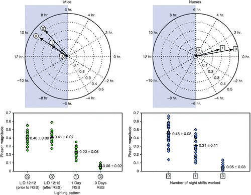 Shorter = lesser magnitude = more circadian disruption (more consecutive nights worked)
- "After three weeks under these conditions, oral glucose tolerance tests (measured over 120 minutes) showed that glucose area under the curve (AUC) was significantly higher after animals experienced the simulated shift-work schedules compared to the day-shift schedule. More importantly, the results showed a significant negative correlation between phasor magnitude (a measure of circadian entrainment) and glucose AUC (Figure 3). A higher glucose AUC suggests a lower glucose tolerance, which is typically associated with higher risk for type 2 diabetes."
- "These studies are of utmost importance as they demonstrate how the discussion about light’s effect on human health needs to shift to the relationship between light–dark and activity–rest patterns, and not just focus on LAN exposure and its impact on circadian disruption. Phasor analysis provides a method for quantifying circadian disruption in field and laboratory settings, as well as a bridge between ecological measurements of circadian entrainment in humans and parametric studies of circadian disruption in animal models, including nocturnal rodents."
- Rea invented the Daysimeter: https://pubmed.ncbi.nlm.nih.gov/18510756/
- BEST METHODS: "we analysed data from nineteen different laboratory studies that measured melatonin suppression, circadian phase resetting and/or alerting responses in humans to a wide array of stimulus types, intensities and durations with or without pupil dilation. Using newly established SI-compliant metrics to quantify ipRGC-influenced responses to light, we show that melanopic illuminance consistently provides the best available predictor for responses of the human circadian system. In almost all cases, melanopic illuminance is able to fully account for differences in sensitivity to stimuli of varying spectral composition, acting to drive responses that track variations in illumination characteristic of those encountered over civil twilight (~1-1000 lux melanopic equivalent daylight illuminance)." https://doi.org/10.1111/jpi.12655
- METHOD: "We chose the violet (410 nm) and the blue (440 nm) wavelengths known to be harmful for the retina [28,29], the turquoise blue (480 nm) implicated in circadian rhythms [30], the green light (510 nm) reported to be soothing for photophobic migraineurs [31,32] and also the red light (630 nm). The part of the plate was kept in the dark for the control condition; the red-illuminated part served as a second control since, to our knowledge, there are no data about any damage from red-light exposure. We used the irradiance range that would approximate the real-life conditions. Indeed, according to recent measurements performed in the R&D department of Essilor (personal communication), on a sunny slightly cloudy day, we can easily be exposed to 4.89 mW/cm2 of 380–780 nm light (entire solar visible spectrum) and to 1.28 and 1.4 mW/cm2 of its blue (380–500 nm) and yellow (500–600 nm) spectral parts respectively (at 10 a.m. in the center Paris at the end of May). We set the illumination time at 3 h since longer exposures to violet light were too harmful for cells and the shorter ones did not induce any cell death (Fig. S3)." https://pubmed.ncbi.nlm.nih.gov/30496813/
- BEST CRITICAL: Behavioral scales subjective sleepiness on the Karolinska Sleepiness Scale (KSS), and performance on a Psychomotor Vigilance Task) are not enough to accurately predict an individual's circadian rhythm. Adding light data is necessary to improve accuracy (as compared to urinary melatonin levels (urinary 6-sulphatoxymelatonin (aMT6s) profiles which is not a great proxy for the circadian rhythm honestly), but even then, the model's accuracy is not great (ie, circadian rhythm prediction from light input is still very hard and mostly unreliable), on a study in shift workers (not even endogenous circadian rhythm disorders which are arguably harder to model since their circadian rhythm may be even more variable): https://pubmed.ncbi.nlm.nih.gov/34111278/
- "All input constraints produced similar prediction for KSS, with 56%-60% of KSS scores predicted within ±1 on a day and 48%-52% on a night shift. Accurate prediction of an individual's circadian phase required individualized light input. Combinations including light information predicted aMT6s acrophase within ±1 h of the study data for 65% and 35%-47% of nurses on diurnal and nocturnal schedules. Minute-by-minute sleep-wake state overlap between the model and the data was between 81 ± 6% and 87 ± 5% depending on choice of input constraint."
- Conclusion: predicting the circadian rhythm with current tools is very hard and unreliable! Maybe core body temperature or wrist skin temperature can perform better?
- BEST TOOL: Tools for simulating human circadian rhythms for a given light schedule https://github.com/Arcascope/HCRSimPY and https://doi.org/10.1177%2F0748730419878298
ECG and sleep
- ECG may be an objective estimator of sleep deprivation? And hence how many nights of good sleep are necessary before full recovery?
- Robust circadian rhythm in heart rate and its variability: influence of exogenous melatonin and photoperiod, 2007 https://pubmed.ncbi.nlm.nih.gov/17542944/
- python module to analyze ECG data easily, in SleepNon24 notes
- BEST CRITICAL: PhD Thesis: Crosstalk between Synchronizers and the Human Circadian System, D. Antonio Martinez Nicolas, 2014, PhD Thesis http://hdl.handle.net/10201/40027
- "The cardiovascular system is the major effector of thermal changes in thermoneutrality. In thermoregulatory terms, blood means heat and cutaneous circulation is the variable heat insulator underneath the skin, which determines, depending on the skin proximity, the heat transference velocity. The cutaneous circulation is regulated by vessels patency that is controlled by the autonomic nervous system. Ambient temperature changes are translated into blood redistribution, if weather becomes cool, blood will be stored in the “core” (trunk) to diminish heat loss by the “shell” (extremities), whereas in warmer conditions blood is redistributed toward the periphery to dissipate heat from the core (Figure 8), which is the same that occurs in wake and sleep conditions (Krauchi, 2007). This blood redistribution is controlled by sympathetic nervous system, which dilates and constricts peripheral vessels in general, and arteriovenous anastomoses more specifically (which are abundant in glabrous skin and are widely innervated by sympathetic nerves)." → heart rate variability HRV (frequenty band between 0.05 and 0.1 Hz, see https://doi.org/10.3389/fnins.2019.00530) may be able to detect the biological night too by detecting when the heat redistribution is active???
- "In addition, cardiovascular system shows, as it has long been known, circadian modulation in blood pressure and heart rate (Blazquez et al., 2012; Kräuchi et al., 2012; Veerman et al., 1995). Recently, circadian rhythms have also been discovered in vascular tone and cardiac output (Veerman et al., 1995). All these rhythms have a similar pattern with high values during daytime and low values during nighttime. Nowadays, it is suggested that all these rhythms are a consequence of a circadian pattern in the sympathetic tone instead of the sleep-wake or rest-activity cycle dependence (Furlan et al., 1990; Yamasaki et al., 1996). The sympathetic activity pattern is reflected in the heart rate variability rhythm with an inverse pattern, that it is, variability is higher during rest phase (lower sympathetic activity) and lower during activity phase (higher sympathetic activity) (for review see Guo & Stein, 2003)."
- BEST CRITICAL: heart rate and sleep
- 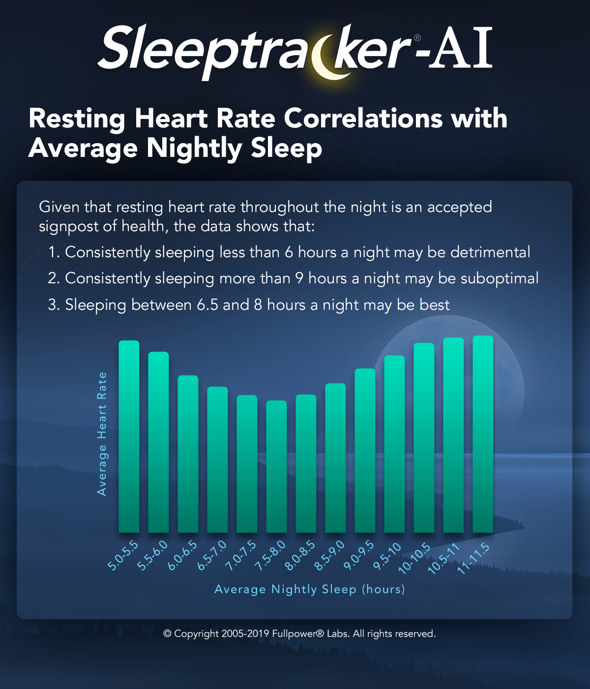
- BEST CRITICAL: "the longer we are awake during the day, the higher our heart rate throughout the night" → more sleep deprivation equals higher heart rate at night! + shows a delay in recovery (or may be due to bad lifestyle habits in the week-end such as alcohol consumption on friday and saturday)
- 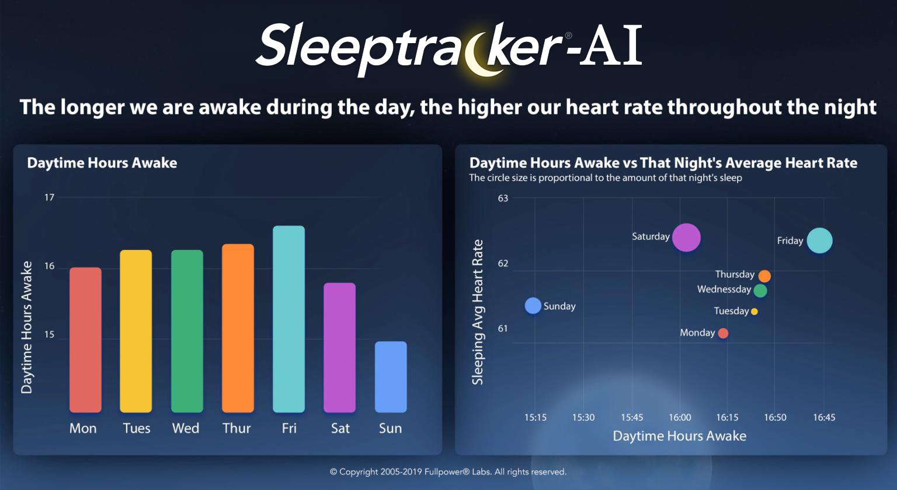
- Bradycardia and Tachycardia are associated with suboptimal sleep quality!
- 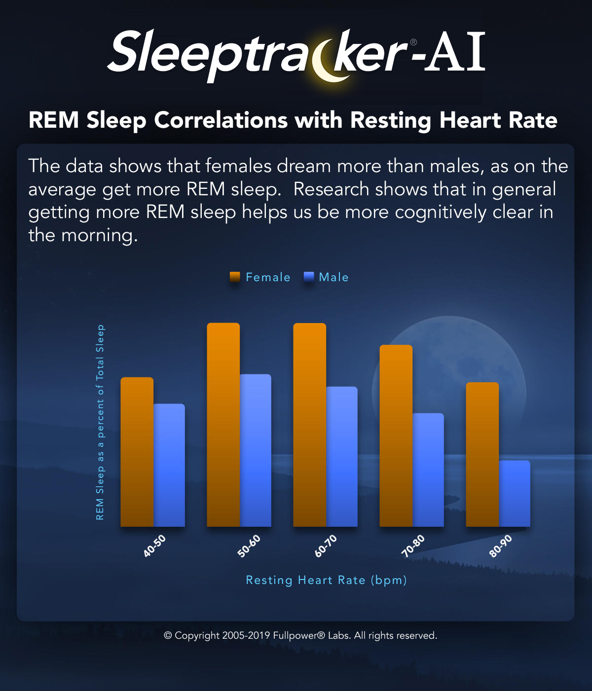
- from: https://www.fullpower.com/home/sleep-analytics
- Respiratory, cardiac, EEG, BOLD signals and functional connectivity over multiple microsleep episodes, 2021 https://doi.org/10.1016/j.neuroimage.2021.118129
- Work of Kleitman before 1966, seminal work on circadian rhythm, bright light exposure, core body temperature and heart rate: https://doi.org/10.1152/physrev.1966.46.1.128
- "Kleitman and Ramsaroop (I 34) present a vast accumulation of data on temperature and heart rate, whose circadian rhythms can be closely superimposed
subjects the increase in minute pulse rate was between IO and 15 per degree F
increment in rectal temperature; and since temperature is known to affect the
heart rate directly, the pulse rhythm could have been a simple consequence of the
rhythm in temperature. The further observation that during and after a 14day
period of thyroid administration the temperature and pulse rate rose and fell in
parallel does not strengthen the case; the minute pulse rate change was here 26
per degree F, so the parallelism was more probably due to two independent effects
of thyroid hormone. Neither temperature nor pulse rate shows a circadian rhythm
at birth; both become rhythmic at about the same age of 4-6 weeks (I IO) and
increase in amplitude up to perhaps 2 years, although the age at which the rhythms
are established cannot be determined with any high precision.
A complete dissociation between these two periodicities, however, has been
demonstrated (133) in subjects on abnormal time schedules in the Arctic.’ Thus
Kleitman himself, when living on an 18- or 28-hr day, showed a continuing 24-hr
temperature rhythm, while his pulse rate clearly followed an 180 or 28-hr rhythm.
Unfortunately the conditions for these experiments were far from ideal; although
an Arctic summer provided continuous daylight, the subjects were living in a
community in which solar time was all too evident, with empty streets and closed
shops at night. This circadian influence may have maintained the 24-hr rhythm
in temperature. The immediate adaptation of pulse rate to a day of 18 or 28 hr
suggests that there is no endogenous rhythm and that pulse rate is determined
largely by habit, being low during rest and sleep and higher during activity; only
if these influences are small is it also determined by the rhythm of body temperature. "
- BEST CRITICAL: Effects of circadian disruption on the cardiometabolic system, 2009 https://doi.org/10.1007/s11154-009-9122-8
- "More recently, Ivanov et al. confirmed a circadian variation in average heart rate (R-R interval) and average standard deviation of inter-beat interval (STDRR) using a 38-hour CR protocol, with the longest R-R intervals (thus slowest HR) and largest STDRR (measure of parasympathetic cardiac modulation) occurring during the biological night [33]. Similar findings with regards to the presence of a clear circadian rhythm in autonomic cardiac modulation have been further supported by FD studies. Hilton et al., using a 27-day FD protocol, showed a circadian rhythm in pNN50 (a parasympathetic cardiac marker; the percentage of consecutive inter-beat intervals differing by more than 50 msec; for technical details see [34]), with a peak during the biological night (equivalent to ∼5 AM) and the trough during the middle of the biological day (∼1 PM to 5 PM) [35]. The authors further showed a marked drop in R-R (i.e., increase in HR) from ∼5 AM to 9 AM. The authors propose that the increase in HR preceding the drop in parasympathetic cardiac modulation may suggest an increase in cardiac sympathetic activity at that time. These observations were also consistent with a stronger daily rhythm in parasympathetic (root mean square of successive differences of the inter-beat interval) as compared to sympathetic (pre-ejection period) cardiac modulation, assessed using a simple and practical protocol designed to minimize masking effects of behavior and environment by measuring cardiac autonomic modulation repeatedly across day and night while minimizing influences of behavioral activity, posture, environmental light, and meal intake [36]."
- "Specifically, Hu and colleagues studied the scaling exponent α of heartbeat fluctuations under FD conditions (11-day, 28-h cycle) [29]. [...] The scaling exponent displays a circadian pattern, with a peak, i.e. a value closer to a random occurrence of behavior, during the biological morning (equivalent to ∼10 AM), the time window during which epidemiological studies report the peak in adverse cardiac events and strokes and is lost after lesioning the SCN [29, 33, 39]."
- "a series of laboratory studies in humans showing that (a) HR show a circadian rhythm with low HR during the biological night, i.e. habitual sleep episode, and an increase during the biological day, i.e. habitual wake episode, (b) that the peak in vagal activity occurs during the biological night, whereas the peak of sympathetic activity occurs during the biological day, and (c) the scaling exponent α of heartbeat fluctuations, a potential marker for the risk of an adverse cardiovascular event, exhibits a circadian rhythm with a peak in the morning. Results from animal studies established that (a) the SCN innervates the heart and other organs involved in hemodynamic control, such as kidney, vasculature and adrenal, via a multisynaptic pathway, probably including direct projections form the SCN to the paraventricular nucleus of the hypothalamus (PVN), (b) heart rate shows a circadian rhythm that is not the secondary result of a circadian rhythm in locomotor activity, and that (c) ablation of the SCN leads to abolishment of the circadian rhythm in HR. Light, the major Zeitgeber of the circadian system and melatonin, the body’s internal dark signal, both impact cardiometabolic functioning in humans and animals. Light in humans has been shown to (a) acutely elevate HR, BP, core body temperature and cortisol and suppress melatonin during the biological night but not during the biological day, and (b) phase shift the rhythms of melatonin and cortisol. Correctly timed, light can help to facilitate re-entrainment of circadian rhythms after shift work or jet-lag, and potentially in treating ASPS and DSPS. Exogenous daytime and repeated nighttime melatonin administration has proven to be able to lower BP in normotensive and hypertensive subjects, with nighttime administration most clinically useful. Circadian misalignment, i.e. the mismatch of the circadian system with the desired sleep/wake cycle, is a hallmark of shift work and jet-lag and causes a multitude of negative symptoms and chronic exposure has been associated with several negative health consequences such as increased risk for cardiovascular disease, diabetes, obesity, and certain forms of cancer."
- Cortical arousal = unconscious wakefulness: “Arousals, irrespective of the underlying mechanism, impact heart rate, blood pressure, and cardiac hemodynamics acutely, but, when frequent, may also disrupt the circadian rhythm of the CV system, which is associated with unfavorable metabolic profiles, such as higher blood pressure, dysregulated blood lipids, and insulin resistance,” said the study authors. https://www.ajmc.com/view/sleep-disturbance-associated-with-increased-risk-of-death-particularly-in-women and https://doi.org/10.1093/eurheartj/ehab151
- BEST GRAPH: core body temperature (CBT) and heart rate and distal-proximal temperature: Kräuchi K, Cajochen C, Werth E, Wirz-Justice A. Functional link between distal vasodilation and sleep-onset latency? Am J Physiol Regul Integr Comp Physiol. 2000 Mar;278(3):R741-8. doi: 10.1152/ajpregu.2000.278.3.R741. PMID: 10712296. https://pubmed.ncbi.nlm.nih.gov/10712296/ (mirror)
- 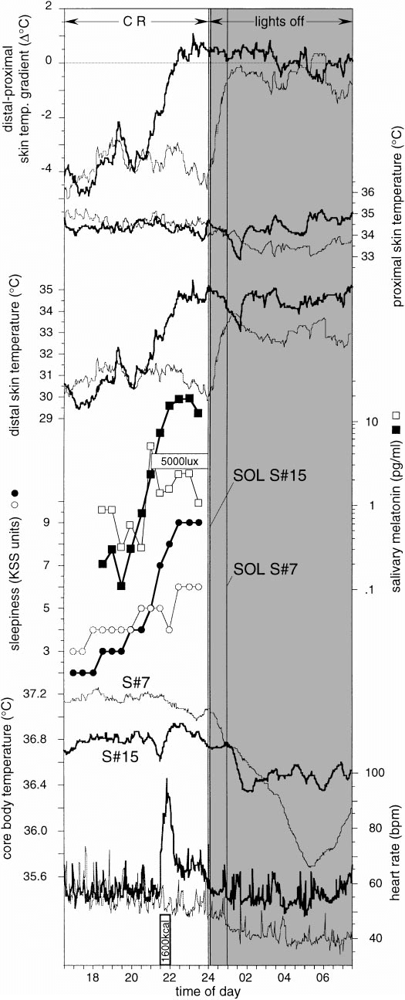
- METHOD: "Using a mixed-effect cosinor model, the mean amplitude of the circadian pattern of the standard deviation of the interbeat interval of normal sinus beats (SDNN), an HRV metric, differed between subjects with and without COVID-19 (P=.006)." https://www.ncbi.nlm.nih.gov/pubmed/33529156
- BEST CRITICAL: influences of the circadian rhythm on the heart rate: https://pubmed.ncbi.nlm.nih.gov/22877674/
- "A circadian rhythm in resting heart rate has been reported by different research groups in healthy humans, with a broad peak occurring during the middle of the biological day and a trough during the biological night (Figs. 2 and and3;3; Burgess et al., 1997; Kräuchi and Wirz-Justice, 1994; Scheer et al., 2010; Shea et al., 2011). On the other hand, the reactivity of heart rate to standardized exercise and postural changes is not influenced by the circadian timing system (Fig. 3; Hu et al., 2011; Scheer et al., 2010). Considering that the circadian peak in heart rate does not occur during the biological morning and that heart rate reactivity to behavioral stressors is not under circadian control, it is unlikely that the circadian timing system’s influence on heart rate contributes to the morning peak in adverse cardiovascular events. In rats, there is also a circadian rhythm in resting heart rate under constant dark conditions, thus even independent of the circadian rhythm in behavioral activity (Scheer et al., 2001). After lesioning the SCN, the circadian rhythm is abolished and the level of resting heart rate is intermediate between that during the biological day and night in intact animals. This suggests that the SCN has an inhibitory and excitatory influence on resting heart rate during the biological day and night, respectively. This is reminiscent of the regulation of melatonin and corticosteroids for which the SCN uses both inhibitory (e.g., GABA) and excitatory neurotransmitters (e.g., glutamate; Kalsbeek et al., 1996; Perreau-Lenz et al., 2003)."
- Trough may indicate circadian night, see fig2
Other notes
- circadian body temperature:
- BEST TOSEE: Measuring circadian rhythm https://pubmed.ncbi.nlm.nih.gov/19268173/
- BEST TOSEE: How is the circadian rhythm of core body temperature regulated? Kurt Krauchi 2002 editorial http://www.chronobiology.ch/wp-content/uploads/publications/2002_02.pdf
- "The circadian rhythm of core body temperature (CBT) is a well-documented physiological phenomenon. Already in 1842, Gierse [6] had shown that his own oral temperature revealed a maximum temperature in the early evening and a minimum in the early morning hours with a maximum-minimum range of 0.9 °C. It had been assumed for a long time that muscular activity (exercise) and digestive processes were the most important factors for generation of the CBT rhythm [8]. Aschoff and his colleagues systematically explored the causes of this rhythm [1, 2]. He showed that the circadian rhythm of CBT is determined both by changes in heat production and changes in heat loss, and concluded that heat production undergoes a circadian rhythm which is phase advanced by 1.2h with respect to the circadian rhythm of heat loss, i. e. when heat production surpasses heat loss, CBT increases – transport of heat needs time. Therefore, when we want to explain changes in CBT we need to know the relationship between heat production and heat loss."
- BEST: SCN and body temperature: Temperature rhythms keep body clocks in sync https://www.sciencedaily.com/releases/2010/10/101014144314.htm + Ref: Temperature as a Universal Resetting Cue for Mammalian Circadian Oscillators. Science, 2010; 330 (6002): 379 DOI: 10.1126/science.1195262
- The circadian rhythm of body temperature https://doi.org/10.1016/0031-9384(92)90188-8
- ghrelin and fasting hormones and circadian rhythm: Circadian Body Temperature Rhythm and the Interaction with Energy State https://www.intechopen.com/books/homeostasis-an-integrated-vision/circadian-body-temperature-rhythm-and-the-interaction-with-energy-state
- The circadian rhythm of body temperature https://pubmed.ncbi.nlm.nih.gov/1523238/
- Free-running melatonin, sleep propensity, cortisol and temperature rhythms in a totally blind person https://pubmed.ncbi.nlm.nih.gov/1635312/
- Sleep propensity free-runs with the temperature, melatonin and cortisol rhythms in a totally blind person https://pubmed.ncbi.nlm.nih.gov/1519008/
- Melatonin in circadian sleep disorders in the blind https://pubmed.ncbi.nlm.nih.gov/10085469/
- Bright lights accelerate the re-entrainment of circadian clock to 8-hour phase-advance shift of sleep-wake schedule: 1) Circadian rhythms in rectal temperature and plasma melatonin level https://pubmed.ncbi.nlm.nih.gov/1753467/
- Non-photic entrainment of human circadian clock--effects of forced sleep-wake schedule on the circadian rhythm in plasma melatonin https://pubmed.ncbi.nlm.nih.gov/8752534/
- Model: Non-photic entrainment of human circadian clock--effects of forced sleep-wake schedule on the circadian rhythm in plasma melatonin https://pubmed.ncbi.nlm.nih.gov/8752534/
- BEST: More than a marker: interaction between the circadian regulation of temperature and sleep, age-related changes, and treatment possibilities https://pubmed.ncbi.nlm.nih.gov/10841209/
- "The neurobiological mechanisms of both sleep and circadian regulation have been unraveled partly in the last decades. A network of brain structures, rather than a single locus, is involved in arousal state regulation, whereas the suprachiasmatic nucleus (SCN) has been recognized as a key structure for the regulation of circadian rhythms. Although most models of sleep regulation include a circadian component, the actual mechanism by which the circadian timing system promotes--in addition to homeostatic pressure--transitions between sleep and wakefulness remains to be elucidated."
- "A review of the literature shows that increased brain temperature is associated with a type of neuronal activation typical of sleep in some structures (hypothalamus, basal forebrain), but typical of wakefulness in others (midbrain reticular formation, thalamus). Not only local temperature, but also skin temperature are related to the activation type in these structures. Warming of the skin is associated with an activation type typical of sleep in the midbrain reticular formation, hypothalamus, and cerebral cortex (CC). The decreasing part of the circadian rhythm in core temperature is mainly determined by heat loss from the skin of the extremities, which is associated with strongly increased skin temperature. As such, alterations in core and skin temperature over the day could modulate the neuronal activation state or "preparedness for sleep" in arousal-related brain structures. Body temperature may thus provide a third signaling pathway, in addition to synaptic and neurohumoral pathways, for the circadian modulation of sleep."
- "Finally, the model indicates that appropriately timed direct (passive heating) or indirect (bright light, melatonin, physical activity) manipulation of the nocturnal profile of skin and core temperature may be beneficial to disturbed sleep in the elderly. Although such procedures could be viewed by researchers as merely masking a marker for the endogenous rhythm, they may in fact be crucial for sleep improvement in elderly subjects."
- Control of slow wave sleep by thermoregulatory mechanisms https://pubmed.ncbi.nlm.nih.gov/2377644/
- External temperature also influences our circadian rhythms, study reports https://www.zmescience.com/science/temperature-circadian-rhythm/
- Figure 3 of http://www.aulamedica.es/nh/pdf/8776.pdf shows temperature gets higher in anticipation to sleep and in afternoon, using wrist limb skin temperature + methods such as cosinor and mesor (midline estimating statistic of rhythms)
- Researchers at UT Southwestern Medical Center have found that fluctuations in internal body temperature regulate the body's circadian rhythm, the 24-hour cycle that controls metabolism, sleep and other bodily functions. Temperature rhythms keep body clocks in sync https://www.sciencedaily.com/releases/2010/10/101014144314.htm
- Proximal skin temperature followed the same circadian rhythm as rectal temperature + temperature link with ecg: Circadian rhythm of heat production, heart rate, and skin and core temperature under unmasking conditions in men, 1994, Krauchi & Wirz-Justice https://pubmed.ncbi.nlm.nih.gov/8092328/
- Tutos DIY sensors, with code to convert analog voltage to real measures:
- light sensor: https://smartphonedaq.com/100102.page
- ECG (handheld): https://smartphonedaq.com/android-python-ecg.page
- temperature sensor (thermistor): https://smartphonedaq.com/100106.page
My notes
TODO:
- temperature 2 ibuttons en plus: 1 sur trunk internal, 1 sur bras external (skin temperature). + GreenTEG Core en meme temps, pourra comparer.
- BEST CRITICAL: wrist skin temperature using iButton on the AX6 watch using velcro, this may allow to detect the circadian rhythm! See https://pubmed.ncbi.nlm.nih.gov/18761026/ and https://pubmed.ncbi.nlm.nih.gov/23577201/ and especially WTiO (Wrist skin temperature increase onset) which anticipates melatonin production: https://pubmed.ncbi.nlm.nih.gov/24164100/
- To summarize: wrist skin temperature (WTiO) can detect start of biological night (associated with the DLMO), and minimal core body temperature (CBTmin) the end (light therapy)! It can also detect the siesta time, which is independent from feeding time!
- BEST CRITICAL: wrist skin temperature (distal temperature) placement using Velcro to attach the iButton to a cotton sports wristband! + one sample every 10min is very fine! So every 5min is even better! https://pubmed.ncbi.nlm.nih.gov/18761026/
- proximal body temperature does NOT work, see figure 7, need to use core body temperature or distal (wrist) skin temperature!
- Proximal iButton try back or neck, better than trunk: https://pubmed.ncbi.nlm.nih.gov/33061911/
- BEST CRITICAL: arduino DIY light sensor rethink with a light intensity sensor with blue-green light filter, to directly get the intensity of exposure to blue-light! https://www.researchgate.net/publication/334043969_Determining_Light_Intensity_Timing_and_Type_of_Visible_and_Circadian_Light_From_an_Ambulatory_Circadian_Monitoring_Device
- cut filter from red laser glasses, find one glasses with guaranteed range so that I know exactly what is filtered, I should mimic as closely as possible the range they had in this study.
- BEST IDEA WEARABLE ME ALL-IN-ONE: make my own ECG optical + thermistor + 3-axis accelerometer on armband with microsd card and bluetooth streaming using an arduino-like board with breakouts, this should be sufficient to capture skin temperature + RR intervals (heart rate and heart rate variability) + activity (sleep-wake phases - actigraphy). First confirm that these measures work to monitor the circadian rhythm (and determine with what algorithms), then I can try to make this all-in-one wearable with both data storage for offline analysis and online streaming via bluetooth for users to monitor in real-time their circadian rhythm (and stream the history too this is necessary).
- IT EXISTS! Except for ECG. Recommend for researchers this all-in-one system: ACM KRONOWISE® 2.0 watch, all-in-one system for circadian rhythm study and assessment, combined with the Circadianware platform for light sensing, wrist skin temperature and 3-axis actigraphy! Used in lots of research studies already with Circadianware software: http://www.kronohealth.com/productos-y-servicios/
- CircaLog
- Polar H10 ECG and accelerometer BLE receiver Android app long term recording
- like the one I use currently but with auto retry if communication failed at some point, will retry until connection is reestablished or logging is stopped
- save in csv file along the way, so that if crash then no issue it's already saved
- update battery periodically (old app only updates once when connecting to the H10)
- use the android sdk provided by Polar, better to code a native android app in Java to reduce memory and cpu consumption, a non-native Python or other app will consume more phone battery
- smartphone receiver app advantages: full ECG + accel data recording, restart automatically, long battery if using Realme 6i, but sometimes the signal can be cut and a dedicated phone to receive the data is necessary (to avoid aggressive background app kill by Android OS).
- or can also record 1Hz RR et HR on internal memory. But how long the internal memory would last? But still for people without a dedicated phone, it would be better than nothing, if at least 24h would be great, need to test.
- need to code in java, because in python kivy it will be using opengl and so use much more battery
- Docs and tools:
- https://github.com/watsonix/node-ble-hr
- https://github.com/polarofficial/polar-ble-sdk/tree/master/examples/example-android/androidBleSdkTestApp
- https://web.archive.org/web/20190621133931/https://developer.polar.com/wiki/H6,_H7_and_H10_Heart_rate_sensors
- https://web.archive.org/web/20190621133931/https://developer.polar.com/wiki/H6,_H7_and_H10_Heart_rate_sensors
- https://blog.alikhalil.tech/2014/11/polar-h7-bluetooth-le-heart-rate-sensor-on-ubuntu-14-04/
- RR intervals can have as many as 4 in one packet!
- "Q: Why there are sometimes 0-4 RR-intervals? A: Bluetooth exchanges data around 1 s intervals and if your heart rate is around 60 bpm, then almost every RR-interval hits between data transmission. If you have heartrate eg. 40, then your RR-interval is over 1s => not every BLE packet contain RR-interval. Then if your heartrate is eg. 180, then there is at least two RR-intervals in BLE packet." https://play.google.com/store/apps/details?id=com.j_ware.polarsensorlogger
- even if persistent mode, send taskbar notification and vibrate to signal that the device disconnected, maybe bad contact with chest belt electrodes and skin, so if we don't notify the user then they may acquire useless data.
- MY OBSERVATIONS:
- GreenTEG Core: core temperature decreases and stays low when biological night or nap, but rises up when waking up in the middle of the night or when awake. A rise of core temperature (at an odd time such as before the usual time for the biological night) indicates an energy boost.
- ECG: heart rate low and stable when asleep, but starts to become higher and more variable in the last cycle or even before if sleeping outside of the biological night, may be usable as a metric to indicate if one is sleeping under the biological night?